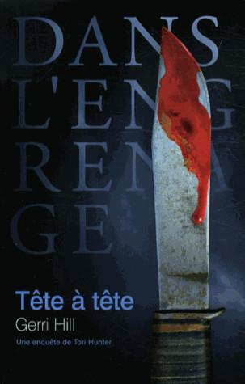

Gerri Hill
Tête à tête
Éditions Dans L'Engrenage
B. P. 104
40 002 Mont-de-Marsan cedex – France www.danslengrenage.com
Titre original : Partners
© Gerri Hill, 2008.
ISBN original : 978-1-59493-130-7
© Éditions DANS L'ENGRENAGE, 2012
pour la traduction française.
ISBN 978-2-915342-30-7
ISSN 2101-2601
Graphisme, photographie et illustrations :
FRANÇOIS A. WARZALA.
1
O'Connor, on est là ! » Casey suivit le son de la voix de Tori Hunter et salua d'un signe de tête un nouveau technicien de laboratoire qui relevait des empreintes près du téléphone. Si l'appartement était propre et ordonné, la chambre, elle, était sens dessus dessous. Elle s'arrêta sur le pas de la porte et découvrit Tori, accroupie à côté du lit, qui écoutait Mac décrire la scène. Le matelas était ensanglanté.
« La vache... »
Tori leva les yeux et lui fit signe de s'approcher.
« Spencer a emmené le cadavre.
— Qu'est-ce qu'il y a comme sang !
— On lui a tranché la gorge, expliqua Tori en se relevant. Elle était attachée au lit. Rita ne pense pas qu'elle ait subi d'agression sexuelle.
— Mais on a trouvé du sperme sur les draps et sur ses jambes, précisa Mac. Je l'ai déjà envoyé au labo. Spencer fera des prélèvements pour voir si elle a été violée, mais apparemment, notre type n'a laissé de souvenir qu'à l'extérieur du corps.
— Qui est-ce ? » Casey avait l'habitude de travailler sur des victimes vivantes. Assimiler une victime à un cadavre ne lui était toujours pas facile.
« Sikes est en train de parler au gardien... La carte d'identité dans le sac à main est au nom de Dana Burrows. Étudiante à l'université du Texas, à Dallas.
— Il n'y a pas eu d'effraction. Un petit copain ?
— À envisager, répondit Tori, haussant les épaules. J'ai envoyé deux uniformes dans le voisinage pour voir si quelqu'un la connaissait. Mais il est près de 10 heures, la plupart des voisins ont dû partir bosser.
— Qui l'a trouvée ?
— Le gardien. Il a reçu un appel d'une de ses amies. Elles devaient se retrouver hier soir pour réviser, mais elle n'est jamais venue. Comme elle ne réussissait à la joindre ni sur son portable, ni par mail, elle a téléphoné au concierge. Il se rappelle son prénom, Julie. Elle ne lui pas donné son nom de famille.
— Bon, je commence par la fac. J'emmène Sikes ?
— Non. J'ai besoin de lui. Il va falloir qu'on localise les membres de la famille et qu'il les interroge. »
Casey hocha la tête. L'annonce aux familles coûtait beaucoup à Tori. Sikes, par contre, était doué dans ce domaine. Son charme lui permettait d'exprimer des regrets sincères et une certaine compassion. Les gens le croyaient sur parole quand il leur assurait que la police mettrait rapidement l'assassin derrière les barreaux.
Tori et Casey regagnèrent le salon.
« Rien ne semble avoir été déplacé, ici.
— Il avait peut-être une clé, avec laquelle il est entré pendant son sommeil, suggéra Casey.
— Possible. Un petit ami a souvent un double.
— Ok. Je file voir ce que je déniche à l'université. On se tient au courant. »
Tori l'arrêta.
« Tu viens dîner ? » Casey lui adressa une question muette. « D'après ce qu'il y avait sur le plan de travail de la cuisine ce matin, Sam fait des spaghettis au poulet.
— Mon plat préféré ! J'apporte le vin », s'écria Casey avec un large sourire.
2
« Ecoutez, je comprends très bien vos règles de confidentialité. J'ai juste besoin de quelques renseignements.
— Détective O'Connor, je ne peux rien vous donner d'autre que ce qui est publié dans l'annuaire de l'université, répéta pour la quatrième fois la responsable du service des inscriptions.
— On nous accordera sans difficulté une injonction de produire ces informations », menaça Casey. Les sourcils de la vieille dame pointèrent au-dessus des lunettes à monture noire.
« Allez-y, je vous en prie. Ça me faciliterait l'affaire.
— Une jeune fille a été sauvagement assassinée. L'une de vos étudiantes. Tout ce que je demande, c'est un peu d'aide. J'aimerais juste rencontrer une personne qui la connaissait, qui allait en cours avec elle », ajouta-t-elle avec ce qu'elle espérait être un sourire charmeur, auquel son interlocutrice ne résisterait pas. En effet : le masque se fissura enfin.
« Attendez-moi dans le couloir. Je me renseigne pour trouver quelqu'un qui la fréquentait.
— Je vous en suis très reconnaissante, Mrs Wheat.
— Ne me remerciez pas, détective. Je ne vous ai encore rien communiqué. »
Casey sortit après l'avoir saluée discrètement. Elle avait horreur de supplier pour arracher des informations. Ils obtiendraient une commission rogatoire, bien sûr, mais les pistes refroidissaient vite si elles n'étaient pas exploitées à temps.
Elle s'installa sur une chaise rigide, croisa les jambes et regarda les étudiants passer. Ils avaient l'air tous si jeunes qu'elle se sentit soudain beaucoup plus âgée que ses 33 ans. L'un ou l'autre avait-il connu Dana, l'avait-il rencontrée en se rendant à un cours, s'était-il assis à côté d'elle ? La nouvelle que l'une des leurs avait été assassinée, impitoyablement assassinée, s'était-elle déjà propagée ?
Il n'y avait que quelques mois qu'elle avait été mutée, quittant l'Unité spéciale d'aide aux victimes pour intégrer la Criminelle ; elle n'y était pas encore habituée. Mais comme Tori Hunter le lui avait dit, on ne s'y habitue jamais. Elle l'espérait, d'ailleurs. Elle ne voulait pas s'accoutumer aux meurtres. C'était la raison qui l'avait conduite à abandonner son poste précédent. Elle était presque devenue insensible aux viols, aux agressions sexuelles, aux larmes. Elle s'était épuisée à tenter de convaincre ses victimes de témoigner au tribunal, de se confronter à leurs agresseurs, quand elles rêvaient d'une seule chose : oublier. Alors le jour où le lieutenant Malone lui avait offert une place dans son équipe, Tori n'avait pas eu à la pousser longtemps pour qu'elle accepte. Après le fiasco de Sainte Mary et l'assassinat du Père Michael[1], elles étaient restées en contact, se voyant soit chez Tori et Sam pour dîner, soit sur leur bateau pour un week-end de pêche. Elles étaient devenues proches, au point que Tori était désormais sa meilleure amie.
La sonnerie de son téléphone portable mit fin à ses rêveries. HUNTER était affiché en gras sur l'écran.
« O'Connor à l'appareil.
— On a le nom du petit copain. C'est un étudiant des cours du soir. Tu as trouvé quelque chose ?
— Non. La responsable des inscriptions ne veut pas violer la loi FERPA.
— Qu'est-ce que c'est que ça ?
— Une loi sur la protection de la vie privée en vigueur dans l'enseignement supérieur. J'ai essayé de l'amadouer. Je suis en train d'attendre pendant qu'elle voit si elle peut me donner quelque chose.
— D'accord. Ne perds pas trop de temps. On est en route pour aller chercher le petit ami.
— Vous avez parlé aux parents ?
— Oui, Sikes s'en est occupé. Ils habitent à Arlington. Le copain fait pratiquement partie de la famille. Ils sont sûrs qu'il ne lui aurait jamais fait de mal.
— Ils disent toujours ça.
— On a aussi identifié la Julie qui a appelé le gardien. Julie Watts, sa meilleure amie. Elle ne répond pas sur son portable. Puisque tu es sur place, tu devrais peut-être essayer de mettre la main dessus. Elle loge sur le campus.
— D'accord. » Casey griffonna le numéro que Tori lui dictait puis referma son téléphone et le glissa dans la housse en cuir fixée à sa ceinture. Elle sentit les regards d'étudiants qui passaient devant elle, et déplaça son étui de revolver dans son dos, hors de vue. L'automne, l'hiver, même au printemps, elle pouvait porter un blouson pour cacher son arme. Mais en été ? Il n'y avait pas grand-chose à faire, et comme Tori, elle se refusait à mettre une veste par 40 ° à l'ombre.
« Détective O'Connor ? »
Elle se retourna et répondit d'un signe de tête à une jeune fille qui s'approchait.
« Mrs Wheat m'a demandé de vous transmettre ceci, chuchota-t-elle en lui tendant une feuille de papier.
— Merci. Dites-lui bien que j'apprécie son geste. »
Elle se détourna et déplia la feuille de papier. Club de discussion. En dessous étaient notés un nom et un numéro de chambre. Elle emprunta le couloir et arrêta le premier étudiant qui croisa son regard.
« Excusez-moi. Sauriez-vous m'indiquer le bureau du Dr Arness ? Elle anime le club de discussion.
— Dans le bâtiment administratif. »
Casey s'apprêtait à lui demander où cela se situait, mais l'étudiant pressé avait poursuivi son chemin... Le campus n'était pas immense. Elle allait se débrouiller.
« Prochain pâté de maisons, prévint Sikes en se cramponnant quand Tori accéléra dans un virage. Je te jure, c'est un miracle qu'on soit encore vivants, vu ta façon de conduire !
— On arrive toujours à destination, non ?
— Oh, oui. Tu me fais juste perdre quelques années à chaque fois, c'est tout. » Elle écrasa la pédale de frein, projetant Sikes en avant. « Merde, Hunter !
— Le feu était orange !
— Tu t'arrêtes à peine au rouge, alors à l'orange !
— Les flics ne sont pas au-dessus des lois. »
Elle jeta un œil dans le rétroviseur, soulagée de ne pas avoir été emboutie. Personne ne s'arrêtait à l'orange. Dès que le feu passa au vert, elle franchit le carrefour à toute allure, renvoyant John en arrière dans son siège.
« T'es pire qu'un mec, maugréa-t-il en remettant sa ceinture en place. Un ado !
— "Glass Sporting Goods", c'est là.
— Tu crois que sa famille lui a déjà téléphoné ?
— Tu leur as bien demandé de ne pas le faire ?
— Ça ne veut pas dire qu'ils ont obéi.
— Je parie qu'ils ont appelé. »
Les clients étaient rares dans la boutique, mais plusieurs personnes arborant des badges formaient un petit groupe au niveau de l'une des caisses. Tori regarda Sikes.
« Gagné. » Elle se dirigea vers l'attroupement et brandit sa plaque. « Nous venons voir Brian Helms. Voici le détective Sikes et je suis la détective Hunter. Il est là ? »
Après une légère hésitation, une jeune fille s'avança.
« Non, il est parti. La mère de Dana a appelé. On n'arrive pas à réaliser. Brian était affolé.
— Est-ce que vous savez où il est allé ?
— Chez eux, je suppose.
— Chez les parents ?
— Oui.
— Formidable », marmonna-t-elle dans un soupir.
3
Tori se glissa à pas de loups dans l'appartement et sourit en entendant Sam chanter dans la cuisine. La délicieuse odeur des spaghettis au poulet vint lui chatouiller les narines. Immobile dans l'embrasure de la porte, elle regarda Sam verser sa préparation dans un plat à four.
« Je sais que tu es là, chuchota Sam sans se retourner.
— Ah bon ?
— Oui. Alors n'essaie pas d'entrer en catimini pour me surprendre.
— Tu as besoin d'aide ?
— Oui, s'il te plaît. »
Tori prit la poêle et la maintint en l'air pendant que Sam faisait tomber le reste de son contenu dans le plat. Elle se pencha davantage et posa un baiser léger sur ses lèvres.
Sam sourit, débarrassa Tori de l'ustensile et le mit dans l'évier avant de passer ses bras autour du cou de son amante.
« Tu m'as manqué aujourd'hui. »
Tori soupira et s'abandonna contre elle.
« Oui, pareil pour moi. Dure journée.
— J'en ai entendu parler, chérie.
— Une douche, ça te dit ? proposa Tori en s'écartant légèrement.
— Bien sûr. Mais il va falloir faire vite.
— Pourquoi ?
— Tu es une bonne détective, donc tu avais compris qu'on mangerait des spaghettis au poulet ce soir, répondit Sam en menant Tori dans leur chambre.
— Et alors ? »
Sam déshabilla Tori et ses mains se posèrent avidement sur sa poitrine.
« Alors tu as invité Casey à dîner. »
Tori ferma les yeux lorsque les lèvres de Sam emprisonnèrent son téton.
« Ça t'ennuie ?
— Bien sûr que non... Comme je te le disais, il faut juste se dépêcher », murmura-t-elle sur sa bouche.
Elle recula, ôta son tee-shirt et le laissa tomber sur le sol, à côté de celui de Tori. Lorsque celle-ci prétendit l'attirer à elle, elle l'arrêta.
« On se retrouve sous la douche ! »
Tori retira ses bottines, son jean et suivit Sam dans la salle de bain. L'eau coulait déjà quand elle ouvrit le battant en verre et la vue de Sam nue, la peau ruisselante, dans un halo de vapeur, lui coupa le souffle, comme toujours. Elle tira la porte derrière elle. Sam s'avança dans ses bras.
« Je t'aime... » Elle l'embrassa.
Tori intensifia leur baiser et gémit quand la langue de Sam pénétra dans sa bouche. Ses mains glissèrent sur les fesses de Sam et elle la serra fermement. La passion entre elles ne cessait de la stupéfier. Leurs innombrables caresses ne suffisaient jamais. Chaque fois qu'elles faisaient l'amour était plus intense que la précédente. Elle céda à cette exaltation, plaqua Sam contre le mur et insinua une cuisse entre ses jambes.
Les paumes vagabondes de Sam sur le corps de Tori s'attardèrent sur ses seins, dont elles titillèrent le bout, qui alla en durcissant.
« Je t'aime », balbutia Tori.
Sam la regarda dans les yeux, avant de plonger pour happer un téton humide. Elle l'agaça du bout des dents, puis sous les tressaillements de Tori, le prit entre ses lèvres, le suça et l'aspira tout entier.
Décidément, Tori n'en aurait jamais assez. Elle renversa la tête en arrière et laissa son amante mener la danse. Sam en profita pour coller à son tour Tori au mur et lui faire chevaucher sa cuisse. Tori respirait plus vite à mesure que la main de sa partenaire se faufilait entre leurs corps jusqu'à s'enfoncer dans son humidité. Elle écarta les jambes et ferma les yeux lorsque Sam entra en elle. Elle s'abandonna, ses hanches adoptant un rythme effréné, le sein presque douloureux dans la bouche avide. Une secousse la parcourut à l'instant où le pouce de Sam trouva son clitoris et commença à le masser en formant des cercles, ses doigts toujours en elle.
Son orgasme l'emporta d'un coup, des mouvements erratiques secouèrent son bassin et son cri de plaisir résonna en écho autour d'elles. Sam la serra dans ses bras et l'entraîna sous le jet d'eau chaude.
« J'adore ça... »
Elle essuya le visage de Tori, qui ouvrit les yeux et sourit.
« Pourquoi est-ce qu'on n'arrive jamais jusqu'au savon quand on se douche ensemble ? »
Sam guida sa main entre ses jambes.
« Parce qu'il y a toujours un truc qui nous distrait, souffla-t-elle alors que les doigts de Tori l'emplissaient. Le savon peut attendre. »
« J'ai entendu une rumeur aujourd'hui, dit Sam en servant le vin. De source sûre.
— À quel sujet ? demanda Casey.
— Toi.
— Moi ?
— Leslie Tucker, de la Division des Agressions, a été mutée à la Criminelle.
— Et alors ?
— Nouvelle coéquipière, devina Sam avec un grand sourire.
— Une coéquipière ? Pour moi ?
— C'est pas trop tôt ! enchaîna Tori. C'est fou que Malone ait laissé traîner ça aussi longtemps.
— Je déteste avoir des partenaires que je connais pas ! maugréa Casey en prenant son verre. Merci.
— Il paraît qu'elle est sympa.
— Pourquoi est-ce qu'elle a été mutée ?
— Elle est de Fort Worth. Elle a travaillé à la Criminelle de là-bas pendant six ans, je crois. Elle n'est ici que depuis neuf mois. »
Casey regarda Tori.
« Tu étais au courant ?
— Non. Malone ne m'a pas prévenue. Mais ce sera bien que tu aies une coéquipière. T'auras plus à traîner avec Sikes et moi. Ou pire, avec Donaldson et Walker.
— Merci, Sam, dit Casey en acceptant l'assiette de spaghettis au poulet que son hôte lui tendait.
— Ne t'en fais pas trop. Je n'ai eu que des bons échos sur elle.
— Elle a quel âge ?
— Quoi ? Tu as peur qu'elle soit plus vieille que toi et qu'elle te mène à la baguette ? rit Sam.
— Je n'ai pas beaucoup d'expérience à la Crim'. Si elle a six ans au compteur, elle va jouer au petit chef.
— Elle est dans nos âges, ça m'étonnerait que ce soit une dure à cuire.
— En plus, tu es là depuis plus longtemps, observa Tori en prenant son assiette. C'est elle qui sera sous ton autorité.
— Plus longtemps ? Ça fait quatre mois que je suis avec vous ! » Elle mangea une bouchée de spaghettis au poulet et gémit. « Oh là là, Sam, c'est délicieux !
— Merci.
— Et tu as raison, avoir une coéquipière, ce sera pas plus mal. Aujourd'hui, par exemple, Tori m'a envoyée courir dans tout le campus. Et je n'ai pas appris grand-chose.
— Tu es sûre que le petit ami est innocent ? demanda Sam à Tori.
— Ouais. Il était complètement sonné. Je doute qu'on puisse être si bon acteur. » Tori enroulait des pâtes sur sa fourchette. Elle marqua une pause. « En plus, il nous a donné son ADN volontairement.
— C'est terrifiant de penser qu'il s'agissait d'une attaque à l'aveugle, soupira Casey. Parce que qui dit à l'aveugle, dit sans mobile.
— Et qui dit sans mobile, dit qu'il risque de recommencer, renchérit Sam.
— On aura peut-être de la chance, observa Tori. Il suffit que Mac ait une touche dans la banque de données des profils ADN. »
4
« O'Connor ? J'ai un mot à vous dire, lança Malone depuis son bureau.
— Nous y voilà, soupira Casey avec un coup d'œil à Tori.
— Quoi ? demanda Sikes. T'as des problèmes ?
— Sam croit savoir qu'on va avoir une nouvelle recrue, répondit-elle en repoussant sa chaise. Pour faire équipe avec moi.
— Ah, j'espère qu'il est sympa.
— Elle, corrigea Tori.
— Elle ? Alors j'espère qu'elle est hétéro ! rigola John. Et mignonne...
— J'espère juste qu'on s'entendra », marmonna Casey. Elle rejoignit le lieutenant Malone. « Oui, monsieur, vous vouliez me voir ?
— Asseyez-vous, dit-il en désignant les sièges devant son bureau.
— Tout va bien, lieutenant ? »
Il promena une main sur son crâne chauve brillant de sueur. Elle s'assit en face de lui et attendit.
« En fait, j'ai de bonnes nouvelles, O'Connor.
— Ah bon ?
— Oui. Vous avez enfin votre propre équipe. » Elle se borna à hausser les sourcils. « Vous allez avoir une coéquipière. » Il ouvrit une chemise cartonnée. « Leslie Tucker. Elle nous arrive des Agressions.
— Je vois. J'ai travaillé dans ce service avant l'Unité Spéciale, mais son nom ne me rappelle rien.
— Elle y a passé moins d'un an. Elle vient de Fort Worth. La Criminelle. Son dossier est impeccable. Je pense que vous l'apprécierez. »
Nerveuse, Casey pianota sur son jean, puis se leva.
«Je n'ai encore jamais travaillé avec une femme... Vous êtes sûr de votre choix ? Je veux dire, quitte à former de nouvelles équipes, Tori et moi, on s'entend vraiment bien. Elle n'aurait qu'à aller avec Sikes.
— Pas question, répondit Malone dans un éclat de rire. Sikes est complètement incapable de travailler avec un joli minois... En plus, j'aime beaucoup trop Sam pour ça.
— Qu'est-ce que Sam vient faire là-dedans ?
— Tori et vous, expliqua Malone, mal à l'aise dans son fauteuil. Vous êtes tout le temps ensemble, toutes les deux... Enfin... Qui sait ce qui peut arriver. »
Ce fut au tour de Casey de rire.
« Vous êtes en train de suggérer que Hunter et moi pourrions avoir une liaison ?
— C'est une possibilité.
— Non, non. Absolument pas, assura-t-elle en se rasseyant. Toute relation de couple a besoin d'un yin et d'un yang. Tori et moi, on est plutôt toutes les deux des yangs, si vous voyez ce que je veux dire... »
Malone rougit et détourna le regard.
« Yang ou pas yang, je ne vous affecterai pas ensemble. Pour votre information, les antécédents de Hunter en matière de partenaires sont légendaires. Depuis Sam, nous sommes enfin devenus une grande 18 famille unie et heureuse. Alors quand Tori est heureuse, la brigade est heureuse. Aussi surprenant que ça paraisse, Sikes et elle fonctionnent bien en binôme, je ne veux pas perturber ce fragile équilibre. C'est vous qui ferez avec la nouvelle, O'Connor.
— Et si elle ne me convient pas ?
— Elle a l'air sympa, elle est plus ou moins de votre âge. C'est pas une tire-au-flanc. Pourquoi elle ne vous conviendrait pas ?
— Pourquoi a-t-elle quitté Fort Worth ?
— Son fiancé travaille à Dallas et ils habitent ici. Elle en avait assez de faire le trajet. »
Un fiancé ? Super. Va falloir prévoir un mariage, pensa-t-elle avec consternation.
« Elle arrive quand ?
— Aujourd'hui.
— Vous ne vouliez pas me prévenir trop tôt, hein ?
— Tout ira comme sur des roulettes, O'Connor. Je vous l'ai dit, elle me semble très bien.
— Ok. Vous avez une affaire pour nous ? Vous préférez qu'on bosse avec Tori et Sikes sur l'étudiante ?
— Poursuivez avec Hunter et Sikes, puisque vous avez commencé. Donaldson et Walker viennent de boucler leur enquête, alors je leur ai attribué la grand-mère qui a été retrouvée ce matin.
— Quelle grand-mère ?
— Découverte dans sa voiture, morte d'une balle dans la tête.
— Bon sang !
— Ouais. On vit dans un monde de dingues... » Son attention fut attirée par du mouvement à l'extérieur de son bureau transparent. « Parfait timing. »
Casey suivit son regard. L'étonnement qui la saisit était visible. Quoi ? Ça, sa nouvelle coéquipière ? Des cheveux bruns, joliment dégradés à longueur d'épaule, encadraient un visage doux et bronzé, très légèrement maquillé. Zut. Si elle devait faire équipe avec une femme hétéro, elle aurait au moins pu être moche ! Pas cette... cette beauté qui traversait la salle des enquêtes. Quelle injustice !
Malone s'avança sur le seuil de son bureau.
« Détective Tucker ? Par ici ! »
Il s'effaça pour qu'elle entre et Casey tendit la main.
« Je m'appelle Casey O'Connor. Le lieutenant était en train de me mettre au courant.
— Leslie Tucker. Enchantée, répondit-elle en calant une mèche rebelle derrière son oreille, le sourire confiant, exempt de la moindre nervosité. J'espère que ça ne te dérange pas, mais je me suis renseignée un peu sur toi. Tu as encore beaucoup d'amis à l'Unité spéciale d'aide aux victimes.
— Ça ne me dérange pas, tant qu'ils t'ont menti, plaisanta Casey, sans manquer l'expression amusée dans les yeux noirs de la jeune femme.
— Ils avaient des choses très gentilles à dire à ton sujet. Ils ont menti ?
— Puisqu'on va travailler ensemble, tu finiras tôt ou tard par le découvrir... »
Malone eut un rire nerveux.
« Je suis convaincu que vous...
— Désolée de vous interrompre, lieutenant, coupa Tori en montrant la tête par la porte entrebâillée. O'Connor, Mac a appelé. Il a une touche dans la base de données ADN.
— Un nom ? s'enquit Casey.
— Il n'est pas entré dans les détails. On s'apprêtait à les rejoindre. Tu viens ? » Puis elle jeta un coup d'œil à Malone. « Pardon, lieutenant. Je suppose qu'elle reste sur l'affaire avec nous ?
— Oui. Et je vous présente la détective Tucker.
— Leslie, corrigea celle-ci en tendant la main à Tori.
— Tori Hunter. Bienvenue à bord ! » Elle lui céda le passage. « On y va à pied. Tu connais Mac et ses gars ?
— De nom, oui. C'est l'un de ses hommes, Emerson, qui travaillait le plus souvent avec notre service. »
Casey s'apprêtait à suivre Leslie Tucker hors du bureau de Malone, mais elle s'arrêta et se retourna avec un grand sourire.
« Mince, lieutenant, vous auriez pu me coller un cageot, non ?
— J'allais ordonner à Sikes de garder ses mains et ses yeux à leur place. Dois-je vous le demander aussi ?
— Non, non. J'ai appris il y a longtemps qu'il ne faut pas fricoter avec les hétéros. Ne vous inquiétez pas. J'ai pas l'intention de vous rejouer Tori et Sam. »
Leslie s'assit autour de la petite table avec les autres et les détailla un par un. John Sikes, un homme à femmes, le beau gosse de la maison. On lui avait conseillé de se tenir à bonne distance. Apparemment, c'était un dragueur invétéré. Tori Hunter : elle avait entendu toutes les horreurs possibles et imaginables sur elle, depuis l'histoire où elle avait poussé son partenaire par une fenêtre du deuxième étage à celle où elle avait frappé un lieutenant. Malgré cela, Hunter lui paraissait sympathique. Évidemment, elle avait aussi eu connaissance des rumeurs sur sa liaison avec Samantha Kennedy. Comme O'Connor, Samantha avait débuté au sein de l'Unité spéciale d'aide aux victimes. Là-bas, les gens avaient sauté sur l'occasion de raconter ce qu'ils savaient sur les deux jeunes femmes. Son regard glissa vers sa nouvelle coéquipière. Elle était grande et mince, avec des cheveux blond foncé en pagaille, comme s'ils avaient été séchés par le vent. Elle faisait l'unanimité chez les personnes à qui Leslie s'était adressée : Casey était quelqu'un de bien, totalement investie dans son boulot, amicale, aimable et très aimée dans la police. Fille sympa sur toute la ligne, et Leslie s'en estimait heureuse. Elle n'avait jamais eu de femme pour partenaire. Comment s'en sortirait-elle si elle s'avérait être du genre de Tori Hunter ? Elle la fixait encore quand Casey se retourna et croisa son regard. Elle sourit, puis détourna les yeux à l'arrivée de Mac.
« Désolé de vous avoir fait attendre. Je voulais reprendre le rapport de l'autopsie que Jackson avait pratiquée sur la victime précédente.
— Quelle victime précédente ? demanda Tori.
— L'ADN qui est ressorti de la base de données correspond à celui d'une scène de crime datant de trois mois. Donaldson et Walker étaient chargés de l'enquête, lut-il sur ses notes. La fille avait été retrouvée dans son appartement. Morte par strangulation, la gorge tranchée post mortem.
— Violée ? interrogea Casey.
— Non. Exactement comme la vôtre, attachée au lit. Du sperme sur les draps et les jambes. C'est tout.
— Donaldson et Walker étaient sur l'affaire ? » Tori se leva, se mit à faire les cent pas derrière les sièges et laissa échapper un juron.
« T'emballe pas, Hunter, tempéra Sikes. Lis d'abord le dossier. »
Leslie les observa en se demandant si elle était sur le point d'assister à une scène à la Tori Hunter. Elle interrogea O'Connor des yeux, et sa partenaire lui renvoya un regard qui disait je te raconterai plus tard.
« On est en train d'analyser les empreintes, continua Mac. Rien dans le fichier pour identifier celles qu'on a relevées sur la première scène de crime, mais on en trouvera peut-être qui seront concordantes sur les deux lieux. Cela dit, ça ne vous aidera pas beaucoup à obtenir le nom de votre gars.
— Ok. Est-ce que Spencer a découvert quelque chose à l'autopsie ?
— Le rapport toxicologique n'est pas encore revenu. La mort a été provoquée par section de la carotide. Ça, on le savait déjà. On a ramassé une fibre peu commune qui ne provient de rien dans la chambre. Mon équipe tâche d'en déterminer l'origine. »
Leslie écoutait, intriguée par ce dans quoi elle mettait les pieds. Elle avait espéré se voir confier une nouvelle affaire, plutôt que de débarquer en plein milieu d'une enquête. Bien sûr, elle se sentirait moins seule si elle avait au moins eu l'occasion de lire le dossier. Dans l'état actuel des choses, elle n'avait aucune idée de ce sur quoi ils travaillaient.
« Si tu veux, Tucker et moi, on ressort le rapport de Donaldson et on jette un œil à ce qu'il contient ? »
À la surprise de Leslie, Tori sourit à Casey.
« Quoi ? T'as peur que je le fasse moi-même ?
— Je trouve inutile que quelqu'un se mange une balle, c'est tout. »
Sa surprise redoubla quand Hunter éclata de rire.
« Ouais, bonne idée, O'Connor. En plus, il faut qu'on la mette au courant de l'affaire, dit Tori en désignant Leslie. Informe Malone avant, t'avise pas de ressortir le dossier comme ça.
— Pourquoi ? objecta Casey en se levant. Tu te gênerais pas, toi.
— Oui, mais moi, je n'aurais aucun scrupule à descendre Donaldson, alors que toi, oui.
— D'accord. On se voit au bureau, conclut Casey. Viens Leslie, je vais tout te dire en route. »
Tucker se contenta de suivre sa coéquipière. Si on lui avait effectivement expliqué que Tori Hunter s'était plus ou moins adoucie depuis deux ans, elle n'avait jamais entendu évoquer un quelconque sens de l'humour.
« Notre victime s'appelle Dana Burrows, commença Casey une fois à l'extérieur. Elle a été retrouvée chez elle. Pas d'effraction.
— Attends, l'interrompit Leslie avec une légère pression sur son bras. Pourquoi Hunter était-elle en colère contre Donaldson ?
« Tu as déjà rencontré Donaldson et Walker ?
— Pas encore, mais ce sont leurs places, là-bas, non ? » Elle montra le mur opposé.
— Oui. » Casey frappa sur le chambranle de la porte. « Lieutenant, vous avez une minute ?
— Bien sûr, O'Connor. Qu'est-ce qui se passe ? »
Il regarda derrière Casey et sourit à Leslie.
« Vous avez déjà besoin de changer de partenaire ? »
Leslie secoua la tête, regardant Casey dans l'espoir qu'elle prenne la situation en main. Elle l'exauça.
« On a eu des nouvelles de Mac. L'ADN du sperme correspond à celui trouvé sur un homicide qui remonte à trois mois.
— Fantastique, O'Connor. Alors qu'est-ce que c'est que cet air lugubre ?
— Affaire classée sans suite.
— Pour un homicide datant de trois mois ?
— Donaldson et Walker étaient dessus. Sans suite, parce que sans pistes.
— Merde. Je parie que Hunter a piqué sa crise.
— Oui, monsieur.
— Et vous voulez ressortir le dossier ?
— Si possible, oui.
— Pourquoi ce n'est pas Hunter qui est ici ?
— Pour éviter qu'elle bute Donaldson », sourit-elle.
Il éclata de rire. Tant de gaieté au sein du groupe étonnait Leslie. D'abord Tori Hunter qui taquine Casey O'Connor, puis le lieutenant... Elle n'y était pas accoutumée. Pas à la Division des Agressions, et encore moins à Fort Worth.
« D'accord, déterrez le dossier. Faites ce que vous avez à faire. J'informerai Donaldson.
— Merci, lieutenant. »
Casey entraîna Leslie vers la salle des enquêtes. Ce n'était pas si difficile, finalement.
5
Leslie déverrouilla l'appartement et entra, pour être aussitôt assaillie par le vacarme d'une partie de base-ball. Elle soupira. Juste une fois, «lie aimerait rentrer sans qu'il y ait un match à la télévision, sans qu'un des copains de Michael soit là pour un duel de jeux vidéos... Rien qu'une fois.
« C'est moi ! cria-t-elle en traversant le salon désert et en se dirigeant vers leur chambre. Je suis là ! » Elle frappa à grands coups à la chambre d'amis.
Le son s'éteignit et la porte s'ouvrit aussitôt. Michael se précipita dans le couloir et la prit dans ses bras, la souleva du sol et la fit tournoyer.
« Comment s'est passé ton premier jour ?
— Repose-moi, s'il te plaît, supplia-t-elle dans un éclat de rire. Ça s'est bien passé. J'ai pris une enquête en route, alors je suis un peu perdue... » Elle se pencha pour un baiser. « Et les voisins doivent te maudire. On entend la télé depuis le parking.
— Pardon, je me suis laissé emporter. » Il allait retourner à son match, quand il s'arrêta. « On a quelque chose de prévu pour le dîner ?
— Non.
— Bien. Jeff nous a invités à manger une pizza. On a fait un pari sur le match des Rangers. Tu sais eue c'est un grand fan des Yankees...
— Une pizza ? Écoute, vas-y sans moi. J'ai un dossier complet à lire.
— Ça ne te dérange pas ?
— Non, bien sûr que non. »
Une part d'elle savait que cela aurait dû la déranger. Jeff, le meilleur ami de Michael, habitait à l'étage du dessus. Et au troisième, il y avait Miles et Russel. Ces quatre-là étaient copains depuis la fac... et s'y croyaient encore. Jeff, au moins, sortait à l'occasion avec des filles. Mais Miles et Russel, eux, n'avaient aucune vie sentimentale. Ils s'offraient un abonnement pour tous les matchs des équipes de sport professionnel de la région métropolitaine Dallas-Fort Worth. Et souvent, ils invitaient Jeff et Michael.
Elle s'était persuadée que cela évoluerait. Lorsque leur relation était devenue sérieuse, elle avait cru que Michael cesserait de passer autant de temps avec eux. Ensuite, quand ils avaient emménagé ensemble, elle avait supposé qu'il resterait davantage auprès d'elle. Désormais, elle avait parfaitement compris que même s'ils se mariaient, cela ne changerait rien. À part s'ils déménageaient pour habiter une maison dans un quartier éloigné. Jusque-là, Michael était réfractaire à cette suggestion. Du coup, en retour, elle rechignait à fixer une date pour leur mariage.
Casey était assise sur sa terrasse, qui surplombait le lac White Rock. Elle avait troqué sa bouteille d'eau contre un verre de vin, puis un deuxième. C'était "l'effet terrasse". Elle pouvait y rester assise des heures, à admirer l'eau, l'esprit vagabond. Le mois de septembre approchait à grands pas, les journées étaient aussi chaudes qu'au cœur de l'été, mais les soirées fraîchissaient, chassant l'humidité, en un avant-goût d'automne.
Elle avait beau n'habiter là que depuis six mois, elle se sentait chez elle. Bien que le lac soit petit et cerné par la ville, l'endroit se révélait aussi calme que possible dans un environnement urbain. Et sa situation était pratique. Tori et Sam vivaient juste sur l'autre rive, elle avait donc du mal à refuser les invitations à dîner de Sam. Et elle l'invitait souvent.
Casey sourit, sirota son vin... Comme sa vie avait changé, depuis qu'elle avait rencontré Tori ! Elle avait beaucoup de connaissances, beaucoup de copains dans la police avec qui elle pouvait aller boire une bière ou partager un dîner rapide. Mais jusque-là, elle n'avait pas d'ami proche, et surtout elle n'avait pas d'amoureuse auprès de qui rentrer chaque soir. Enfin, une chose avait changé. Tori était devenue l'amie proche dont elle avait grand besoin. Elles s'échappaient fréquemment après leur service pour aller boire une bière, juste pour discuter, pour être ensemble. Sam n'avait rien contre cette amitié. Au contraire, elle l'avait encouragée. Tori avait fini par lui parler du meurtre des membres de sa famille. Casey avait pleuré avec elle lorsqu'elle lui avait raconté le cauchemar de cette nuit-là, tant d'années auparavant. Et elle avait fini par confier à Tori que son frère lui avait interdit de voir ses enfants et d'entrer en contact avec eux. Elle renversa la tête en arrière, les yeux vers le ciel ; elle s'en souvenait comme si c'était hier. Sa nièce était un garçon manqué, comme sa tante Casey Sa nièce voulait être flic, comme sa tante Casey. Et sa nièce ne se marierait jamais, comme sa tante Casey. Cette dernière goutte d'eau avait fait déborder le vase ! La jeune femme avait manifestement une mauvaise influence sur l'enfant, alors son frère avait eu une « petite discussion » avec elle. « Ne viens plus nous voir. Inutile de téléphoner. On n'a pas besoin de toi, ici. »
Cela avait été terriblement douloureux. Sa nièce n'avait que 12 ans. Elle ne comprenait pas. D'ailleurs, Casey elle-même ne comprenait pas ! Alors elle s'en était remise à son grand-père, dans l'espoir qu'il raisonnerait son frère... Au contraire. Il l'avait soutenu. Aucun d'eux ne voulait voir Erica devenir comme
Casey. Ils avaient de grands projets pour elle. Médecin ou avocate, tout sauf simple flic. Tout sauf flic lesbienne. Voilà comment elle avait été effacée de la famille. Elle n'avait même plus de contact avec sa mère. Celle-ci avait été bannie des années auparavant, évidemment, pour cause de divorce. La mort de son père n'avait pas aidé à soulager la tension entre sa mère et son frère.
Sept années s'étaient écoulées. Depuis, son grand-père était mort et enterré, tout cela sans Casey. Elle avait pourtant essayé. Mais son frère avait opposé un refus catégorique, elle n'était pas désirée là-bas. Et quand sa nièce avait décroché son diplôme d'études secondaires, elle n'avait même pas tenté d'assister à la cérémonie ou de la joindre. Trop d'eau avait coulé sous les ponts.
Alors elle avait compensé l'absence de famille en s'entourant d'une foule de gens, en étant l'amie de tout le monde. Dans l'ensemble, elle était heureuse. Elle draguait un peu. Pas trop. Draguer prenait du temps. Elle ne souffrait pas de la solitude. Pas vraiment. Elle n'avait qu'à décrocher le téléphone – ce qu'elle faisait de moins en moins. Elle aimait la compagnie de Tori et Sam, et elle se rendait bien compte que ses histoires personnelles étaient superficielles. Casey avait envie 30 de connaître ce que Tori et Sam vivaient. De rencontrer la personne, celle qui aime sans aucun doute, sans aucune raison. Alors elle avait pratiquement cessé les liaisons futiles. Quand vraiment elle avait besoin de libérer une tension sexuelle, elle pouvait s'en occuper toute seule. La dernière fois qu'elle avait couché avec quelqu'un sans se soucier du lendemain, c'était lors du passage éclair de Marissa Goddard. Si l'aspect physique avait été satisfaisant, fantastique même, c'était un acte dénué de sens, au bout du compte.
Par conséquent, pour l'instant, elle était heureuse d'être simplement assise sur sa terrasse, à contempler l'eau et le scintillement des lumières autour du lac. Pour l'instant, elle s'occupait de sa carrière. Et elle trouvait en Tori et Sam deux très bonnes amies. Oui, pour l'instant, cela lui suffisait.
6
De son bureau, Leslie observait Casey qui regardait Tori en train de lire le rapport de Donaldson. Elles l'avaient parcouru la veille et n'avaient rien remarqué de particulier. Chaque piste avait été suivie. Les interrogatoires étaient retranscrits, tous les angles possibles couverts. Casey l'avait prévenue : Tori allait être très énervée.
Leslie sursauta quand Hunter referma la chemise d'un coup sec, avec un juron. Casey lui jeta un coup d'œil avant de se concentrer de nouveau sur Tori.
« Je te l'avais dit. Il est nickel.
— D'accord. J'ai conclu trop vite. Y'a pas mort d'homme.
— Non, non. Tu lui dois des excuses.
— Tu rêves ! rétorqua Tori d'un air mauvais.
— Tu le sais parfaitement. Tu ferais mieux d'en finir au plus vite.
— Faudra me passer sur le corps, O'Connor ! »
Casey éclata de rire et adressa un clin d'œil à Leslie, qui ne put s'empêcher de lui rendre son sourire, même si elle ne savait pas trop ce qui était si drôle. Apparemment, elle avait beaucoup à apprendre sur sa nouvelle équipe.
« C'était juste pour rigoler, Hunter. Les', montre à Tori ce que tu as trouvé. »
Celle-ci la dévisagea, impatiente. Leslie afficha l'écran qui montrait ses notes, encore ébranlée par le diminutif que venait d'employer Casey. On ne l'avait pas appelée Les' depuis l'université.
« Je suis revenue sur le premier cas, juste pour vérifier par recoupement si des numéros d'urgence avaient été composés depuis le lieu du crime. De chez la victime, non, mais de sa résidence, oui. Deux jours avant, quelqu'un a signalé la présence d'un voyeur. J'ai élargi la recherche. Dans les trois semaines qui ont précédé le meurtre, neuf appels pour voyeurisme ont été émis dans un rayon de quatre pâtés de maisons. Après le meurtre, plus aucun. » Elle marqua une pause. Tori avait la mine songeuse. « Ensuite, j'ai procédé aux mêmes vérifications pour notre deuxième victime. Pareil. On a deux appels depuis son immeuble pour signaler des actes de voyeurisme. En tout, sept appels en trois semaines dans le même quartier. À nouveau, plus rien depuis. Évidemment, ça ne fait que trois jours, ajouta-t-elle en haussant les épaules.
— Bon travail, Tucker, dit Tori. Qu'est-ce que tu en penses, Casey ?
— Notre homme prend son pied à mater. Ça lui suffit pendant un moment. Après, il veut se rapprocher. Il a eu le temps de voir quelle fille vit seule, il connaît ses habitudes...
— Mais il n'y a pas eu d'effraction, lui rappela Tori.
— Donc, c'est quelqu'un de familier. Un livreur, suggéra Leslie. De pizza, par exemple.
— Ou bien il se déguise en livreur, continua Casey. Quel meilleur moyen de se faire ouvrir ? Pizza ! cria-t-elle en frappant à une porte imaginaire. La nana dit qu'elle n'a rien commandé. Il répond qu'il ne sait pas, mais qu'il en a deux grandes pour cette adresse. Elle les veut, oui ou non ? » Casey se mit à faire les cent pas. « Alors, sans penser à mal, elle ouvre la porte pour voir ce qu'il apporte. Et voilà, il est dans la place. Pas d'effraction.
— Elle ne crie pas ? Quelqu'un aurait sûrement entendu, fit observer Leslie.
— Mais il est prêt. Elle se méfie pas, ouvre, il la chope, couvre sa bouche pour l'empêcher de crier.
— À un moment donné, si t'es pas bâillonnée, tu finis par crier, insista Tori. Les rapports toxico sur la première victime n'ont rien révélé, donc il l'a pas droguée. Alors comment est-ce qu'il l'empêche de crier ?
— Avec un complice ? Quelqu'un qui la menace avec un flingue... Ou un couteau, dans le cas présent. »
Leslie sentit Casey dans son dos, elle se contracta quand un bras glissa autour de son cou.
« Crie et je te bute, menaça-t-elle avec conviction, avant de la libérer et de s'écarter. Quand tu as suffisamment peur, quand tu le crois, tu restes muette.
— Et si le type ne la viole pas, il est très possible qu'elle ne crie pas, en pensant que si elle se tient tranquille, il ne lui fera pas de mal, renchérit Tori.
— À moins qu'il ne la tue immédiatement, intervint Leslie, songeuse. Il ne l'attache au lit qu'après.
— Et il ne laisse des traces de sperme qu'après aussi, ajouta Casey. C'est plus plausible. Personne ne les entend crier parce qu'elles sont déjà mortes.
— Formidable, ironisa Tori. On a résolu l'énigme. Y a plus qu'à trouver l'assassin. »
Leslie se retourna quand Casey se rapprocha de nouveau dans son dos, un doigt tendu vers son écran.
« Affiche une carte. Quelle distance y a-t-il entre les deux résidences ?
— Oh, pas énorme. Les rayons de quatre pâtés de maisons que j'ai utilisés se chevauchent, répondit-elle en les montrant. Elles sont à sept rues l'une de l'autre.
— Et combien d'apparthôtels on a dans cette zone ?
— On serait dans un film, j'aurais cette information en quelques clics... » Leslie sourit. « Mais là, ça va prendre un petit peu de temps.
— Si je me souviens bien, il y en a quelques-uns dans le coin. Mais pas seulement des complexes de locations temporaires.
— Je peux rechercher, proposa Leslie. Au cas où certains des appels aux numéros d'urgence auraient été passés depuis des lieux situés près des résidences. »
Casey lui serra l'épaule et regagna son bureau.
« Tu t'en sors très bien. Je déteste ces trucs.
— Quoi ? Les ordinateurs ?
— Je suis vieux jeu. »
Leslie éclata de rire.
« Mon fiancé bondirait s'il t'entendait. C'est un pur geek. » Elle mima : « Les ordis sont nos amis, Leslie.
— Ah, alors toi non plus, tu n'es pas fan de ces foutues machines ?
— Elles ont leur utilité. Je ne vois pas l'intérêt de dormir, manger et boire avec, c'est tout.
— Un fiancé ? Le mariage est pour quand ? »
Leslie tripota sa souris sans fil et jeta un coup d'œil à Tori, absorbée par la paperasse.
« Nous n'avons pas encore fixé de date.
— Ah bon ? C'est tout récent alors ? »
Leslie détestait cette question.
« Non, ça fait un an et des poussières, répondit-elle sans manquer la surprise sur le visage de Casey.
— Tu veux être absolument sûre avant de dire oui ? Pas bête. »
Leslie lui adressa un bref sourire, reconnaissant la taquinerie dans les mots de Casey. Elle ressortit ses notes et les relut avant de lancer une recherche sur les résidences d'appartements en location dans le quartier qui les intéressait. Elle n'était là que depuis deux jours, mais elle se sentait plus détendue avec ce groupe qu'elle l'avait jamais été à Fort Worth. Là-bas, il n'y en avait que pour le boulot. Et les discussions sur une affaire avaient rarement lieu en dehors de la présence de leur lieutenant. Ici, même s'il semblait maître de la situation, elle avait remarqué qu'il restait en retrait pour laisser l'initiative à ses détectives. C'était une pratique à laquelle elle devrait s'habituer.
« Alors, tu t'entendras bien avec elle ? demanda Tori à Casey tandis qu'elles allaient s'acheter des sandwiches.
— Avec Tucker ? Oui, elle a l'air sympa. Ce serait mieux si elle était pas aussi canon. J'aurais préféré qu'elle soit quinqua et que ce soit, euh... un laideron.
— Un laideron ?
— Un laideron mal fagoté. Enfin, tu vois... Elle est trop mignonne pour être flic. Comme Sam. Elles n'ont pas le physique de l'emploi.
— Tu veux dire que nous, oui ?
— Bah ! Toi et moi, on est deux vraies gouines, on correspond exactement au profil, plaisanta-t-elle. Mais elle n'a pas les deux pieds dans le même sabot.
— Oui. J'ai aimé comme elle s'est jetée à l'eau. Elle n'a pas eu peur de donner son avis.
— Et il semblerait que tu ne l'aies pas intimidée du tout, Hunter. Faut croire que ta nouvelle réputation te précède... La douce et tendre Tori Hunter. »
Casey perdit l'équilibre sous la bourrade de Tori.
« Dis pas ça trop fort.
— Ya rien de mal à être tendre. C'est moins fatigant que d'être une emmerdeuse à longueur de journée.
— Et comment tu sais ça, toi ? se moqua Tori en éclatant de rire. Ça m'étonnerait qu'on t'ait jamais traitée d'emmerdeuse.
— T'as raison... » Casey lui tint la porte. « Honneur aux aînées ! »
Elles se postèrent dans la file d'attente sans consulter la carte. Elles avaient leurs petites habitudes et prenaient toujours la même chose. Casey flanqua un léger coup de coude à Tori.
« Tu penses quoi de son idée de surveillance ?
— C'est comme tirer à l'aveugle, mais est-ce qu'on a le choix ?
— Ouais. Et si le schéma change pas, on n'aura pas à patrouiller trop longtemps : les appels pour voyeurisme ont tous été émis entre 20 et 23 heures.
— Le seul problème, c'est qu'ils sont de plus en plus nombreux juste avant le passage à l'acte. On a trois mois entre les deux meurtres. On ne peut pas rester assis à se tourner les pouces pendant deux mois !
— S'il n'y a pas de piste, il n'y a pas de piste, Tori. Dinde sur pain blanc, sans oignon, demanda-t-elle au comptoir. Et Sikes, avec tout le charme qu'on lui connaît, il a interrogé la famille et la plupart de ses amis. Ils disent la même chose, elle n'avait aucun ennemi. Qu'est-ce que tu veux qu'on fasse d'autre ?
— Rosbif sur pain de seigle. Moutarde forte, commanda à son tour Tori en extirpant des billets froissés de ses poches. T'aurais pas deux dollars ?
— Range-moi ça, Hunter. Je t'invite.
— Merci. J'aime pas être en panne sur une affaire et rester les bras croisés.
— Je m'en doute. Mais de là à inventer des suspects !
— Tu as vu la famille. Ils veulent des réponses.
— Évidemment ! Et nous aussi. »
Casey prit son sandwich et son thé puis se dirigea vers une table libre.
« Il faut qu'on vienne plus tôt. Il y a beaucoup trop de monde, se plaignit Tori après avoir été bousculée. Je te jure, ces avocats, ils sont en terrain conquis ! »
Elle s'assit, mais Casey fit un signe de la tête.
« Il y en a un qui te fixe. Tu le connais ?
— Chouette, murmura-t-elle après s'être retournée.
— C'est qui ?
— Robert.
— Robert qui ?
— L'ex de Sam.
— Ça, alors ! Le type avec qui elle sortait quand...
— Tiens, tiens, mais c'est Tori Hunter ! »
Casey regarda Tori pivoter lentement, un ennui profond se peignant sur son visage.
« Robert... »
Il regarda Casey, puis de nouveau Tori.
« Et Samantha qui me faisait croire que c'était le grand amour entre vous. Ça a tourné au vinaigre ?
— Ça a tourné merveilleusement bien, merci. Je vous présente la détective O'Connor, ma collègue. Je ne manquerai pas de transmettre votre bon souvenir à Sam, répliqua Tori avec une pointe de sarcasme.
— C'est ça. Dites-lui que je l'appellerai. Elle me doit toujours un dîner. »
Il s'éloigna et Tori se renfrogna. Casey se pencha :
« Qu'est-ce que c'est que cette histoire ?
— Il avait déménagé à Houston, je crois. Apparemment, il est de retour.
— Sam lui doit un dîner ?
— Non. Sam ne lui doit absolument rien. C'est du Robert tout craché, ça.
— Avocat ?
— Oui. Quel con ! trancha Tori en mordant dans son sandwich.
— Pas étonnant. Il sort avec une fille magnifique et elle le largue pour... toi ! Ça dégoûterait n'importe qui.
— Très drôle.
— Oh, je plaisante. Tu sais bien que tu es craquante, ma belle. »
Casey eut le plaisir de voir son amie rougir.
7
Assise en silence, Leslie écoutait sa belle-mère faire des plans à n'en plus finir pour leur futur voyage de noces. Jusque-là, Michael était intéressé par Cancun, St Thomas dans les îles Vierges, ou une croisière d'une semaine aux Bahamas. Son repas à peine entamé, la jeune femme posa sa fourchette et prit son verre. Elle détestait quand Rebecca se joignait à eux pour dîner. La conversation tournait toujours autour de leur mariage imminent et, comme en ce moment, du voyage de noces.
« Je ne comprends pas pourquoi vous n'arrêtez pas une date, qu'on cesse enfin de spéculer sur la saison.
— Comment ? fit Leslie en levant les yeux.
— Un mariage à Noël ? Un mariage au printemps ?
— Nous n'avons pas encore fixé de date, répondit Leslie en jetant un coup d'œil à Michael.
— Oui, mon petit, j'ai remarqué. C'est exactement là où je veux en venir. Vous êtes fiancés depuis près de deux ans. Je n'en peux plus d'attendre. »
Leslie reposa son vin et choisit ses mots avec soin.
« Je ne peux pas programmer mes vacances et m'attendre à ce que tout s'organise autour. Il m'est impossible de partir quinze jours en voyage de noces lorsqu'on est au beau milieu d'une enquête criminelle. Ça ne marche pas comme ça.
— Raison de plus pour changer de métier, affirma Rebecca. Michael n'a qu'à vous faire embaucher dans son entreprise, n'est-ce pas chéri ?
— Oui, on a toujours des postes de réceptionnistes vacants. »
Leslie le dévisagea, sidérée.
« Réceptionniste ?
— Un emploi parfait, de 8 heures à 17 heures, renchérit Rebecca allègrement.
— Rebecca, ne le prenez pas mal, mais j'ai choisi ma profession bien avant de rencontrer Michael. J'ai beaucoup travaillé pour en arriver là. Et j'ai eu une chance folle d'être mutée à la Criminelle de Dallas alors que je ne suis dans la police de cette ville que depuis peu. Alors non, je ne changerai pas de métier pour devenir réceptionniste dans ta boîte, Michael. Excusez-moi... » Elle se leva.
« Leslie, je ne voulais pas vous vexer, mon petit, se hâta de dire Rebecca. Seulement...
— Vous ne m'avez pas vexée. J'ai du travail. »
Elle ferma la porte de leur chambre, s'y adossa, le regard fixé sur le mur opposé. Une part d'elle-même souhaitait en finir, même si cela impliquait un mariage à la va-vite devant le premier juge venu. Mais une autre part ne se défaisait pas du sentiment persistant qu'elle commettait une erreur. Était-elle vraiment heureuse ? Était-ce cela qu'elle désirait pour le restant de ses jours ? Une belle-mère qui se mêlait de ce qui ne la regardait pas ? Un mari plus intéressé par ses jeux que par elle ?
Était-ce réellement ce qu'elle attendait de la vie ?
8
« Donc, en fait, il ne leur manque plus que ta décision pour la date, c'est ça ? » demanda Casey, au volant de son 4x4 noir. Comme Tori, elle préférait conduire sa voiture personnelle. Les nombreux véhicules à leur disposition faisaient l'affaire faute de mieux, mais ils étaient sales et puaient les relents de fast-food et de café.
Leslie pivota paresseusement sur son appuie-tête pour la regarder.
« Ils sont dans les starting-blocks depuis longtemps, surtout Rebecca. Michael n'a pas trop insisté. »
Casey se gara le long du trottoir. La vue qu'elles avaient sur la pelouse derrière le bâtiment n'était gênée que par le passage de voitures.
« Pourquoi est-ce que tu n'es pas prête ?
— Honnêtement, j'en sais rien. Nous nous fréquentons depuis des années, nous sommes fiancés depuis deux ans, et nous vivons sous le même toit depuis un an, soupira Leslie en écartant sa ceinture de sécurité de sa poitrine. C'est le genre de situation où, au départ, on sort ensemble, comme ça sans trop se demander pourquoi. Le temps passe, et au bout d'un an, une familiarité s'est installée, on minimise notre absence de centres d'intérêt commun et on continue. Après plusieurs années, rien de plus naturel que de franchir l'étape suivante.
— Il travaille dans l'informatique ?
— Oui, c'est un spécialiste des jeux vidéo. Sa boîte produit du graphisme et des effets spéciaux. Ils les conçoivent, ensuite ils y jouent, ensuite ils les améliorent, ensuite ils y rejouent.
— C'est un genre de programmeur, alors ?
— Plus ou moins. Il aime jouer. Notre chambre d'ami lui sert de salle de jeux. Le téléviseur est gigantesque, et il regarde le sport. Ses meilleurs copains habitent dans le même immeuble que nous. Ce sont des grands fanas de sport, ils ne vivent que pour le match d'après. Michael est aussi accro qu'eux. » Elle éclata de rire. « Je le dépeins sous un jour horrible, là ! Mais il ne l'est pas. J'ai juste l'impression, parfois, de passer en dernier. Si quelqu'un lui offrait des billets pour une partie de base-ball, je suis convaincue qu'il en oublierait nos projets pour la soirée, quels qu'ils soient... Et toi? Tu ne m'as rien dit sur ta vie personnelle ?
— Il n'y a pas grand-chose à raconter...
— Tu ne vois personne ? Tu n'as personne ? »
Casey hésita avant de répondre, et Leslie la surprit en lui touchant brièvement le bras.
« Je sais que tu es homo. Pas la peine d'éviter le sujet avec moi.
— Tu es au courant ?
— C'est de notoriété publique.
— Évidemment.
— Alors ?
— Alors, il n'y a toujours rien à dire, rit Casey. Je sors de temps en temps. Pas autant que quand j'étais plus jeune, bien sûr.
— Tu as eu un chagrin d'amour ?
— Non. Simplement, je ne suis pas encore tombée sur la bonne. J'avais pratiquement perdu espoir, mais côtoyer Tori et Sam m'a fait comprendre que ça existe.
— J'ai entendu des tas de trucs sur elles. Des rumeurs. Samantha était avec un avocat lorsqu'elles se sont rencontrées, c'est ça ?
— Oui. Je l'ai croisé l'autre jour pour la première fois. Il n'a pas bien digéré la rupture. Il est hargneux.
Si tu voyais Tori et Sam ensemble ! Elles sont follement amoureuses... Ça saute aux yeux. J'ai jamais connu ça, moi. Tu sais, le sentiment "je suis raide dingue amoureuse". Elles, elles le vivent. Tori fond littéralement quand elle est avec Sam... Et t'as pas intérêt à le lui répéter ! »
Elles observèrent l'appartement. Quelques personnes se promenaient, aucune n'avait l'air suspect.
« Essayons ailleurs », décida Casey en redémarrant.
Deux rues plus loin, elles pénétrèrent lentement sur le parking d'une autre résidence hôtelière. L'espace commun était plongé dans l'obscurité et le silence.
« Il serait facile d'épier quelqu'un d'ici, jugea Casey en éteignant les phares. Il y a des tas de coins sombres où se cacher.
— Ça revient quand même à chercher une aiguille dans une botte de foin.
— Ouais... » Casey se rencogna dans son siège et tenta de contenir sa curiosité. En vain. Comme disait Tori, il fallait toujours qu'elle cuisine les gens sitôt qu'elle les rencontrait. Elle ne tarda pas à reprendre : « Tu as parlé de la mère de Michael, mais pas de la tienne. Elle ne vit pas ici ? »
Leslie se retourna, un sourire aux lèvres.
« J'ai aussi entendu ça à ton sujet.
— Quoi ?
— Que tu as une légère tendance moulin à paroles qui bombarde les gens de questions, répondit-elle en riant.
— Ah, ok. C'est Markie, hein ?
— Oui. D'après lui, quoi qu'on essaie de te cacher, tu arrives à le dénicher. Je suis sûre que c'était un compliment.
— Il y a un bail que je l'ai pas croisé. Je te jure, avec lui, je parlais à un mur.
— Ça doit être parce qu'il est taciturne qu'il te trouvait bavarde.
— Je suis curieuse.
— Je vois ça.
— Est-ce que ta mère te pousse à te marier autant que celle de Michael ?
— Même question, formulation différente. Tu fais toujours ça ?
— Quoi ?
— Continuer à demander jusqu'à ce que tu aies une réponse.
— Je suis détective !
— Une détective curieuse, en plus. »
Casey attendit ce qui lui sembla être un temps approprié, et elle se retourna.
« Ta mère n'aime pas Michael, c'est ça ? »
Leslie éclata de rire et leva les mains en signe de reddition.
« D'accord, tu as gagné. Je vais parler.
— Donc, ta mère ?
— Elle ignore que je suis fiancée.
— Comment ça ?
— Nous ne sommes pas proches.
— C'est pas une raison. La moitié des relations mère-fille sont comme ça. Deuxième essai. »
Leslie renversa la tête en arrière en soupirant.
« Ma mère est... un peu spéciale. Quand j'étais au lycée, mon père est tombé amoureux de sa secrétaire et il est parti. Ma mère a entamé sa descente aux enfers. Après leur divorce, elle s'est mise à draguer des jeunes hommes. Beaucoup plus jeunes qu'elle. Fêtes, drogues, elle a fait les quatre cents coups, comme si elle revivait ses années de fac ou je ne sais quoi. Depuis, elle s'est mariée quatre fois. Actuellement, elle vit avec un mec qui a six ans de moins que moi. Nous n'avons plus trop de contact. La mère de Michael est exactement à l'opposé. Elle a été veuve tôt, mais ne s'est jamais remariée. Elle porte encore son alliance. Elle est très conservatrice et réservée. La mère normale standard. Je serais très mal à l'aise qu'elles se rencontrent.
— Et ton père ?
— C'est tendu. Depuis l'enfance. À son crédit, il est toujours avec la même femme.
— Mais tu n'es pas proche de lui non plus ?
— Pas très, non. Je le vois plus que ma mère, mais je me force terriblement. Il continue à me téléphoner pour mon anniversaire, etc. » Elle marqua une pause. « Il a eu deux enfants de son deuxième mariage. Il m'appelle surtout par devoir.
— Il sait que tu vas te marier ?
— Il sait que je suis fiancée, oui.
— Alors il...
— Stop ! » l'interrompit Leslie en coinçant ses cheveux bruns derrière ses oreilles. Casey avait remarqué qu'elle faisait systématiquement ce geste avant de prendre la parole. « À mon tour.
— A ton tour ? »
Casey tapota nerveusement sur sa jambe. Les autres et leurs vies l'intriguaient, nourrissaient quantité d'interrogations chez elle. Mais dès que les rôles s'inversaient, elle se fermait comme une huître. Avec une enfance pas heureuse, une adolescence sans rien de mémorable, elle n'avait pas connu la famille américaine type. Dysfonctionnelle était un terme trop faible pour décrire la sienne. Et depuis qu'elle était adulte, peu de choses avaient changé.
« Tu as dit que tu ne sortais plus, alors revenons en arrière. Ta mère ?
— Oui.
— Oui ? C'est tout ?
— Elle vit en Californie. Je ne la vois pas.
— Bon. Ton père ?
— Décédé.
— Je suis désolée.
— Non, non. Il ne faisait pas partie de ma vie. Ils ont divorcé quand j'étais petite. Ça s'est mal passé. En tout cas, il est mort depuis des années.
— Bon. Des frères et sœurs ?
— Pas vraiment.
— C'était une question fermée. Soit tu en as, soit tu n'en as pas.
— Ok, alors je n'en ai pas, sourit Casey.
— Je viens juste de te parler de ma dingue de mère. Je doute que tu puisses faire pire.
— Non. Mais... c'est douloureux. Je n'y pense pas souvent, et j'en parle encore moins.
— D'accord, excuse-moi. Très bien. On ne se connaît pas assez pour partager ce genre de trucs.
— Dit-elle après avoir déjà parlé de sa dingue de mère, rigola Casey.
— Ce n'est pas ce que je voulais dire. » Leslie se joignit à son rire. « Vraiment. J'étais sincère. Il y a des choses qu'on ne raconte pas aux inconnus.
— À moins que l'inconnue ne soit très douée pour poser des questions ?
— Oui. Et tu ne m'y reprendras plus. »
Casey changea de position et fit face à Leslie.
« Je crois dur comme fer à l'utilité d'apprendre à connaître la personne avec qui je bosse. La relation n'en est que renforcée. Entre certains collègues, il n'y a que le boulot. Ils ne veulent rien savoir de leurs conjoints et enfants respectifs. Je trouve ça fou.
— Je suis de ton avis. Avec le temps que nous passons ensemble, il faut qu'il y ait autre chose que le travail dans nos rapports. On doit se sentir solidaire de son équipier. Et quand on n'a rien de personnel en commun, c'est difficile.
— Oui, mais c'est aussi un mécanisme de défense. En particulier dans notre branche. Si je n'apprends pas à te découvrir en tant que personne, si je ne connais pas ton mari et tes enfants, nous ne sommes pas vraiment des amies. Donc, si un jour tu es blessée ou que tu te fais descendre, je n'aurai perdu qu'une collègue, pas une amie. »
Leslie sourit en posant encore sa main sur son bras.
« Je sais que tu parles en théorie, mais sois gentille de ne pas me citer dans la même phrase que 'blessée' et 'tu te fais descendre'.
— Pardon. Je n'ai jamais perdu de coéquipier, tu devrais être en sécurité. »
Leslie serra son bras avant de le libérer.
« Pourquoi tu ne fréquentes personne ?
— Ah, sujet plus sûr ?
— Peut-être. »
Casey joua des épaules pour les détendre. Elle avait horreur de rester assise aussi longtemps.
« Rien ne se passe ici. Tu veux qu'on bouge ?
— C'est ta façon d'éviter le sujet ?
— Non. Parler de ma vie amoureuse inexistante ne me dérange pas ! » Casey sourit et démarra. « Où est-ce qu'on va après ? Twin “Peaks” ? »
Leslie éclata de rire.
« Twin Gables ! Prochaine rue.
— Il est presque 22 heures. Comment se fait-il que ça ne dérange pas Michael que tu sois en planque ?
— Il est allé à un match des Rangers. Miles et Russel, deux de ses amis, ont un abonnement. Ils invitent généralement Michael et Jeff à les accompagner.
— Ce sont les potes qui habitent dans le même immeuble que vous ?
— Exactement.
— Alors leurs copines et toi, vous vous voyez de votre côté ?
— Quelles copines ? ricana Leslie. Miles et Russel n'ont pas de copine ! Jamais. À mon avis, ils seraient parfaits dans une pub pour la bière. Jeff sort un peu, pas beaucoup. Je parie que quand les nanas découvrent sa salle de jeux, elles partent en courant. » Une ombre passa sur son visage. « Contrairement à moi, qui suis toujours là. »
Casey traversa le parking, mais la vue sur les parties communes était bloquée. Elle se gara.
« Ça te dit de marcher un peu ?
— Bien sûr. »
Elles refermèrent leurs portières sans bruit et s'enfoncèrent dans l'obscurité entre les bâtiments. L'espace commun était principalement constitué de pelouse, avec quelques grands arbres. Quatre tables de pique-nique et des barbecues étaient positionnés à chaque coin. Au milieu, un filet de volley-ball, autour duquel l'herbe était pelée.
Casey remarqua un homme, en face, au moment où lui aussi se faufilait dans le noir. Elle saisit le bras de Leslie et l'attira contre elle, pour sortir de son champ de vision.
« Je le vois », chuchota Leslie.
Elles le regardèrent se hâter de buisson en buisson. Il contournait la résidence et se rapprochait d'elles. Brusquement, il s'arrêta et s'accroupit.
« Il fait quoi ?
— Aucune idée », répondit Casey.
Puis elles aperçurent, et entendirent, un groupe qui se dirigeait vers le terrain de volley-ball.
— À cette heure-ci ? Ça m'agacerait, si j'habitais là.
— Regarde-le ! »
Il se leva, retourna sur ses pas, les mains nonchalamment dans les poches, feignant de se promener. Il atteignit le trottoir et disparut derrière le bâtiment.
« On essaie de le suivre ?
— Non. Faisons le tour en voiture. On le retrouvera dans sa bagnole et on aura sa plaque. »
Mais tout était silencieux de l'autre côté de l'immeuble. Aucun passant, véhicule, ni lumière.
« Quelles sont les chances que ce type soit celui qu'on traque ?
— Elles sont faibles, concéda Casey. Comme tu l'as dit, une aiguille dans une botte de foin. On rentre ? proposa-t-elle après un coup d'œil à sa montre.
— Ouais. »
Casey sortit du parking et s'engagea dans la rue.
« Tu habites où ?
— Près d'Irving. Le bureau de Michael est à côté.
— C'est pour ça que tu as voulu ta mutation ici ? Malone m'a parlé d'allers-retours à Fort Worth.
— Oui. Avant, nous vivions à Arlington, mais l'entreprise de Michael a déménagé.
— Et il n'avait pas envie de se taper le trajet...
— Voilà. Son argument, c'était qu'on se verrait plus si on était voisins de ses copains parce que ça lui économiserait du temps au volant.
— Et tu as gobé ça ? grommela Casey.
— Non, mais j'en ai eu assez qu'on se dispute. Alors j'ai fait le voyage pendant cinq mois, et puis j'ai demandé un poste à la police de Dallas.
— Et il pense quoi de ton job ?
— C'est-à-dire ?
— Certains mecs sont impressionnés que leur compagne soit flic, d'autres trouvent que c'est un métier trop dangereux pour une femme. Rares sont ceux qui l'acceptent sans réserve.
— Je ne suis pas sûre de savoir ce qu'il en est. Pour lui, c'est juste mon boulot. J'étais déjà flic quand nous nous sommes rencontrés. Ça l'indiffère totalement. Par contre, sa mère, elle, elle déteste. Et j'ignore si c'est parce qu'elle pense que c'est dangereux ou parce que je l'utilise comme une excuse pour ne pas choisir une date de mariage.
— Tu te sers de cette excuse ? » Arrêtée au feu, Casey la dévisagea. « Pourquoi as-tu besoin d'un prétexte ?
— C'est pas vraiment une excuse. Enfin, imagine que j'aie décidé de me marier cette semaine et qu'on soit en pleine enquête. Tu serais emballée si je partais quinze jours en voyage de noces ?
— Non, pas emballée. Mais c'est la vie. Les gens se marient tous les jours. Il faut bien faire des exceptions.
— D'accord. Alors c'est peut-être une excuse. »
Le feu passa au vert et Casey redémarra.
« Je repose ma question : pourquoi as-tu besoin d'un prétexte ?
— Parce qu'il est un peu tard pour dire que j'hésite. Je... J'ai accepté sa bague, quand même. »
Casey éclata de rire.
« Beaucoup de gays et de lesbiennes veulent avoir le droit de se marier, mais j'ai bien l'impression qu'être célibataire, c'est la belle vie !
— Ça t'intéresse pas d'avoir le droit de te marier ?
— Oh, je sais pas. C'est pas très important pour moi.
— Peut-être parce que tu vis seule.
— Probablement. Tori et Sam, par exemple, je les vois très bien se marier. Surtout Sam. »
Elle rit à l'idée de Tori en smoking en train de prononcer ses vœux devant tout le monde. Non, elle les imaginait mieux en plein air, sur leur bateau ancré dans leur crique préférée, en short ou en maillot.
« Pourquoi tu n'es avec personne, déjà ?
— Mince, tu remets ça sur le tapis ? Qui est-ce qui se plaignait que je n'abandonnais jamais ?
— Je t'ai pratiquement raconté ma vie ce soir. À toi.
— Et l'argument que je n'ai pas encore rencontré la bonne personne, ça ne te convainc pas ?
— Tu ne la rencontreras que si tu sors, et tu as dit que tu ne sortais pas.
— J'ai dit que je ne sortais pas beaucoup, nuança Casey. Plus jeune, je n'attendais pas l'âme sœur. Tout ce qui comptait, c'était le cul et la fête... » Elle lui lança un bref regard. « Et j'étais concentrée sur ma carrière. Ça suffisait. J'avais plein d'amis, j'étais pas seule. Ensuite, j'ai eu une phase où j'étais persuadée qu'il était temps de me poser, alors j'ai essayé. J'ai cru que c'était la bonne, mais elle comprenait pas mon métier. Elle voulait que je démissionne. On a vécu ensemble un an et demi environ. C'est mon unique expérience de couple. Vers la fin, ça a dégénéré. Du coup, j'ai décidé que je n'emménagerai plus avec personne tant que je ne serai pas sûre que c'est le grand amour.
— Ça n'explique pas pourquoi tu ne sors pas.
— J'en ai eu ras le bol des histoires sans lendemain. C'était devenu une corvée. Rencontrer quelqu'un, faire la conversation, se demander si elle s'attend à ce qu'on couche au premier rendez-vous... Ou pire, penser que oui et finalement découvrir que non, ajouta-t-elle en entrant dans le parking de la police et en se garant à côté de la voiture de Leslie. Ça ne signifie pas que je ne veux pas d'une relation durable. J'aimerais tomber amoureuse, avoir quelqu'un à retrouver en rentrant chez moi le soir, savoir ce qu'on ressent quand on la cherche dans une pièce bondée et qu'elle ne regarde que vous, les yeux pleins d'amour. Et j'aimerais me dire que je vais vieillir avec quelqu'un. » Elle coupa le moteur et se tourna vers Leslie. « Je ne l'ai pas encore rencontrée, voilà. Et à mon avis, ça n'arrivera pas par le biais d'un rendez-vous arrangé ou dans un bar. Ça manque trop de naturel.
— J'ai rencontré Michael à l'occasion d'un rendez-vous arrangé. » Leslie sourit. « Un de mes amis était convaincu que nous nous entendrions bien parce que nous avions beaucoup de choses en commun. Et je me souviens avoir pensé après, à l'époque, que nous n'avions absolument rien en commun. » Son sourire s'évanouit. « En fin de compte, c'est vrai.
— Alors c'est peut-être une bonne idée de continuer à trouver des excuses pour ne pas fixer de date. »
Leslie se détourna et regarda par la fenêtre.
« Je viens de réaliser dans quelle situation inextricable je me trouve.
— Comment ça ?
— Je me suis engagée à me marier avec un homme que je n'ai pas envie d'épouser ! »
Casey se tut. Elles se connaissaient depuis peu, mais elle avait le sentiment que Leslie s'était ouverte pour la première fois depuis très longtemps, raison pour laquelle tout cela prenait la forme d'une révélation pour elle : elle ne l'avait jamais formulé avant.
9
Oh, que c'est bon ! grogna Tori. Plus fort. »
Sam éclata de rire.
« Pourquoi je n'ai jamais de massage de dos ?
— Parce que tu te débrouilles toujours pour que ça dégénère. Moi, par contre, j'adore ça et je ne les pervertis pas.
— Mais c'est gênant, que ça tourne à la partie de jambes en l'air ?
— Non, tant que j'ai mon massage d'abord. »
Les doigts de Sam gagnèrent en force et Tori se mordit la lèvre, au comble du plaisir. Sam avait les mains les plus expertes du monde. Elle sourit contre l'oreiller. Oh oui, les plus expertes.
« Pourquoi tu souris ?
— Comment tu sais que je souris ?
— Je le sais.
— Je souris juste de plaisir, j'ai pas le droit ? »
Sam serra plus fort.
« Tu ne m'as pas raconté ce que pense Casey de sa nouvelle coéquipière.
— Ça va. Elle a l'air sympa. Très mignonne.
— Mignonne ? Oh, non, pauvre Casey. 55
— Ouais, pauvre Casey, rit Tori. Elle qui espérait une mocheté...
— Elle est hétéro ?
— Oui. Fiancée.
— Alors vous allez avoir droit à un mariage ?
— Je suppose. Aïe !
— Tu as dit plus fort.
— Pas au point de me faire un bleu !
— Pardon. Un petit bisou réglera tout ça. »
Tori sentit les lèvres de Sam caresser son cou et elle ferma les yeux. Fin du massage. Elle roula sur elle-même en entraînant Sam, jusqu'à la couvrir de son corps.
« Je t'aime, tu sais.
— Mmm.
— À ton tour. »
Sam sourit contre sa bouche.
« Ça ne durera pas longtemps. »
10
Leslie s'arrêta devant la porte de son appartement. Ne serait-il pas mieux d'avoir une discussion avec Michael, de lui parler de ses incertitudes ? Après hier soir, après avoir admis avec Casey, une parfaite inconnue, qu'elle ne voulait pas se marier, la culpabilité s'était installée. Elle avait repoussé ses questionnements, ses hésitations et ses craintes et s'était glissée dans le lit auprès de Michael, avait passé ses bras autour de lui et l'avait serré fort, essayant de convoquer des sentiments qui ressemblaient à ce que Casey appelait raide dingue amoureuse.
Ils n'étaient pas venus et son fiancé n'avait pas ouvert l'œil, alors elle s'était détachée de lui, tournée de son côté et elle avait fixé le mur en ruminant.
Elle rentrait d'une très longue journée à s'entretenir avec les gens qui avaient signalé des voyeurs au moment des meurtres, dans l'espoir d'aboutir à un portrait-robot. Faute d'une description concrète du suspect, Casey et elle avaient annulé leur surveillance. En fait, trois personnes avaient même affirmé qu'il s'agissait d'une femme. Elles avaient donc décidé de reporter l'analyse de leurs interrogatoires au lendemain et de finir plus tôt. Pendant le trajet de retour chez elle, Leslie s'était posé des questions sur ce qu'elle devait dire ou pas à Michael. Une seule certitude : impossible de lui annoncer de but en blanc qu'elle avait des doutes. Il ne le comprendrait pas. Quand on a des doutes, on n'accepte pas une demande en mariage, on n'emménage pas sous le même toit.
Elle enfonça la clé dans la serrure, donna un tour et s'immobilisa de nouveau, pensive. Pourquoi n'en avait-elle que maintenant ? Elle inclina la tête en tâchant de se rappeler ce qui les avait suscités. Le simple fait que Casey l'ait interpellée directement et qu'elle ait répondu avec honnêteté ? Elle réalisa soudain que c'était cela. Elle n'avait aucune amie proche, personne à qui parler de ses sentiments. Sa vie se résumait à son métier et Michael. Lorsqu'il partait avec ses copains, elle n'en profitait pas pour retrouver des copines, elle restait seule. Les questions franches de sa coéquipière sur son couple, auxquelles elle avait réagi aussi franchement, avaient instillé le doute en elle.
Elle inspira à fond et ouvrit. Elle était fatiguée, ses pensées confuses. Ce n'était pas le moment d'une mise au point.
« Coucou, c'est moi ! cria-t-elle, étonnée de ne pas entendre la télévision beugler, accueillie en revanche par d'alléchants fumets en provenance de la cuisine.
— Par ici ! »
Elle passa la tête par la porte. Michael était aux fourneaux.
« Mais qu'est-ce que tu fabriques ?
— Devine ! Je fais la cuisine.
— Justement. Tu ne sais pas faire la cuisine.
— Un meatloaf.
— Un meatloaf ? Tu as fait un pâté de viande ?
— En réalité, c'est ma mère qui l'a préparé. Elle vient de l'apporter pour que je le mette au four. Et là, j'ai des haricots verts, triompha-t-il en montrant la casserole sur le feu. Et une salade dans le frigo.
— Rebecca dîne avec nous ?
— Non, non. Elle a juste déposé ça, dit-il en se retournant avec un sourire. Je pense qu'elle veut nous faire comprendre qu'on devrait cuisiner plus souvent au lieu de manger à l'extérieur.
— Super ! Ce serait bien que ça devienne ta nouvelle passion. Quelle délicieuse odeur ! »
Peu après, au lieu de choisir entre un plat cuisiné, un fast-food ou un restaurant, ils dînaient à leur propre table. Cela déstabilisa Leslie. Les seules fois où ils utilisaient la salle à manger, c'était quand la mère de Michael s'invitait. Ce qui impliquait de commander des mets tout prêts et de se précipiter à l'appartement pour mettre le couvert avant son arrivée. Là, ils se régalaient d'un repas que Rebecca avait mitonné et dégustaient du vin, assis à table, au lieu de grignoter affalés devant le téléviseur ou chacun à son ordinateur portable, à surfer sur internet. Voire parfois dans la chambre d'ami en regardant un match, dans le cas de Michael ! Ils se tenaient presque comme un couple normal. Un couple marié normal.
Cependant, elle se demandait si les gens mariés avaient aussi peu de choses à échanger. Il devait bien y avoir un sujet dont ils pouvaient parler. Michael la surprit en entamant la conversation.
« Tu ne m'as pas trop raconté ton boulot. Ça te plaît ?
— Oui, ça va. Pourquoi ?
— À l' époque où tu étais à Fort Worth, tu te plaignais de la façon dont on te traitait. Après, quand tu as été mutée à l'Unité spéciale d'aide aux victimes, tu as trouvé que ça te changeait, mais tu n'as pas tardé à t'ennuyer. Maintenant que tu es enfin là où tu voulais être, tu n'as pas dit grand-chose. »
Elle fronça les sourcils. En effet, il avait raison. Elle en avait très peu parlé. Ce qui était bizarre, dans la mesure où elle était parfaitement à l'aise avec sa nouvelle équipe.
« J'adore ma nouvelle affectation. Ils sont très sympa. L'ambiance est détendue, c'est pas le genre vieille école, là-bas. Même pas le lieutenant Malone.
— Et ton binôme ? Je sais combien il est important pour toi que vous ayez des atomes crochus.
— C'est vrai. Et Casey est formidable. Elle aussi vient de l'Unité spéciale, elle n'est à la Criminelle que depuis quelques mois.
— Elle ? J'étais persuadé que c'était un mec. Tu n'avais jamais été associée à une femme. Est-ce que c'est prudent ?
— Prudent ? » Leslie reposa sa fourchette. Tu veux dire qu'en tant que femme, ce n'est pas un bon flic ?
— Non, pas du tout. C'est juste... enfin, si quelque chose arrivait et que vous deviez vous servir d'une arme, il vaudrait quand même mieux qu'au moins l'un des deux soit un mec. »
Leslie éclata d'un rire interloqué.
« La vache, comment tu peux dire un truc pareil ! Je sais me servir de mon pistolet, figure-toi. C'est obligatoire chez nous, qu'on soit homme ou femme.
— Tu te braques parce que tu m'as mal compris. Je ne sous-entendais absolument pas qu'être une femme fait de toi un moins bon flic. C'était juste une réflexion d'homme. » Il sourit. « Et ce sont les hommes qui protègent. »
Leslie se sentit bouillir.
« Si tu penses arrondir les angles avec ce genre d'argument, tu te goures. Tu t'enfonces encore plus.
— Oh, allez. On n'est pas dans Cagney et Lacey. Tu n'as pas à défendre l'intérêt des femmes avec moi. Je sais bien que tu es une bonne flic. Mais, pour cette Casey, c'est une autre histoire... »
Leslie le dévisagea. Comment sait-il que je suis une bonne flic ? Parce que j'ai une poignée de récompenses ? Parce que je suis toujours en vie ? Il ne s'était jamais beaucoup intéressé à son métier. Il faisait rarement l'effort d'apprendre à connaître ses coéquipiers ou sa brigade. Il n'assistait à aucune des cérémonies publiques. Comment pouvait-il affirmer cela ?
« Quoi ? »
Elle cligna des yeux plusieurs fois pour s'éclaircir les idées.
« Mmmh ?
— Tu me fixais comme si j'avais encore dit quelque chose de travers.
— Rien.
— Alors ? »
Son appétit envolé, elle reprit pourtant sa fourchette et chipota dans son assiette.
« Je suis sûre que Casey et moi travaillerons harmonieusement ensemble. En fait, je suis flattée qu'on nous ait mises en équipe, vu son manque d'expérience. Ça signifie que mon dossier de Fort Worth les a impressionnés.
— En d'autres termes, je ne devrais pas m'inquiéter.
— Exactement. »
Ainsi s'acheva leur dîner. Michael se rendit dans la chambre d'ami en fermant soigneusement la porte. Bientôt, les bruits assourdissants d'un jeu vidéo retentirent. Elle rangea la cuisine et mit les restes du meatloaf au frais.
Après quoi, elle se réfugia dans la salle de bain et remplit la baignoire. Pourquoi sa vie lui paraissait-elle soudain si creuse ? L'homme avec qui elle avait prévu de se marier était en train de jouer dans la pièce d'à côté, tout en discutant certainement avec Jeff sur son portable. Que choisirait-il, si elle l'invitait à la rejoindre dans son bain ? Elle eut un sourire ironique. Probablement le jeu.
Pas grave. Elle préférait être seule. Elle se déshabilla, entra dans l'eau chaude et s'enfonça jusqu'au cou dans la mousse.
« Le paradis... » Les yeux clos, elle fit le vide dans sa tête et se laissa envelopper par la chaleur.
11
Casey se précipita dans la salle des enquêtes en jonglant avec quatre gobelets de café. Elle s'arrêta net devant le bureau désert de Sikes.
« Je pense enfin à apporter des cafés et John n'est pas là ? s'exclama-t-elle en tendant le sien à Tori, qui la remercia d'un sourire. Les', dans le doute, je t'ai pris un moka. Tout le monde aime le moka, non ?
— Bien vu, O'Connor. C'est mon préféré.
— Génial, j'ai mis dans le mille. » Elle alluma son ordinateur avant de s'asseoir. « Du neuf, Tori ?
— Un appel pour voyeurisme hier soir.
— Tu plaisantes ! Où ?
— Twin Gables.
— Twin "Peaks" ! » Casey fit un clin d'œil à Leslie.
« En tout cas, le temps que la patrouille arrive, le mec était parti. Sikes est en train d'interroger la femme qui l'a signalé.
— C'est peut-être le moment de lancer une vraie surveillance. Ça a commencé de la même façon, l'autre fois. On se concentrerait sur cette zone en renforçant les patrouilles, suggéra-t-elle.
— Si on augmente le nombre de voitures siglées, on risque de faire fuir notre client, objecta Leslie. Il se déplacerait ailleurs, ce qui réduirait nos chances de le pincer tant qu'il s'en tient à mater.
— Je suis d'accord, acquiesça Tori. Et voyons si Sikes peut obtenir une bonne description, parce que ce que vous avez rapporté hier, c'est vraiment nul.
— Je te jure, trois personnes ont déclaré qu'il s'agissait d'une femme ! protesta Casey.
— Amuse-toi à essayer de convaincre Mac qu'une femme a laissé du sperme derrière elle. »
Casey sourit à Leslie.
« Elle est de bonne humeur, ce matin. Tu as passé une très bonne soirée, Hunter ?
— Meilleure que la tienne, O'Connor, je parie.
— Oh, alors là, tu es méchante !
— Ouais, c'était bas... Ah, Sam passera après le boulot, elle a envie de dîner mexicain. Elle t'invite.
— Et j'accepte. Tu me connais, les Margarita... » Casey se tourna vers Leslie. « Je te proposerais bien de nous accompagner, mais Michael doit t'attendre.
— En fait, il sort avec ses copains, ce soir.
— Super. Alors tu viens avec nous ? dit Casey en interrogeant Tori du regard.
— Oui, excellente idée. Sam aimerait beaucoup te rencontrer. »
Leslie les considéra alternativement et hocha la tête.
« D'accord, merci. Avec plaisir.
— Bien, conclut Casey avec un signe vers son écran. Tu nous ressors la carte de l'autre jour ? Il s'agit du premier appel en provenance de Twin Gables, non ?
— Je crois, oui. »
Casey se plaça derrière elle et attendit.
« Apparemment, ça se trouve dans notre zone, puisqu'on est passées devant l'autre soir.
— Donc, en tenant compte des deux scènes de crime et des plaintes pour voyeurisme, on a un rayon de huit pâtés de maisons ? intervint Tori.
— Oui, répondit Leslie. Ce que je trouve bizarre, c'est qu'il vise des appartements aussi près du centre-ville, où la circulation est très dense. Pourquoi pas sur un plus grand axe, où les possibilités de fuite seraient plus nombreuses ?
— C'est vrai. On l'a vu, les places pour se garer sont rares. Où est-ce qu'il planque sa bagnole ? Quelle distance il parcourt à pied pour atteindre sa cible ?
— Les deux meurtres ont été commis dans des apparts ordinaires, avec fenêtres au rez-de-chaussée.
— Et un accès direct de l'extérieur, ajouta Casey. Les résidences de location rénovées du centre-ville ont pour la plupart une entrée centrale. Les plus récentes ont une entrée avec portail. Il aurait plus de mal à s'y introduire.
— Mais avec celles qu'il vise, il a davantage de choix, poursuivit Tori. En plus, ils sont juste à la lisière de Deep Ellum. Il n'utilise peut-être pas de voiture. Il se déplace à pied.
— Facile de disparaître, dans ce coin-là : un quartier réhabilité, touristique, à la mode...
— Je connais peu le coin, mais pendant la semaine, il y a énormément de monde, non ? demanda Leslie.
— Pas autant que le week-end. Et en plus, ça s'est un peu calmé. Ces dernières années, beaucoup de clubs et de restaurants ont fermé. Mais il y a encore assez de piétons qui vont de bar en bar pour qu'il se fonde tranquillement dans la masse, expliqua Tori.
— Ok. Quel est le programme ? » s'enquit Leslie.
Casey lui empoigna l'épaule en passant derrière elle, puis désigna de nouveau l'écran.
« Puisque tu es si douée avec cet engin, si tu nous pondais un tableau avec tous les apparthôtels dans ce rayon de huit rues ? Ensuite, on fixera des paramètres. Quels sont ceux qui ont une entrée ? Combien d'étages ont-ils ? Lesquels ont des petites cours ? Des fenêtres en rez-de-chaussée, etc. » Elle s'apprêta à rejoindre son bureau, mais s'arrêta lorsqu'une main se posa sur son bras.
« Ok, je vais mettre ça en tableau, mais faisons un tour là-bas d'abord. Ce sera plus facile de saisir ces infos de jour, au lieu d'essayer de les deviner de nuit, quand on patrouillera. »
Casey sentait les doigts encore accrochés à son bras, et le regard de Tori sur elles. Bizarrement, ce contact la fit frémir. Elle tâcha de retrouver sa voix.
« Ça me va. »
La main finit par glisser doucement et Casey repartit, après un bref coup d'œil à Tori, qui les fixait toujours.
Casey s'inondait le visage d'eau. Elle se redressa lorsque la porte des toilettes s'ouvrit et que Tori passa la tête. Leurs regards se rencontrèrent dans le miroir.
« Qu'est-ce qu'il y a ?
— Sacrée semaine, hein ? » Tori sourit.
« Sacrée semaine ?
— Avec ta nouvelle coéquipière.
— Ah. » Casey attrapa deux serviettes en papier et se sécha. « Ouais, sacrée semaine.
— À vous voir, ça m'a rappelé Sam.
— Comment ça ?
— Quand Sam est arrivée ici, ça me rendait folle. Elle me touchait tout le temps en me parlant. Mais tu n'es pas comme moi. Toi aussi, tu tripotes.
— Je ne tripote pas, protesta-t-elle, l'air contrarié.
— Tu ne t'en rends même pas compte ! rigola Tori en entrant dans l'un des WC. C'est mignon. »
Casey se regarda dans le miroir.
« Ça m'aiderait si elle était mal fagotée.
— Ouais, mal fagotée. Et c'est quoi l'autre mot que tu as utilisé ? »
Casey sourit à son reflet.
« Laideron. »
12
Je t'assure, Casey est la meilleure experte ès Margarita ! » Sam rit.
« J'en ai testé pas mal, en effet, et le Rios Rita est de loin le meilleur.
— Alors il va falloir que j'essaie. » Leslie consulta la carte. « Quelle est la spécialité du restaurant ?
— Les enchiladas au poulet ! répondirent-elles en chœur.
— Je constate que vous venez souvent, s'amusa Leslie.
— Casey refuse de manger mexicain ailleurs, dit Tori.
— Oui, mais avec toi, je n'ai pratiquement jamais droit au Margarita. » Casey se tourna vers Leslie. « Tori boit peu d'alcool, et uniquement de la bière. L'été, sur le bateau, pendant une partie de pêche, je ne suis pas contre, mais même quand on sort prendre un pot après le boulot, elle me force à commander un demi. Alors ce soir, je me fais plaisir.
— Qui a un bateau ?
— Sam et moi, répondit Tori. On a un cabin-cruiser sur le lac Eagle Mountain.
— Je les accompagne de temps en temps, raconta Casey. Rien de tel que de mouiller dans une crique, de pêcher toute la journée, et de passer la nuit sur le rafiot. » Elle éclata de rire. « Enfin, ça, c'est quand on arrive à convaincre Sam de nous faire la cuisine !
— C'est génial que vous fassiez des choses ensemble en dehors du travail. Depuis que je suis dans la police, je n'avais jamais connu ça. À Fort Worth, j'étais la seule femme. Soit les gars me protégeaient parce que je leur rappelais leur fille, soit ils pensaient que j'étais là pour faire le café.
— Il y a quelques vieux sur ce modèle, ici aussi. Mais globalement, on n'a pas ce genre de problème. Les relations hommes-femmes sont équitables. » Sam effleura sa compagne. « Je ne dis pas que Tori n'a pas eu son lot de prises de bec.
— J'ai entendu certaines histoires, acquiesça Leslie.
— Ne crois pas tout ce que tu entends, avertit Tori.
— Oui. Y en a que 90 % de vraies », rit Casey. Une pression sur son bras la fit se retourner. « Fran ! »
Elle se leva pour saluer la propriétaire des lieux.
« Ma détective préférée ! Et je vois que tu es avec tes amies. Bonsoir, Tori et Sam.
— Bonsoir, Francesca.
— Vous êtes entassées dans un box minuscule. Casey, pourquoi n'es-tu pas venue me chercher ? J'aurais pu vous trouver une table.
— Tori et Sam aiment bien les box. Comme ça, elles peuvent se coller... » Le rouge monta aux joues de Tori, mais Sam se pressa encore davantage contre elle, très à l'aise. « Je te présente Leslie Tucker.
— Enchantée, Leslie Tucker. Je suis toujours ravie quand Casey amène une amie. Vous êtes très jolie. » Elle prit le ton de la confidence. « Casey donne du fil à retordre. Ne vous laissez pas impressionner. Il paraît que c'est une bonne affaire ! »
D'abord surprise, Leslie regarda avec amusement Casey s'empourprer. Pour deux dures à cuire, Casey et Tori rougissaient facilement.
« J'essaierai de la mettre au pas.
— Les boissons sont offertes par la maison ! » Elle se retourna, claqua des mains et un serveur apparut. « Bichonne mes amies, Carlos. Excellente soirée, mesdames. Tori et Sam, c'était un plaisir de vous revoir. Et Leslie, débrouillez-vous pour que Casey ne tarde pas trop à vous ramener. » Elle s'éloigna.
En se rasseyant à côté de Leslie, Casey lui chuchota :
« Je suis vraiment désolée.
— Il n'y a pas de raison.
— Il aurait suffi que tu lui montres ta bague. »
Leslie considéra brièvement le diamant à son doigt.
Elle le trouvait d'une grosseur indécente. Elle n'avait jamais raffolé des bijoux, ni des pierres précieuses. Même ses boucles d'oreille étaient de simples brillants, rien de tape-à-l'œil. Quand Michael lui avait offert cette bague, elle était restée sans voix. Il avait supposé que c'était de plaisir et de stupéfaction devant sa taille. En réalité, non. Elle était restée sans voix en comprenant qu'elle allait devoir porter cette chose. Elle s'y était finalement habituée et n'y pensait plus, mais, curieusement, elle semblait la narguer ce soir... Elle cacha sa main sous la table.
« Qu'est-ce que vous boirez, mesdames ?
— Trois Rios Rita, commanda Casey. Et une bière.
— Une Corona, s'il vous plaît, précisa Tori.
— Parfait. Je vous apporte les nachos et la salsa.
— J'espère que Fran ne t'a pas mise mal à l'aise, dit Sam. Elle adore jouer les entremetteuses avec Casey.
— Non, ça va.
— J'ai cru comprendre que tu étais fiancée. Je ne sais pas pour toi, mais moi, quand je sortais avec Robert, il était persuadé que pour une fille, flic devait être le métier le plus dangereux de la planète.
— En fait, c'est bizarre. Michael n'a jamais vraiment eu d'opinion sur ma vie professionnelle depuis qu'on se connaît. Jusqu'à l'autre soir, quand il a appris que je travaillais avec une femme. Alors là, il m'a servi le couplet 'Est-ce qu'il ne faudrait pas au moins un gars dans l'équipe, au cas où vous auriez besoin de tirer ?
— Tu rigoles? s'écria Tori. Ah, les mecs... » soupira-t-elle, provoquant l'hilarité générale.
Avec un petit coup de coude complice pour sa coéquipière, Casey prit un air taquin :
« T'inquiète, je ferai l'homme.
— Faudrait d'abord que tu me battes à ce jeu-là », rétorqua Leslie en riant.
Le serveur avait à peine posé la panière sur la table qu'elles se jetèrent sur les nachos.
« Miam, ces salsas sont excellentes, s'extasia Leslie après avoir goûté la rouge et la verte. Il y a un petit resto à Fort Worth, El Lugar, où l'on ne sert que des burritos, il doit y en avoir huit variétés. Leur sauce verte est divine. » Elle adressa un coup d'œil à Casey. « En revanche, leur Margarita n'est pas très fort.
— À quoi bon en boire, alors ?
— Tu te plais à Dallas ? Par rapport à Fort Worth ? demanda Sam avant de croquer dans un nacho.
— On n'imagine pas combien les comportements sont différents d'une ville à l'autre. Là-bas, j'ai travaillé à la Crim' pendant six ans avec plus ou moins les mêmes collègues. Je crois avoir fait du bon boulot, malgré les restrictions. En public, le maître mot était égalité. Mais dans ma brigade, j'étais la femme, point à la ligne. Ils me tenaient la porte poliment et me tendaient leurs mugs vides pour que je les remplisse.
— Comment est-ce que tu as pu supporter ça ? s'étonna Tori. J'en aurais descendu un !
— L'idée m'a effleurée. Mais après six ou huit tasses explosées par terre en mille morceaux, ils ont appris à se débrouiller tout seuls, et je n'ai pas eu à dégainer.
— Et voilà, mesdames! Trois Rios Rita et... une bière. Vous avez choisi ? »
Casey se tourna vers Leslie d'un air interrogateur.
« Oui, je vais essayer vos enchiladas au poulet.
— Nous aussi.
— Pour tout le monde, renchérit Casey. Merci. »
Leslie goûta son cocktail.
« Vous aviez raison, il est délicieux. »
— Mmm, on ne vient pas assez souvent, fit Sam.
— C'est pourtant pas faute de vous inviter ! » protesta Casey.
Sam saisit un nacho et le trempa dans la sauce, avant d'interrompre son geste.
« Au fait, qu'est-ce que tu penses de notre projet d'acheter une maison ?
— Quoi ? s'exclama Casey en dévisageant Tori.
— Tu ne lui en avais pas parlé ?
— Non. Et maintenant, tu comprends pourquoi... »
Casey les regarda alternativement.
« Vous avez envie de déménager ? Vous voulez vous éloigner de moi ?
— Pas loin, Casey.
— Mais quand même... »
Sam tendit la main pour serrer celle de Casey.
« Pas loin, je te le promets. » Elle précisa à l'intention de Leslie : « Nous habitons sur le lac White Rock, comme Casey. Mais nous sommes en appartement et elle dans une adorable petite maison.
— Petite étant le mot clé, glissa Casey.
— Les maisons ne sont pas trop chères, là-bas ?
— Disons qu'il y a le bon côté du lac et le mauvais.
— Actuellement, on est sur la rive abordable », poursuivit Casey.
Sam se pencha en avant et lui sourit.
« Qu'est-ce que tu penses du Country club ?
— Oh la vache ! Tu rigoles ? » Elle fixa Tori. « Le Country club, Hunter ? Mince alors !
— Tant qu'on est près du boulot et au bord du lac, ça m'est égal.
Tête à tête
— Oui, mais le Country club ! » Elle baissa d'un ton. « Ils acceptent les lesbiennes ? »
Leslie éclata de rire, réjouie par cet échange.
« On a trouvé une maison à un prix raisonnable, dit Sam. Et comparée à celles qu'ils sont en train de construire au nord, c'est une affaire.
— Le Country club ! Ça fait super bizarre. » Elle tapota la table. « Il va falloir qu'on se mette au golf ?
— Ça m'étonnerait qu'on nous laisse accéder au parcours, toi et moi, O'Connor.
— Mais on pourrait se balader dans une voiturette, aller prendre des pots, et mater les demoiselles, s'enthousiasma Casey. Traîner près de la piscine, tu vois, des trucs dans le genre.
— Tu n'as pas intérêt ! » avertit Sam en plaisantant.
Leslie se joignit à leur rire et se surprit à presser par jeu son épaule contre Casey.
« Tu es pour la paix des ménages, toi.
— Moi ? Je suis un ange, répondit Casey d'un air innocent.
— Ne la crois pas, dit Sam. Dès qu'elles sont ensemble, ces deux-là sont ingérables. »
Leslie sirota son cocktail. Elle passait une très bonne soirée en agréable compagnie. Elles la mettaient à l'aise sans jamais l'exclure de la conversation, veillant à lui 72 replacer les choses en contexte. Le temps que leurs plats soient servis, elles discutaient déjà comme de vieilles connaissances. Elle se souvint de ce que Casey lui avait dit de Tori et Sam. Il suffisait de les regarder pour savoir qu'elles étaient profondément amoureuses. La main de Sam touchait souvent Tori. Et Casey avait raison : Hunter fondait littéralement quand elle était avec Sam. Leur amour crevait les yeux.
Elle considéra nonchalamment Casey. Comment se pouvait-il qu'elle soit toujours célibataire ? Elle était très sympathique, charmante, drôle, bavarde. Pourquoi n'avait-elle trouvé personne à aimer ?
Casey se tourna et leurs regards se rencontrèrent. La douceur qu'elle lut dans celui de sa partenaire surprit Leslie. Elle lui rendit son sourire, avant de désigner d'un signe de tête la pile de tortillas chaudes. « Puis-je ?
— Je vous en prie, détective Tucker », répondit une Casey épanouie. Elle lui tendit une crêpe de maïs. « Ça va ?
— Très bien. »
13
C'est pas vrai, tu as passé le week-end à patrouiller ? s'écria Leslie. — Ben oui, je suis la seule sans vie privée, je te signale, répondit Casey en se rangeant dans une place de parking.
— Je ne faisais rien de palpitant. Tu aurais très bien pu m'appeler.
— Inutile d'être deux à rouler jusqu'à minuit. En plus, je n'ai rien vu de particulier.
— Et il n'y a eu aucun signalement de voyeur en provenance de cette zone.
— Tu vois ! Un week-end de planque pour rien. »
Casey étendit les jambes et tenta de trouver une position confortable. Les trois prochaines heures promettaient d'être longues. C'était le programme. Leslie et elle prendraient le lundi, le mercredi et le vendredi, Hunter et Sikes le mardi et le jeudi. Ils décideraient des week-ends plus tard, sachant que Casey serait volontaire : planquer seule était très ennuyeux, mais comme elle l'avait dit, elle n'avait personne.
Leslie déplia le tableau qu'elle avait apporté, et braqua dessus son petit stylo torche.
« Tu es allée à Brookhaven ? demanda-t-elle.
— Oui. Le truc, c'est qu'il faut marcher. Le parking est à l'écart du bâtiment. L'espace commun intérieur ouvre sur tous les apparts du rez-de-chaussée.
— Portes-fenêtres coulissantes ?
— Oui. La résidence de Brookhaven fait partie des plus accessibles. On ira après, si tu veux.
— Nous pensions que c'était à Creekside que ce serait difficile, lui rappela-t-elle. Tu y es allée aussi ?
— Oui. Apparts au rez-de-chaussée, mais avec des brise-vues autour des patios, donc ils empêchent de distinguer l'intérieur. Et toutes les portes d'entrée font face au bâtiment opposé. Je serais étonnée que notre client cible Creekside.
— Je suis sûre que tu es allée à Twin “Peaks”...
— Oui, et je mettrais ma main au feu qu'il ne choisira pas un vendredi ou un samedi soir pour ses petites affaires. Il y a beaucoup trop d'animation les jours de sortie des gens, il aurait du mal à s'approcher sans être vu.
— Le premier meurtre a été commis un lundi, le second un dimanche.
— Oui, les deux soirs les plus calmes. Pourtant, la plupart des appels pour voyeurisme ont été passés les mercredis et les jeudis. »
Leslie replia le tableau et le posa à l'écart.
« Il doit être en repérage à ce moment-là. On aurait un sacré bol si on tombait sur lui.
— J'en ai peur. »
Elles se turent. Casey ferma les yeux une seconde. Elle était vannée. Elle avait parcouru les différents secteurs en voiture jusqu'à minuit la veille et l'avant-veille. Le temps d'arriver chez elle et de se détendre, il était déjà presque 2 heures lorsqu'elle s'écroulait dans son lit. Malheureusement, son horloge interne l'avait réveillée à 5 heures 30, comme tous les matins.
« Le dîner de l'autre soir a été très agréable », déclara Leslie au bout d'un moment.
Casey ouvrit les paupières et tourna la tête vers elle.
« C'est vrai ? Tant mieux. »
Elles se regardèrent longuement.
« Tu es épuisée.
— Oui. » Casey était trop fatiguée pour mentir. « Je n'ai pas beaucoup dormi, ce week-end.
— Tu n'as quand même pas patrouillé toute la nuit ?
— Non. Jusqu'à minuit seulement, soupira-t-elle. J'ai l'habitude de me détendre avant de me coucher. Je m'assieds dehors, sur ma terrasse, dans le noir, et je contemple le lac, je profite du calme. » Elle referma les yeux. « Avec un ou deux verres de vin.
— C'est ton petit rituel ? » Leslie s'enfonça dans son siège. « Ça a l'air sympa.
— Oui. Habiter au bord de l'eau, ça me rappelle une époque plus heureuse, murmura-t-elle. Mon grand-père avait un bout de terrain au lac Fork. Quand j'étais gamine, on y allait souvent.
— À t'entendre, tu n'as pas de famille. Tu avais juste coché la case 'sans frères et sœurs', pourtant.
— Ta façon subtile d'aller à la pêche aux infos ?
— Ça mord ? »
Casey se redressa dans son siège et se passa les mains sur le visage.
« Il vaut mieux qu'on discute, sinon je vais tomber de sommeil. » Elle s'éclaircit la voix. « Qu'est-ce que tu veux savoir ?
— Tu m'as déjà dit que ta mère vit en Californie et que vous n'êtes pas proches, mais tu m'as arrêtée dès que j'ai mentionné des frères et sœurs.
— Ah bon ? » Elle pianota sur le volant d'un air absent et son esprit opéra un flash-back de quelques années, des fragments d'événements et des bribes de conversations défilant à la vitesse de la lumière. Elle avait évoqué son histoire personnelle avec Tori et Sam. Avant cela, elle ne s'était jamais confiée à personne, en tout cas pas complètement. Le souvenir était douloureux, mais l'enfouir ne l'annihilerait pas. Elle sentit des doigts chauds caresser son bras, le serrer. Elle jeta un coup d'œil à Leslie. Pourquoi mon cœur bat-il plus vite à son contact ?
Tête à tête
« Je ne veux pas être indiscrète, Casey. Si tu préfères ne pas en parler, envoie-moi sur les roses, et nous aborderons des sujets plus légers. »
Dans la pénombre, ses yeux irradiaient la douceur et l'inquiétude. Elle attendit, puis lâcha Casey, qui éprouva brusquement une sensation de désolation.
« J'ai un frère, avoua-t-elle en expirant profondément. Il a dix ans de plus que moi. » Elle déglutit, comme pour se libérer de la boule dans sa gorge. « On était très proches, autrefois. » Elle attrapa les jumelles et observa un homme en train de promener son chien. Elle les reposa, sourit. « Je l'ai déjà vu hier soir. » Elle tripota nerveusement sa jambe, ne sachant par où commencer. « J'ai eu une enfance merdique. Mes parents se détestaient. Ils se disputaient en permanence. Ils se frappaient, criaient, se battaient. Tout le temps. » Elle jeta un coup d'œil à Leslie. « Je pensais que le mariage se résumait à ça, que c'était le comportement normal de tous les parents.
— Ton frère habitait encore chez vous ?
— Jusqu'à mes 8 ans. Après, il a pris une coloc avec trois copains de fac. Il n'est pas allé très loin, à Denton. Bref, la situation a empiré quand Ryan est parti. Il était costaud. Il servait de tampon.
— Pourquoi sont-ils restés ensemble ?
— Oh, ils se sont séparés une fois, quand Ryan était petit. Mais ils se sont rabibochés. Je suis le résultat de cette nuit de folie. Je suis à peu près sûre que c'est la dernière fois qu'ils ont couché ensemble, ajouta-t-elle en riant. C'était très bizarre, tu sais. La semaine, on vivait l'enfer à cause d'eux, mais le dimanche matin, on se mettait sur notre trente-et-un et on allait à la messe. Le meilleur jour de la semaine... On aurait dit qu'ils avaient décidé une trêve dominicale. Mais même ça, ça n'a pas duré. Le divorce s'est très mal passé. Ordonnances restrictives, accusations, de plus en plus de disputes. À la fin, le juge m'a confiée à la garde de ma mère sans aucun droit de visite pour mon père, au motif de violences présumées.
— Je suis vraiment désolée. Quand tu disais que c'était douloureux, je n'avais pas idée à quel point.
— Je n'en suis même pas à la partie douloureuse, Les'. Elle est venue plus tard, à l'âge adulte.
— Je ne comprends pas.
— Mon père n'a jamais levé la main sur moi. Il a frappé ma mère deux, trois fois, mais vu comment les choses se passaient, je ne peux pas trop lui en vouloir. Elle lui mettait de sacrées raclées.
— Tu aurais préféré aller avec ton père ?
— Je les aimais et je les détestais les deux. La question ne s'est jamais posée, et de toute façon, Ryan venait me chercher le week-end pour m'emmener au lac Fork, chez mon grand-père... Les seuls moments où je me sentais normale : pas de bagarres, pas de conflits. J'étais avec mon grand frère. Même une fois marié, il a continué. Je devais avoir 14 ans. Et puis, il a eu deux enfants, je suis devenue tante. Il m'a aidée à entrer à la fac, m'a dépannée financièrement, il m'a même hébergée quelque temps. Ma mère venait de déménager, l'été qui a suivi mon bac. Il n'y avait donc plus que nous, sa petite famille et moi.
— Mais vous vous êtes fâchés, devina Leslie.
— On va dire ça comme ça. » Casey agrippa le volant de toutes ses forces. « Leur fille me vénérait. Erica voulait toujours être avec moi, elle me collait. Quand je suis devenue flic, elle a trouvé ça génial. » Cette fois, elle ne fut pas surprise de la main consolatrice et affectueuse de Leslie sur son bras. C'était agréable. « Erica était un vrai garçon manqué. Elle voulait tout faire comme tante Casey : donc être flic, comme tante Casey.
C'est là que mon frère a paniqué. Faire comme tante Casey signifiait être homo. Et même si sa femme et lui m'avaient acceptée, leur tolérance s'arrêtait là. » Elle se tourna vers sa coéquipière, qui la regardait en silence. « Il m'a très poliment, mais très fermement, interdit de revenir les voir. »
— Tu plaisantes ?
— Erica avait 12 ans. J'en avais 27. J'étais totalement effondrée.
— Je suppose que tu n'avais plus ton père ?
— Il est mort quelques années après le divorce. Crise cardiaque. Donc oui, je n'avais que mon frangin. Je suis allée voir mon grand-père. Il commençait à prendre de l'âge, mais je nous croyais proches. J'étais convaincue qu'il ramènerait Ryan à la raison... Mais non. Il était d'accord avec lui. Erica avait de l'avenir, ils ne voulaient pas que je le lui gâche.
— Je suis vraiment désolée.
— Voilà pourquoi je réponds non quand on me demande si j'ai de la famille ou des frères et sœurs.
— Tu ne les as jamais revus ?
— Mon grand-père est mort il y a trois ans. Je les ai contactés pour aller à l'enterrement. Mais mon frère a... il a refusé. » Casey lâcha le volant et frotta ses mains humides. Elle renversa la tête en arrière, décontracta ses épaules. « Et voilà ma triste histoire, conclut-elle dans un semblant de sourire. En résumé.
— Après tout ça, tu m'impressionnes.
— Pourquoi ?
— Tu es si gaie. Tu as toujours le sourire, tu es toujours de bonne humeur. Je trouve fou que tu ne sois pas amère et que tu n'en veuilles pas à la terre entière.
— Non, ça, c'est ma mère. Elle me répétait qu'elle avait une vie pourrie, qu'elle n'avait pas tiré les bonnes cartes. Je voulais pas lui ressembler. Si tu tires de mauvaises cartes, tu les poses sur la table et tu demandes une nouvelle donne. Ça sert à rien de s'y cramponner pendant des années, en espérant que les choses changent.
— Ah, c'est ça la vraie raison pour laquelle tu ne t'es pas casée, tu as peur de finir comme tes parents ? »
Casey se passa la main dans les cheveux.
« Possible. Et puis la seule fois où j'ai essayé, ça a mal tourné. Vers la fin, on se disputait beaucoup. Pas de violence, mais c'était pas le grand amour. Et j'ai refusé de m'acharner pour que ça le devienne. C'est ce que mes parents ont fait : essayer de transformer l'autre en ce qu'il n'était pas. »
Elles restèrent silencieuses, à observer les quelques personnes qui se promenaient autour du bâtiment. Au bout d'un moment, Leslie se tourna vers Casey.
« Sans vouloir te vexer, ton frère est un con. »
Casey rit sans répondre. Oui, elle avait déjà utilisé ce terme. Elle se redressa et démarra la voiture.
« Si on allait voir ailleurs ?
— D'accord. Brookhaven ?
— Oui, mais n'oublie pas, il va falloir marcher.
— Pas de problème. Ça ne sera pas un mal, après être restées assises aussi longtemps.
— Au moins, il fait plus frais ce soir. Tu t'imagines planquer en plein été ? »
La sonnerie du portable de Casey empêcha Leslie de répondre.
« Allô ? O'Connor à l'appareil... Ok, on n'est pas loin. » Elle déconnecta, accéléra et bifurqua au carrefour. « C'était Malone. Ils ont un cadavre dans le quartier de Deep Ellum. Un sdf. Homicide.
— Où exactement ?
— Dans la ruelle derrière le Curtain Calls, un cabaret.
— Je ne connais pas du tout ce coin.
— Il te faudra du temps », dit Casey en prenant Elm Street en direction du centre-ville.
Trois voitures de police avec gyrophare étaient sur place lorsque Casey se gara le long du trottoir. Elle sortit sa plaque avant qu'un policier ne la retienne.
« O'Connor, brigade criminelle. Voici la détective Tucker. Vous avez un corps ?
— Oui, m'dame. Au fond de la ruelle.
— Bien, merci. » Elle repartit, puis s'arrêta. « La police scientifique arrive ?
— Oui, on les a appelés. Le légiste aussi.
— Ok, merci. » Elle lança un regard à Leslie, avec un demi-sourire. « C'est toujours la première question de Tori, et avant aujourd'hui, je dois t'avouer que je n'avais jamais bossé sur une scène de crime sans Hun ter ou Sikes...
— On va très bien se débrouiller. »
Mais dès qu'elles atteignirent la ruelle, elles s'immobilisèrent et se couvrirent la bouche, frappées de plein fouet par l'odeur fétide de la mort.
« La vache ! murmura Casey. Qu'est-ce que c'est que ça ? demanda-t-elle à l'un des agents de police.
— Il est mort depuis plusieurs jours.
— Ça, c'est sûr. » Elle suivit son doigt, qui montrait une masse sous une couverture. « Qui l'a découvert ?
— Un gars du cabaret sortait les poubelles. Il l'a senti.
— C'est un genre de squat, ici ? s'enquit Leslie. Il y a des bouts de carton partout.
— Ouais. Beaucoup de sans-abris dorment ici, répondit-il. La journée, ils disparaissent.
— Il y en avait dans les parages ?
— Oui, ils se sont dispersés dès notre arrivée, mais on a pu discuter avec certains.
— Ce type a un nom ? » Casey s'approcha et repoussa la couverture du pied.
« En fonction de la personne à qui on pose la question, c'est Rudy ou Bobby.
— On l'a égorgé, constata-t-elle en laissant retomber la couverture et en reculant. Voyons si on peut trouver quelqu'un qui nous parlera, dit-elle à Leslie.
— Il y a deux types, là-bas, au bout. »
Dès qu'elles se dirigèrent vers eux, ils s'enfuirent.
« Attendez ! On a juste quelques questions ! » cria Casey en fonçant à leurs trousses. Elles les rattrapèrent dans la rue. « Hé, stop ! On a juste quelques questions, répéta-t-elle.
— Je veux pas de problèmes.
— Il n'y a aucun problème », le rassura Casey. Elle fit un signe de tête à Leslie, qui se lança à la poursuite de l'autre témoin. « Vous dormez ici ?
— Des fois, oui. »
Casey le scruta de la tête aux pieds. Elle évalua son âge à 60 ans, mais elle n'ignorait pas combien la rue vieillissait les gens prématurément. Ses cheveux et sa barbe, sales et emmêlés, étaient grisonnants. Il portait des haillons, un manteau en lambeaux.
« Vous le connaissiez ? » L'homme haussa les épaules. « Vous savez comment il s'appelle ?
— Rudy.
— Il dormait là, d'habitude ? » Il acquiesça d'un signe. « Et je suppose que vous ne savez pas qui l'a tué ?
— Je sais rien.
— Il est mort depuis quand ? »
L'homme ferma les yeux, et Casey devina qu'il comptait. Il rouvrit les paupières.
« Trois jours.
— Depuis vendredi soir ? »
Il se pencha vers elle et Casey lutta pour ne pas reculer.
« On sait jamais quel jour on est, dans la rue. »
Finalement, Casey céda d'un pas, et l'homme aussi.
« Si vous saviez qu'il était mort, pourquoi est-ce que personne n'a averti la police ?
— On veut pas d'embrouille.
— Il avait peut-être quelque chose que quelqu'un d'autre voulait ? De l'argent ? De l'alcool ? »
Il fit non de la tête.
« Quand on en dégote, on revient pas tant qu'on en a.
— Où prenez-vous vos repas ?
— Au foyer.
— Est-ce que Rudy y allait ?
— Presque tous les jours.
— Il s'est disputé avec une personne ? Est-ce qu'on le harcelait ?
— Je sais rien », répéta l'homme en se dérobant à nouveau.
Casey se rapprocha.
« Qui est-ce qui vous fait peur ? » chuchota-t-elle.
Il jeta des regards inquiets alentour, secoua la tête.
« Je sais rien. »
Il se détourna et Casey le laissa partir. De toute façon, il ne lui dirait pas un mot. Elle aperçut Leslie au bout de la rue. Elle parlait à l'autre homme, et Casey profita de l'occasion pour l'observer de loin.
Grande, elle portait un jean et des bottines, le vent ébouriffait ses cheveux indisciplinés. Elle cadrait bien dans le décor. Les deux premiers jours, elle avait porté des pantalons au pli impeccable et des mocassins à la mode. Mais maintenant, à l'instar de Casey et Tori, elle s'habillait pour le terrain, pas pour le bureau. Leslie se retourna et la surprit en train de la dévisager. Leurs regards se croisèrent un court instant, et Leslie griffonna quelques notes sur son calepin avant de revenir vers elle.
Casey attendit et dès qu'elle fut assez près, elle l'interrogea silencieusement.
« Bobby, répondit-elle.
— Le mien a dit Rudy !
— D'accord, va pour Rudy Bobby, alors. Il a passé près d'un an ici, lut-elle sur son petit carnet. Pas de bagarre, pas d'ennemi. Un solitaire. Il est mort depuis deux jours.
— J'ai plus ou moins la même chose... » Casey remarqua plusieurs badauds. « Que te suggère ton instinct ?
— Il connaît le coupable et il a peur de parler.
— C'est marrant, c'est ce que mon instinct me suggère aussi.
— Un sans-abri qu'ils voient tous les jours ?
— Certainement. » Elle inspira profondément. « Sauf qu'ils resteront bouche cousue. Ils n'ont pas confiance dans les flics. Si le tueur n'était pas un sdf, ils hésiteraient moins. Ils auraient signalé le meurtre. Mais pas là. Pas quand c'est l'un des leurs.
— Alors ils vont continuer comme si de rien n'était ?
— Oui. Les témoins vont trouver un autre endroit où dormir. Ils veulent pas d'histoire. Allons au foyer, peut-être qu'on acceptera de nous parler. S'il y a une sorte de guerre de territoire, ils seront au courant. »
Mais même là-bas, ils semblaient nerveux, peu enclins à répondre. Après la quatrième personne lui ayant soutenu ne rien savoir de la victime, Casey finit par perdre son sang-froid.
« Bon écoutez, ça suffit ! Je suis pas d'humeur à jouer au chat et à la souris. Il venait manger ici, alors vous voyez parfaitement de qui on parle.
— Non, ils sont très nombreux. Je ne le connais pas. » L'homme jeta un regard furtif autour de lui. « Revenez demain et demandez Maria. »
Il s'éloigna à la hâte et Casey enfouit ses mains dans les poches de son jean.
« Où est le bon vieux temps où quand un flic posait une question simple, il obtenait une réponse simple, et il chopait le méchant ?
— À la télé. » Leslie sourit.
« Il est presque 22 heures 30. On s'arrête là ? »
Leslie la suivit à l'extérieur et marqua une pause.
« On ne devrait pas contacter Spencer ou Mac pour voir où ils en sont ?
— Non. Ils ne travailleront pas là-dessus avant demain. En plus, s'ils ont quelque chose, ils nous appelleront. »
Le retour au commissariat se fit en silence. Casey épiait de temps à autre Leslie, qui regardait par la fenêtre, l'air pensif. À plusieurs reprises, elle fut tentée de lui demander ce qu'elle avait en tête, réussissant néanmoins, exceptionnellement, à maîtriser sa curiosité. Elle se gara au niveau de la voiture de sa coéquipière et coupa le moteur. Elles restèrent un moment sans parler, puis Leslie pivota sur son siège et lui fit face.
« Merci pour notre conversation de tout à l'heure. » Elle leva les yeux et les plongea dans ceux de Casey. « Merci de t'être ouverte à moi. J'espère que je n'ai pas été trop indiscrète.
— Non, non, ne t'inquiète pas.
— Bon. Parce que je souhaite vraiment que nous soyons amies. Je n'ai jamais bossé qu'avec des hommes plus vieux que moi. Nous n'avions pas de relations en dehors du boulot. »
Casey se tourna à son tour vers Leslie, dont le visage était dans la pénombre.
« Tu vois, je me suis toujours bien entendue avec mes coéquipiers, je les ai toujours considérés comme des membres de ma famille. Mais en y réfléchissant bien, on n'était amis qu'en surface. Il n'y en a pas un à qui j'aurais parlé de ma vie personnelle. Je les connaissais et je connaissais leur famille, mais eux ne me connaissaient pas vraiment. »
Leslie la surprit en s'approchant d'elle pour la prendre dans ses bras en une brève étreinte.
« Merci de m'accorder ta confiance. »
Casey hocha la tête, sans voix, et la regarda ouvrir la portière et sortir.
« À demain, O'Connor. »
Elle lui sourit et attendit que Leslie ait démarré avant de repartir. Elle inspira à fond, expira, et rejoignit le flot de véhicules machinalement, l'esprit fixé sur leur courte étreinte. Et sur l'odeur unique du parfum de Leslie.
Leslie s'engagea sur la voie express, les mains agrippées au volant. Pourquoi l'avoir enlacée ? Bon sang ! Oui, pourquoi ? « Parce que je l'aime bien. »
Il fallait avouer que Casey était aimable. Comment ne pas la trouver sympathique ? Mais la prendre dans ses bras ? Ça ne se fait pas ! Qu'est-ce que Casey allait penser d'elle ? D'abord, elle l'avait questionnée sur sa vie privée, ravivant des souvenirs douloureux. Et ensuite, elle l'avait serrée contre elle !
J'aime le contact. C'était pénible, mais elle avait toujours été ainsi. Lorsqu'elle se sentait à l'aise avec quelqu'un, lorsqu'elle ressentait de l'affection, elle joignait le geste à la parole. Et pour une raison mystérieuse, en présence de Casey, elle se sentait attirée, tout simplement.
« Il n'y a rien de mal à ça. »
14
Leslie se retourna et laissa son regard s'attarder sur Casey, qui entrait dans la salle des enquêtes, débordant visiblement d'énergie. Elle s'arrêta près de son bureau.
« Pour la magnifique demoiselle, un moka avec supplément de crème fouettée, annonça-t-elle en sortant un gobelet d'un sac. J'ai fait du gringue à la vendeuse, je l'ai eu gratuitement !
— Que c'est adorable ! Obligée de flirter avec une gamine pour ma crème ! Ça a dû être tellement douloureux ! » se moqua Leslie.
Tori prit une mine dégoûtée.
« Je te signale qu'elle est en troisième année de fac, se défendit Casey. Et un capuccino pour la vieille toupie !
— Merci, cougar.
— T'es jalouse ! Et voici pour mon hétéro préféré », dit-elle à John. Avec un geste ostensible pour feindre de le cacher, elle fit glisser un gâteau sur son bureau.
« Oh, merci !
— Ah, non, non, non, O'Connor ! C'est pas juste. Tu peux pas apporter un truc à une personne sans en apporter à toute la bande ! Tu connais les règles, râla Tori en fusillant du regard d'abord Casey, puis John, qui était déjà en train de mordre dans sa pâtisserie avec un rugissement de plaisir. Qu'est-ce que Sikes a fait pour mériter un gâteau ?
— C'est mon poteau.
— Ton gigolo, oui, grommela Tori pour la plus grande joie de Casey.
— Allez tiens, ma poule, j'en ai pour tout le monde, je te faisais marcher... » Elle lui en envoya un.
« J'adore la houspiller, ça la met en rogne, expliqua-t-elle en servant Leslie.
— La ferme, O'Connor !
— Oh dis donc, que tu es ronchon ce matin, Hunter. C'était l'hôtel du cul tourné hier soir ou quoi ? »
Leslie faillit cracher son café, et Tori afficha un air menaçant qui eut pour seul effet d'intensifier le fou rire de ses collègues. Leslie reprit son sérieux quand Tori lui réserva le même œil noir.
« Hé, Hunter, essaie pas d'effrayer la bleusaille ! » Casey se pencha à l'oreille de sa coéquipière et lui dit, assez fort pour être entendue : « Elle a que la gueule, après elle mord jamais. »
Leslie repartit à rire, et Casey lança un baiser outrancier à Tori.
« Qu'est-ce que t'as aujourd'hui, O'Connor ? Tu t'es enfin envoyée en l'air ?
— Dans mes rêves ! » Elle s'installa à son bureau. « Non, il fait un temps superbe et je suis heureuse. En plus, j'ai pris trois cafés, je suis légèrement survoltée.
— Très légèrement », renchérit Leslie, qui se retourna à l'approche du lieutenant Malone.
« Tucker ? Vous avez une minute ?
— Bien sûr. » Perplexe, elle se leva et le suivit.
« Entrez et asseyez-vous. »
Malone referma la porte derrière elle.
Nerveusement, elle attendit qu'il s'installe à son bureau en tâchant de réfléchir à ce qu'elle aurait pu commettre comme impair. Elle inspira profondément.
« Un ennui, Lieutenant ?
— Non, absolument pas, sourit-il, les mains jointes sur un dossier. C'est votre deuxième semaine, je voulais faire le point avec vous, voir comment ça évolue.
— Comment ça évolue ? fit Leslie en fronçant les sourcils.
— Oui. Casey et vous, ça va marcher ?
— Ah ! » Leslie se détendit. « Oui, bien sûr. O'Connor s'est montrée formidable. Nous nous entendons très bien. Aucun problème, Lieutenant.
— Tant mieux, tant mieux. » Il tapota ses index l'un contre l'autre. « Les choses ne sont plus pareilles depuis que Casey est là. » Il regarda à travers la vitre. « Elle a apporté de la légèreté, elle est toujours de bonne humeur. Ça canalise Hunter.
— Oui, elles ont l'air très complices. J'avais eu vent de racontars sur elle, évidemment. Comme tout le monde. Elle ne ressemble à rien de ce que j'avais imaginé. »
Un sourire affectueux traversa le visage de Malone.
« Elle a changé. Grâce à Sam. Vous connaissez Kennedy ?
— Elle est adorable. J'ai dîné avec elles l'autre soir.
— Ah bon ?
— Casey m'a invitée à me joindre à elles.
— Je vois. » Il se mit à gigoter dans son fauteuil. « Je croyais que vous étiez... heu, fiancée.
— En effet.
— À un homme, ajouta-t-il à toute vitesse.
— Oui, à un homme, confirma Leslie en riant. C'est embêtant ?
— Non, bien sûr que non. Mais je...
— Elles ont été très sympa. A mon avis, Casey et Tori essayaient de m'intégrer.
— Parfait. On progresse. Il y a quelques années, avant Kennedy, les détectives ne se fréquentaient pas. Ils n'auraient pas pu se supporter une minute de plus après le boulot. Aujourd'hui, tout le monde est copain, même Tori et Sikes. Je m'en réjouis.
— Moi aussi.
— Bon. » Il se leva. « Je voulais juste faire un petit bilan avec vous, pour m'assurer que tout se passait correctement. » Son regard dériva à nouveau vers la vitre, revint sur Leslie. « On est très ouverts, ici. Si vous avez une réclamation, un problème, vous venez me voir, d'accord ? » Il lui sourit avec sincérité.
Elle hocha la tête, encore troublée par ses questions.
De retour à son bureau, les yeux se braquèrent sur elle, dans le silence le plus total.
« Alors Tucker, finit par lancer Casey d'une voix de basse, imitant Malone. Tout va bien ? Vous pensez que ça marchera ? Attention à O'Connor. Elle se prend pour un piège à filles. Méfiez-vous. » Leslie pouffa. « Et Sikes, ne lui tournez surtout pas le dos. Il saute sur tout ce qui porte une jupe. »
John éclata de rire et lui jeta un stylo. Soudain, son sourire s'évanouit. Celui de Leslie aussi... Et Malone toussota juste derrière Casey. Toutes les nuances de rouge se succédèrent sur son visage.
« Bon sang ! Vous auriez pas pu me prévenir ? »
Il y eut un blanc, puis Malone se mit à ricaner.
« Vous vous améliorez, O'Connor. C'était pas mal.
— Merci, Lieutenant, souffla-t-elle.
— Bon, on en est où avec le sans-abri ? demanda-t-il en s'approchant.
— Euh... oui, le sans-abri. Eh bien... bafouilla Casey en se passant les mains dans les cheveux.
— Elle a pris trop de caféine, dit Leslie, venant à son secours. Nous sommes allées au foyer, mais personne n'a accepté de nous parler. Nous y retournons ce matin. » Elle chercha confirmation auprès de Casey qui acquiesça. « Pour l'instant, nous n'avons que le nom qu'on lui donnait dans la rue.
— Quel sans-abri ? s'enquit Tori.
— Hier soir, pendant qu'on patrouillait, un sans-abri a été découvert mort, expliqua Casey. Il était là depuis plusieurs jours. À deux pas d'Elm Street.
— À Deep Ellum ?
— Oui.
— Mort naturelle ?
— Oh non. Égorgé.
— Eh bien, bonne chance. Ces gars ne parlent pas aux flics.
— On a remarqué, dit Leslie. Même ceux qui travaillent au foyer ont refusé de nous répondre.
— Ça signifie que le tueur est l'un des leurs, affirma Tori. Un sdf refroidit un sdf, ils resteront muets comme des carpes. »
Leslie et Casey échangèrent un regard.
« Voyons ce que révèle l'autopsie. Peut-être que l'équipe de Mac a trouvé quelque chose, intervint Malone. Ne le laissez pas vous filer entre les doigts. Un meurtre reste un meurtre.
— Oui m'sieur. » Casey le regarda partir, et se tourna vers les autres. « Quand je pense que vous m'avez pas avertie ! leur reprocha-t-elle à voix basse.
— Ça t'apprendra, grosse maline, rigola Tori.
— Je ferais mieux de m'en tenir au jus de fruit, le matin.
— Ou te limiter à une tasse.
— D'accord, détective Tucker. » Elle se leva. « Allez, au boulot !
— Je suis prête. » Leslie avala son café d'un trait. Elle n'avait mangé que la moitié de son gâteau. « Tu le veux ?
— Oui, emporte-le. On se battra pour le finir en route.
— Hé, attendez une minute, dit Tori. Et hier ? Les apparthôtels ?
— Rien, répondit Leslie. J'ai associé un carnet de bord à mon tableau. Je le mettrai à jour cet après-midi, comme ça, vous pourrez l'avoir ce soir.
— Ok, merci.
— À plus tard ! » lança Casey à la cantonade.
Elles s'éloignèrent et Leslie sentit avec surprise la main de Casey dans le bas de son dos. Elle ne s'attarda pas, et Leslie sourit. Casey ne s'était même pas aperçue de son geste. Elle lui tint la porte.
« Il n'y a pas de raison, tu sais, objecta Leslie.
— Désolée, c'est l'habitude. Je te laisserai faire le mec demain, rit Casey.
— Non, non, tu le fais très bien. Ça ne me gêne pas. »
Casey déverrouilla sa portière et s'interrompit pour sortir son téléphone portable.
« J'appelle Mac pour savoir où en est l'autopsie. »
Leslie se glissa à l'intérieur de la voiture, en se demandant si elle ne devrait pas proposer la sienne pour changer. À Fort Worth, ils ne se servaient que des véhicules du service, jamais des leurs. Même chose, ou à peu près, aux Agressions.
Casey s'installa au volant. Elle démarra et brancha l'air conditionné.
« Pardon, il fait chaud.
— On est en septembre.
— Oui, mais au Texas, on n'a pas le même calendrier... » Elle recula pour s'engager dans la rue. « L'autopsie n'aura lieu qu'à 14 heures.
— Allons parler à la fameuse Maria, alors. »
À leur grande surprise, Maria, qui n'était pas beaucoup plus âgée qu'elles, se montra ravie de leur visite. Elle les mena à travers la cuisine, où pas moins de quinze personnes préparaient le déjeuner. Une porte donnant sur l'extérieur, marquée d'un panneau rouge "Sans issue", était entrouverte pour évacuer un peu de la chaleur. Maria la poussa et la retint, cédant le passage aux policières. Dans la ruelle, au milieu des bennes à ordures et des détritus, elle leur fit face.
« On ne pourra pas être plus seules qu'ici.
— Ça ira, dit Casey.
— Je vous attendais. Je me doutais que sa mort finirait par être découverte.
— Nous avons deux prénoms. Rudy et Bobby, expliqua Leslie.
— Je le connaissais sous celui de Rudy. Certains l'appelaient Bobby.
— Vous ne savez pas quel est son véritable nom ?
— Même eux ne le connaissent pas, pour la plupart.
— Ok. Et vous ignorez qui l'a assassiné ? »
Maria jeta un coup d'œil par-dessus son épaule, et les entraîna plus loin de la porte.
« Il a été tué vendredi soir. Il a vu un truc qu'il n'aurait pas dû.
— Si vous étiez au courant de sa mort, pourquoi ne pas l'avoir signalée ? s'étonna Leslie.
— Ça ne marche pas comme ça dans la rue, détective Tucker. Je me serais mise en danger, et ceux qui me l'ont dit par la même occasion.
— Alors vous savez qui est le tueur ?
— Juste son prénom. Patrick.
— Ce Patrick est un habitué de chez vous ?
— S'il vient, je ne le connais pas sous ce nom-là. Il n'y a pas de Patrick ici.
— Mais c'est quelqu'un qui vit dans la rue ?
— Oui.
— Et ils le craignent ?
— Oh, oui ! Et pour qu'ils en aient aussi peur, il faut qu'il soit plus jeune, avec plus d'atouts...
— Plus d'atouts ?
— Argent, alcool, vêtements, nourriture... Et manifestement, un couteau.
— Même là, ils ont des castes ?
— Évidemment.
— Excusez mon ignorance... » Leslie avança d'un pas. « Le foyer propose des repas et des lits, c'est ça ?
— Oui, et des habits, quand on en a.
— Et pourtant, tout le monde n'en profite pas.
— Malheureusement non. Bien sûr, s'ils venaient tous, on serait vite en rupture de stock. On donne des tickets pour prendre une douche ou deux par semaine. On tâche de trouver du travail à ceux qui en sont capables ou qui le veulent. Si on y arrive, on finit par leur attribuer un logement social. On essaie de les sortir de la rue. Mais la guerre est perdue d'avance.
— Le réfectoire est ouvert à tous ?
— Oui. Et on a beau offrir des lits, ils ne sont totalement occupés que les nuits d'hiver les plus froides. Les sdf préfèrent rester dehors. C'est là qu'ils se sentent le mieux.
— Si d'autres informations vous parviennent, ou si vous entendez quelque chose, vous pouvez me joindre jour et nuit... » Casey tendit sa carte à Maria.
« Bien sûr, détective. »
Casey s'apprêta à partir, mais Leslie la retint.
« Qu'a vu Rudy, d'après vous, Maria ? Qu'est-ce qui a pu le faire tuer ?
— Il a vu son assassin commettre un délit, je pense, répondit-elle en haussant les épaules.
— Quel genre de délit ?
— N'importe. En tout cas, une chose que ce Patrick ne voulait pas ébruiter.
—- Comment le savez-vous ? demanda Casey.
— Il criait 'Je dirai rien ! Je dirai rien !' juste avant de mourir.
— Merde, soupira Casey en secouant la tête. Et nos chances de trouver ce Patrick ?
— Ils ne le balanceront pas. Même à moi. »
15
Casey s'engagea dans son allée et secoua la tête avec désapprobation en voyant Mr Gunter sur une échelle, en train de nettoyer ses gouttières. Elle arrêta sa voiture, en sortit précipitamment et sauta par-dessus la haie qui séparait leurs jardins.
« Mais qu'est-ce que vous fabriquez ? s'écria-t-elle en agrippant l'escabeau. Je croyais qu'on avait déjà réglé cette question ?
— Oh Casey, tu t'inquiètes trop. Je me sens en pleine forme.
— Vous avez 78 ans. À votre âge, on ne grimpe pas aux échelles ! Qu'est-ce que vous faites là-haut ?
— Ils ont prévu de la pluie pour demain ! » Il brandit une petite pelle.
« Et alors ?
— Les gouttières n'ont pas été curées de l'été.
— Non, mais je rêve. Descendez de là.
— Je viens juste de m'y mettre.
— Je vais terminer, trancha Casey. Où est Ruth ?
— Elle fait la sieste.
— Elle vous tuera quand je lui raconterai ça. Descendez. » Elle stabilisa l'échelle, il recula lentement et elle l'aida à franchir les deux derniers barreaux. « Ronnie, vous devez faire attention. Que deviendrait Ruth s'il vous arrivait malheur ?
— Je sais, soupira-t-il en retirant ses gants. Mais parfois, j'ai envie d'être un peu utile.
— Ah, Ronnie, pardon, se désola Casey dans une brève étreinte. Je comprends.
— L'idée ne semblait pas mauvaise, dit-il, le regard sur le bord du toit.
— Allez, vous voulez une bière ?
— Pile ce qu'il me faut, répondit-il en s'illuminant.
— J'enfile un short et on se boit une petite mousse avant de s'attaquer aux gouttières, d'accord ?
— Tu es trop gentille, Casey. »
Elle lui rendit son sourire sans répondre. Il lui disait cela chaque fois qu'elle les aidait à faire quelque chose chez eux. Tondre la pelouse, porter les sacs de terreau pour leurs parterres de fleurs, réparer une fuite de robinet dans la salle de bain, sortir leurs poubelles sur le trottoir le mardi et le vendredi... Mais elle avait plaisir à leur donner un coup de main. Ils avaient deux enfants et sept petits-enfants que Casey n'avait vus qu'à deux reprises depuis qu'elle avait emménagé, six mois auparavant. La maison débordait de photos, pourtant elle percevait leur tristesse lorsqu'ils parlaient de leur famille. Visiblement, personne n'avait le temps de leur rendre visite.
Le soir, elle fut remerciée par une invitation à dîner. Ruth avait préparé une tourte feuilletée au poulet, et en dépit de ses protestations, Casey rentra chez elle avec les restes. Elle adorait ça, et Ruth le savait.
Les lumières déjà éteintes chez ses voisins, elle était à présent assise sur sa terrasse, dans le noir, un verre de vin à la main. La journée avait été très chaude, et à 98 presque 22 heures, le taux d'humidité était encore élevé. Casey étendit ses jambes et les fit reposer sur la rambarde, écrasant les moustiques à sa portée. Son regard se porta au-delà des eaux sombres, vers le scintillement des lueurs sur le rivage distant. De l'autre côté se trouvait le Country club et le parcours de golf. Elle sourit en se demandant si Tori et Sam iraient jusqu'au bout et achèteraient une maison là-bas. En fait, cela lui était égal. Ce serait toujours mieux que de les voir partir ailleurs, loin d'elle.
Elle renversa la tête, contempla les étoiles, et laissa son esprit vagabonder. Sans surprise, elle pensa à Leslie. Pour ce qui était de l'équipe qu'elles formaient, elle n'avait pas à se plaindre. Chacune semblait anticiper les questions et les actions de l'autre. Il n'y avait pas eu l'ombre d'un problème entre elles. Elle l'aimait bien. Il le fallait, pour lui raconter pratiquement toute sa vie ! Elle appréciait leurs conversations, et même la corvée de surveillance des résidences. Comme disait Leslie, ce serait sympa si elles devenaient amies.
Ce serait encore plus sympa si elle était vieille et moche.
« Ou affreuse et repoussante ! » plaisanta-t-elle à haute voix.
16
La vache, ils indiquent dans le carnet de bord quatre voyeurs possibles... comment ça se fait ? s'étonna Leslie. Nous, on n'en avait même pas un ! »
Elle longeait le trottoir avec Casey, la fraîcheur du matin laissant déjà place à la chaleur de l'après-midi. À la porte du labo, Casey s'effaça.
« Merci, détective O'Connor.
— Je vous en prie. »
Elles passèrent devant la réception avec un salut de la main et Leslie remarqua le petit sourire rapide que Casey adressa à Sarah. Elle ne manqua pas non plus le regard insistant que Sarah retourna à Casey. Elle trouvait Casey dragueuse. Une dragueuse subtile et douce, ce qui rendait la chose sympathique.
« Bon alors, leurs voyeurs, répéta-t-elle.
— Soit ils en ont fait un concours, et là, on est d'accord, ils trichent. Soit on a des définitions différentes du voyeur. Si on veut taxer de voyeurs tous les hommes qui se promènent dans la partie commune, on peut. Mais à mon avis, ça met la pagaille.
— Absolument. On devrait peut-être clarifier avec eux ce que nous recherchons. »
Casey frappa à la porte du bureau de Mac.
« Entrez ! »
Elle ouvrit et s'écarta. Leslie lui sourit et elle effleura son bras en passant devant elle. De la part de n'importe qui d'autre, elle aurait pris cette manie de lui tenir la porte pour de la condescendance. Mais pas avec Casey. Elle le faisait avec presque tout le monde, y compris Tori.
« Bonjour, mesdames. Asseyez-vous.
— Bonjour, Mac. Vous avez quelque chose ?
— Je pense que oui, dit-il en poussant une feuille de papier sur son bureau. Regardez. »
Casey s'en empara et fit en sorte que Leslie puisse la voir aussi. C'était une image de deux morceaux de fil.
« D'accord. Et ?
— Elles sont identiques.
— Super, soupira Casey en lâchant la feuille sur le bureau. Je suis très contente. Mais ça veut dire quoi ?
— C'est troublant comme vous ressemblez à Hunter, parfois.
— N'importe quoi, on se ressemble pas du tout. »
Mac jeta un coup d'œil à Leslie.
« Bon. Les fibres sont identiques. La première a été trouvée sur la scène de crime de Dana Burrows.
— La victime de la deuxième résidence ?
— Oui. Spencer a prélevé la fibre dans la zone des organes génitaux. Elle ne correspondait à rien sur place. On l'a enregistrée comme transfert.
— Et la deuxième ? demanda Leslie.
— La deuxième était sur votre sans-abri. Elle provient de la couverture qui le recouvrait.
— Donc, théoriquement, ça pourrait placer notre sdf à l'intérieur de l'appartement de Dana Burrows.
— Théoriquement.
— Je ne la vois pas ouvrir sa porte à un étranger, en particulier à un sdf, contra Leslie. Personne ne fait ça. Surtout pas les jeunes femmes qui habitent seules. Impossible.
— Bon alors ? Un transfert du tueur ? Ça voudrait dire qu'il a été en contact physique avec notre sdf avant d'assassiner Dana. » Elle se tourna vers Leslie. « Patrick ?
— Qui est Patrick ? demanda Mac.
— Un certain Patrick a tué Rudy Bobby.
— Qui?
— Le sans-abri. Rudy Bobby.
— J'ignorais qu'on avait l'identité de ce type.
— C'est pas son vrai nom.
— A-t-on d'autres liens ? poursuivit Leslie. Sa gorge a été tranchée, comme pour Dana Burrows. Les cas sont-ils comparables ?
— Emerson est en train d'examiner les clichés. Je vous avertirai dès qu'il aura terminé.
— Ok, conclut Casey en se levant. Super boulot, Mac. Je tiens Hunter au courant.
— Merci. J'enverrai le rapport par mail. L'autopsie pratiquée par Spencer n'a rien donné. C'était une fille on ne peut plus ordinaire. On aura les résultats de toxicologie demain.
— Merci. »
De retour dehors, elles regagnèrent leur bâtiment en restant du côté ombragé de la rue. Leslie ne comprenait rien à cette enquête. Elle retint sa coéquipière par le bras.
« La coïncidence est vraiment trop énorme ! » Elle laissa glisser sa main, qui lâcha Casey. « Si on part du principe que Dana Burrows n'aurait pas ouvert à Rudy Bobby, un sdf, pourquoi aurait-elle agi différemment avec Patrick, un autre sdf ?
— On ne le saura peut-être jamais. Elle ignorait certainement à qui elle avait affaire. Il aurait pu s'y prendre de mille façons. On a pensé à un porteur de pizza ou à un livreur quelconque. Et s'il connaissait son nom ? Il suffit qu'il frappe à sa porte en l'appelant d'une voix amicale. Elle croit que c'est un voisin, entrebâille, et hop.
— Ça donne la chair de poule.
— Ouais. »
Casey s'immobilisa devant l'entrée de leur bâtiment.
Tête à tête
« Tu es sûre que ça ne pose pas de problème ?
— Quoi donc ? répondit Leslie, troublée.
— Pour ce soir, avec Michael.
— Ah, parce que je serai avec toi en planque ?
— Oui. Si j'étais lui, je préférerais te garder à la maison. Les civils comprennent pas toujours notre job.
— Merci, mais je ne lui manquerai sans doute pas. Les Rangers sont de passage. Ils vont au match.
— Je culpabiliserai moins, du coup.
— Pourquoi tu culpabiliserais ? C'est mon travail.
— Si une femme sexy m'attendait chez moi, j'espère que tu t'en voudrais un peu de me voir obligée de planquer.
— Parce que tu crois que Michael est sexy ?
— Beurk. Je veux rien savoir. »
Leslie éclata de rire et elles pénétrèrent dans l'immeuble. Sikes était seul dans la salle des enquêtes, sans Tori, et Leslie jeta un œil aux deux tables inoccupées installées à l'écart des leurs. Donaldson et Walker. Elle ne les avait pas vus plus d'une fois depuis son arrivée. En fait, elle avait presque oublié qu'ils faisaient partie de sa brigade. Étant donné la distance à laquelle leurs bureaux se trouvaient des autres, ils ne devaient pas trop se sentir partie intégrante de l'équipe.
« Où est Hunter ?
— Aux toilettes. »
Leslie sourit, encore surprise par l'absence de formalité entre eux. Parfois, John devait se prendre pour un grand frère dans une maison pleine de sœurs. Et elle le soupçonnait d'aimer ça.
« Bon, Mac est tombé sur un truc. On a peut-être une ouverture. Je dis bien peut-être.
— Quel genre ? »
Ils se retournèrent comme un seul homme à l'entrée de Tori. Casey désigna son écran.
« Mac allait t'envoyer un mail. Tu te souviens de l'autopsie de Dana Burrows ? Spencer avait trouvé une fibre qui ne correspondait à rien dans l'appart.
— Oui, et alors ?
— D'après lui, elle concorde exactement avec la couverture qui enveloppait Rudy Bobby.
— Qui c'est ?
— Oh, pardon. Notre sdf. On ne connaît pas son vrai nom.
— Rudy Bobby ?
— Certains l'appellent Rudy, d'autres Bobby, expliqua Leslie. Casey et moi, on a décidé que pour nous c'était Rudy Bobby.
— Je vois. » Elle ouvrit le courrier électronique et parcourut le rapport. « Un transfert ?
— Ils sont en train de vérifier les blessures au couteau sur les deux victimes, mais il est probable que l'assassin de Dana Burrows ait également tué notre sans-abri. »
Tori inspira à fond et se carra dans son fauteuil.
« Ok, quelle est ta théorie, petite futée ?
— Je vais laisser Tucker te l'exposer, triompha-t-elle avec un sourire jusqu'aux oreilles.
— D'après Maria, du foyer, il s'appelait Patrick, en tout cas c'est ce qu'on lui a raconté. Or, elle n'en connaît pas. Comme c'est aussi un sdf, les autres ne le balanceront pas. Si on se base sur les derniers mots de Rudy Bobby avant sa mort...
— "Je dirai rien, je dirai rien", clama Casey, théâtrale.
— Il savait que Patrick avait tué Dana Burrows. Que la fibre soit un transfert de Rudy Bobby à Patrick, puis à Dana, ou que Rudy Bobby se soit vraiment trouvé dans l'appartement, à ce stade, on n'en est qu'aux suppositions.
— Comment connaissez-vous ses dernières paroles ?
— Il a été assassiné vendredi soir, vraisemblablement pendant qu'il était couché, de même que les autres habitants de la ruelle.
— Et c'est ce qu'ils ont dit avoir entendu à Maria.
— Bon... Et maintenant ? demanda Tori.
— C'est le problème. On est toujours à la recherche d'un voyeur.
— En parlant de ça, reprit Leslie. Comment se fait-il que vous en ayez quatre ?
— On a vu quatre types suspects rôder, dit Sikes.
— Rôder ? Rôder où ?
— Dans les parages.
— Si on commence à compter tous les mecs louches qui rôdent, on perd notre temps. C'est pas un concours ! A moins que... Ah, on fait un concours ? » Elle lança un regard interrogateur à Tori.
« Non, répondit celle-ci avec un sourire pour Sikes. On s'emmerdait ferme, ça rendait les choses un peu plus intéressantes d'avoir un suspect.
— En d'autres termes, vous n'en avez pas.
— Non, O'Connor, aucun... C'est Tori qui m'a forcé, plaisanta Sikes.
— Tiens, tiens, s'exclama Casey en balançant son stylo sur Hunter. Enfin la vérité !
— J'étais sûre que tu le supporterais pas » Tori rit.
« Moi ? C'est Tucker qui a pensé que vous deviez avoir fumé la moquette. J'ai juste deviné que vous aviez triché.
— Qu'est-ce qui se passe ? s'enquit Malone, la tête dans l'entrebâillement de la porte de son bureau.
— On parle juste de l'affaire. » Tori adressa un clin d'œil à Casey.
« Je viens de lire le rapport de Mac. On a quelque chose, au moins.
— Oui, m'sieur, approuva Casey.
Tête à tête
— Vous sortez, ce soir ? demanda-t-il en pointant Leslie et Casey du doigt.
— En effet, lieutenant, répondit Leslie.
— Ok. Soyez prudentes. »
17
Casey se gara à côté de Leslie, surprise de la voir déjà là. Elle avait un quart d'heure d'avance. Elle la regarda à travers la vitre se débattre avec son sac à main, sa bouteille d'eau et un paquet de chips tout en essayant de verrouiller sa voiture.
« Besoin d'aide ? proposa Casey.
— C'est bon. »
Casey se pencha pour lui ouvrir la portière passager, et prit la bouteille qu'elle lui tendait.
« Tu n'as pas dîné ? s'étonna-t-elle en regardant le paquet de chips.
— Je n'avais pas envie d'embarquer un repas en barquette. Les fast-foods, c'est pas ce qu'il manque.
— Ah, tu ne cuisines pas, devina Casey. Et Michael ? » Elle engagea la marche arrière.
« Tu rigoles ?
— Vous mangez du tout prêt systématiquement ?
— Non, mais on dîne dehors. Enfin, pas toujours, on peut aller chercher des plats à emporter dans la plupart des restaurants, aujourd'hui.
— La cuisine, c'est pas sorcier.
— Tu as raison. En plus, le problème n'est pas que je ne sache pas. Je me débrouille, en fait, même si je ne donne pas non plus dans le gastronomique. C'est juste que je ne fais pas la cuisine. »
Casey lui lança un regard interloqué.
« Au début, j'étais tous les jours aux fourneaux, mais je me retrouvais le plus souvent à manger seule. Nos emplois du temps étaient décalés. Alors on a évolué progressivement vers les plats à emporter, comme ça, chacun s'organise comme il le souhaite.
— Je vois.
— Non, ça m'étonnerait. C'est un arrangement insensé... Marrant, je t'imaginais pas en cordon-bleu.
— Oh, je me débrouille. Mais c'est un peu difficile, pour une seule personne... Steak au barbecue, pommes de terre au four et légumes, ça me va très bien. Moi aussi, je mange plein de trucs tout prêts. » Elle bifurqua dans Live Oak Street. « Et Sam adore cuisiner. Elles m'invitent sans arrêt, mais j'essaie de ne pas y aller trop. Je ne veux pas les coller.
— Et toi, tu as dîné ?
— Non. J'avais prévu qu'on prenne une pause pour grignoter un hamburger ou autre chose. Sinon, je te volerai la moitié de tes chips.
— Heureusement que j'ai emporté le gros paquet », conclut Leslie en le balançant sur la banquette arrière. Elle sortit son tableau et son stylo torche. « Bon, pour Brookhaven, on doit marcher, et nous pensons que Creekside est inaccessible pour un détraqué. Tu veux essayer les Cascades ? Twin “Peaks” ?
— Où est-ce qu'ils ont planqué, hier ?
— Ils ont évité Brookhaven parce qu'il faut y aller à pied, je suppose. Sinon, ils ont à peu près tout couvert, on dirait.
— Comment en ont-ils eu le temps ?
— En ne se garant pas, je parie, et sans stagner comme nous.
— J'aurais dû m'en douter. Tori est incapable de se tenir tranquille aussi longtemps.
— Direction les Cascades, décida Leslie. On a fait l'impasse, l'autre soir. D'après mes notes, il y a des terrasses extérieures à chaque appartement du rez-de-chaussée.
— Quelle rue ?
— Tourne à droite dans Hall Street. C'est juste avant l'intersection avec Gaston Avenue. »
Casey distingua l'entrée brillamment éclairée, ainsi que la chute d'eau qui donnait son nom au lieu, bien avant d'apercevoir le panneau. Elle s'engagea sur le parking et roula au pas jusqu'à ce qu'elles voient l'ouverture entre les quatre bâtiments.
« La vue n'est pas terrible, constata Leslie quand elles furent garées. Cette résidence aussi pourrait entrer dans la case "accès à pied obligatoire". »
Casey éteignit le moteur et ouvrit les vitres pour laisser entrer la brise trop rare.
« La nuit va être chaude.
— Bof, on est habitués, maintenant. Tu dois adorer l'été, toi, de toute manière, ajouta-t-elle en se tournant vers elle. Toute bronzée, à profiter du lac...
— Oui, j'aime l'été. À 20 ans, je passais le plus clair de mon temps au lac. J'avais beaucoup plus d'énergie à l'époque...
— Comme nous tous.
— Ouais. Plus d'énergie, et moins de plomb dans la cervelle. »
Leslie observa sa coéquipière. Casey finit par lui jeter un regard interrogateur.
« Quand as-tu découvert que tu étais lesbienne ?
— La question typique de l'hétéro. » Casey sourit.
« Simple curiosité, se défendit Leslie en haussant les épaules.
— Je l'ai su quand j'étais petite. J'ai toujours eu l'impression d'être un peu différente. Je restais à l'écart. Je n'avais pas beaucoup d'amis, mais je l'expliquais par ma vie à la maison. Elle n'était pas normale, donc je ne me sentais pas normale. Je n'invitais jamais personne chez moi. Je n'osais pas risquer que mes parents soient là, on aurait assisté à leurs disputes incessantes. C'était plus facile de garder mes distances avec les gens... avec les garçons.
— Quel âge avais-tu quand... enfin, tu comprends...
— La première fois que j'ai fait l'amour ?
— Oui.
— 17 ans. C'était la sœur d'une copine. » Casey renversa la tête en arrière, plongeant dans ses souvenirs. « Elle était en première année de fac. J'avais jamais vu de jambes aussi longues. » Elle regarda Leslie avec un sourire. « Dès qu'on se croisait, elle flirtait avec moi. Je n'avais rien anticipé, jusqu'au jour J. À Thanksgiving. J'avais été invitée chez elles. Elle m'a emmenée à l'étage pour me passer un disque qu'elle venait juste d'acheter.
— Où était ta copine ?
— En train d'aider à la cuisine.
— Elle n'était pas au courant ?
— Non. Moi non plus, d'ailleurs. J'étais persuadée qu'on allait réellement écouter de la musique. Dans sa chambre, j'ai pas eu le temps de dire ouf qu'elle m'avait jetée sur son lit et mis sa main dans la culotte.
— Mais tu savais, n'est-ce pas ?
— Oui. Mais je n'imaginais pas perdre ma virginité entre deux portes avant le dîner de Thanksgiving.
— Tu l'as revue ?
— À Noël. » Casey se détourna, les yeux au-delà du pare-brise. « Mais ç'a été notre dernière fois. Quand elle est revenue pour l'été, elle avait un petit ami sous le bras, et elle ne m'adressait même plus la parole.
— Alors elle n'était pas lesbienne ?
— Si, si. Mais comme certaines personnes, elle a choisi d'essayer de lutter. Je ne lui en veux pas.
— Et toi, tu as essayé de lutter ?
— Ça ne m'est pas venu à l'idée. J'étais comme ça. Je suis comme ça. Je ne voyais pas à quoi aurait servi de faire semblant.
— Donc, tu n'as jamais couché avec un garçon ?
— Non. Je préfère même pas y penser. Ça me dégoûte ! plaisanta-t-elle.
— Mmm.
— Mmm ?
— Rien, dit Leslie en secouant la tête.
— D'accord. Puisqu'on joue aux ados et qu'on parle de sexualité, c'était quand ta première fois ?
— Je vais te donner un indice. J'étais la vierge la plus âgée de la fac.
— Je ne te crois pas.
— Si.
— Bon sang, les mecs devaient te courir après ! Tu es magnifique. Comment as-tu fait ?
— J'avais le projet un peu fou d'attendre le mariage.
— Je suppose que tu n'as pas attendu... » Elle la fixa. « Michael n'est quand même pas ton premier ?
— Non, bien sûr. J'ai tenu jusqu'à ma dernière année. Une véritable torture. La plupart des filles savaient que j'étais encore vierge. On me charriait en permanence.
— J'espère au moins qu'il était mignon. »
Leslie éclata de rire.
« Même pas ! Ç'a été un désastre. Lui aussi, il était puceau.
— Oh la vache !
— C'était plutôt nul.
— Et ensuite ?
— J'ai pensé, tout ça pour ça ? Le cul, c'est surfait !
— J'espère que tes copines ignoraient qu'il était vierge.
— Sans doute. Le pire, c'est qu'on a continué à sortir ensemble jusqu'à la fin du semestre.
— Il s'est amélioré au lit ?
— Absolument pas.
— Ma pauvre.
— Ouais...
— Bon, et maintenant...
— Non, non, non, je ne parlerai pas de ma vie sexuelle avec toi ! »
Casey se radossa et se détendit.
« Tant mieux. Je t'aime bien, j'ai aucune envie de t'imaginer avec un mec. »
Les mots à peine sortis de sa bouche, Casey eut envie de rentrer sous terre. Qu'est-ce qui te prend ? Elle ferma les yeux, espérant que Leslie ne ferait aucun commentaire. Elle fut exaucée.
Mais il lui fallait bien se rendre à l'évidence, en effet, elle aimait bien Leslie. Elle réalisa aussi qu'elle avait tendance à oublier que sa coéquipière vivait avec un homme et qu'elle était fiancée. Et que le soir, ils avaient certainement des rapports hétérosexuels. Berk. Mais il y avait quelque chose dans l'attitude de Leslie, dans son regard, dans sa façon désinvolte de la toucher tout le temps. Quelque chose qui séduisait Casey. Elle adorait se tenir près d'elle, comme en ce moment. Rester assises, sans parler. Le simple fait d'être physiquement en sa présence ne lui était pas indifférent.
Elle regarda à travers sa vitre. Je t'en prie, tu ne vas pas craquer pour ta coéquipière hétéro ! Imbécile !
« C'est plutôt calme par ici, dit Leslie après un long silence. Tu veux qu'on aille à Brookhaven ?
— Pourquoi pas », acquiesça Casey en se redressant. Elle démarra, recula, sourit. « Au fait, j'ai vu deux mecs rôder autour de la piscine. On devrait les noter, qu'est-ce que tu en penses ?
— D'accord, au moins pour faire parler Sikes.
— Bon, Brookhaven, c'est plus haut, près de Ross Avenue ?
— Oui », confirma-t-elle en consultant ses notes.
Casey franchit Bryan Street, traversa un quartier résidentiel.
« Je devrais connaître toutes ces rues, depuis le temps, mais elles finissent par se mélanger.
— La résidence Brookhaven est juste à la limite de notre périmètre. Si on ne détecte rien cette semaine, je n'aurai pas de scrupule à la supprimer de la liste. Ça nous fera ça de moins.
— Oui... J'ai toujours peur qu'on planque à un endroit et qu'un meurtre soit commis à un autre.
— Moi aussi. On peut quand même pas être partout à la fois.
— Non, mais j'ai eu une idée. Les soirs où Hunter et Sikes planqueront, je patrouillerai dans Deep Ellum. Si on pense vraiment que Patrick est digne d'intérêt, il serait utile de le chercher là où il traîne.
— Le hic, c'est qu'on ne sait pas à quoi il ressemble.
— Si on s'en tient à ce que nous a dit Maria, il est plus jeune que la moyenne et il a plus "d'atouts". Ça signifie qu'il n'a pas complètement l'air d'un clochard. Ses vêtements doivent être moins usés et moins miteux. Il est peut-être rasé de près.
— Ok, je marche.
— Non, je ne sous-entendais pas que tu me suivrais. Trois soirs par semaine, c'est déjà énorme. J'ai du temps, moi.
— Mais ça me pose deux problèmes. Premièrement, si ça fait partie de l'enquête, que j'aie du temps ou non n'entre pas en ligne de compte. Deuxièmement, il vaut mieux pas que tu sois dehors toute seule, sans renfort. Si Malone l'apprenait, tu serais dans le pétrin. »
Casey trouva une place de parking dans la rangée du milieu et coupa le moteur.
« Oui, probablement, mais je comptais juste observer, pas procéder à une arrestation.
— Désolée, tu ne le feras pas en solo.
— On verra... » Mais Casey reconnut l'expression de Leslie, et elle devina que c'était déjà tout vu. Bon, elle n'irait pas seule. Elle se détourna, s'autorisant un sourire. Il y avait longtemps qu'on ne s'était pas inquiété pour elle. « N'oublie pas de mettre ton portable en mode vibreur, dit-elle en sortant de la voiture.
— C'est fait. Je déteste les téléphones mobiles.
— Un mal pour un bien. »
Elles se fondirent dans l'obscurité et avancèrent entre les bâtiments vers la zone commune. Après 21 heures un mercredi soir, il n'y avait pas grand-monde dehors, à part autour de la piscine. Six à huit personnes barbotaient encore.
« Pas mal d'arbustes et de buissons, remarqua Leslie.
— Et les barrières autour des patios sont basses, ce qui laisse peu d'intimité. Là, par exemple, les stores sont levés, on voit le salon et jusqu'à la cuisine.
— Deux types torse nu. Ils le font sûrement exprès.
— Comme si ça séduisait les filles ! »
Leslie sourit et la prit par le coude.
« Arrête de leur donner des conseils.
— Mais sans blague, il a une toison dans le dos, c'est dégoûtant, frissonna-t-elle, avant de jeter un coup d'œil à Leslie. Oh, pardon, Michael a... ?
— Non, non, pas de poils dans le dos. Je t'en supplie, dis-moi que tu ne t'imagines pas Michael tout nu ! » Elle éclata de rire.
« Absolument pas. » Pas Michael, non. Elle se remit à marcher, et sentit la main de Leslie glisser de son bras.
Elles dépassèrent la piscine d'un pas tranquille, comme si elles se promenaient. Des tables de pique-nique et des bancs inoccupés à cette heure étaient disséminés çà et là, sur la pelouse. Elles changèrent de trottoir. L'obscurité était plus intense de ce côté, les arbres obstruant la lumière de l'éclairage de sécurité. Elles l'aperçurent en même temps et s'immobilisèrent, se retranchant instinctivement dos au bâtiment. Il se déplaçait à petites foulées rapides, s'arrêtait pour regarder autour de lui, repartait. Leslie se contracta.
« Tu crois que c'est notre client ? » chuchota-t-elle.
Casey aurait aimé que ce soit lui, mais il était trop loin pour distinguer ses traits ou ses vêtements.
« Suivons-le ! »
Elles progressaient en silence, lentement, cachées par les buissons, stoppant et se remettant en marche en même temps que lui. Casey sentait la nervosité de Leslie. Elle la prit par le bras et la garda auprès d'elle. L'homme finit par s'arrêter, avant d'avancer à pas de loup le long de la barrière de l'un des appartements. Il y avait de la lumière, mais les stores étaient baissés. Lorsqu'il sauta par-dessus la clôture, Leslie bougea.
« Ça doit être lui ! »
Elle quitta l'obscurité, et Casey l'empoigna aussitôt, la bâillonna et la ceintura pour la tenir tranquille.
« Chuuut ! » murmura-t-elle dans son oreille. Leslie frémit contre elle et sa main sur sa taille se serra involontairement. Ce n'est qu'à cet instant qu'elle réalisa la position dans laquelle elles se trouvaient.
« Chuuut ! »
Leslie ne s'y attendait pas. Elle n'eut pas le temps de réagir et tressaillit quand Casey, plus grande, l'enveloppa. Ses hanches se calèrent contre ses fesses et deux seins fermes se pressèrent sur son dos. Sa vision se brouilla. Bon sang, elle pourrait quand même porter un soutien-gorge !
« Regarde ! » Casey retira la main qui couvrait sa bouche.
Mais celle qui tenait sa taille resta en place, et malgré ses efforts pour se concentrer sur le suspect, Leslie ne parvenait pas à penser à autre chose qu'à la femme qui l'enlaçait.
« Ça m'étonnerait que ce soit celui qu'on cherche. »
Leslie hocha la tête et tâcha de reprendre ses esprits. Bouge-toi de là ! Mais elle ne le pouvait pas. Elle resta clouée sur place, dans la sécurité des bras de Casey. Elle se détendit, laissa son corps reposer confortablement contre Casey pendant qu'elles observaient le rôdeur. Il pressa son front contre la fenêtre, comme s'il scrutait l'intérieur. Puis, il les surprit en se mettant à frapper doucement. Les stores s'écartèrent, le visage d'une femme apparut. Elle lui adressa un large sourire et disparut. Quelques secondes plus tard, la porte de derrière s'ouvrit, ils s'étreignirent et s'embrassèrent.
Qu'est-ce que c'est que ce cirque ?
Leslie n'arrivait toujours pas à réfléchir. La prise de Casey se desserra, mais elle était paralysée. Elle ferma les yeux, absorba sa chaleur, imaginant les seins écrasés contre elle. Elle se mordit la lèvre pour retenir le petit gémissement qui menaçait de lui échapper. Enfin, Casey s'écarta.
« Pardon. »
Leslie fit comme si de rien n'était. Répondre serait revenu à reconnaître ce qui venait de se passer. Or c'était impensable. Elle ignorerait cet épisode.
« Ils se connaissent ?
— Je suppose.
— Une liaison ?
— Qui sait ? » Casey haussa les épaules. Elle se remit à marcher.
Le reste de la soirée se poursuivit de même, avec des questions courtes et des réponses concises. Elles firent le tour de cinq résidences, sans rien de valable à signaler. Quand Casey laissa Leslie à sa voiture un peu plus tard, elles se saluèrent avec autant de brièveté.
Leslie n'analysa rien. Elle rentra chez elle sans réfléchir, crispée sur son volant. Heureusement, Michael n'était pas encore là. Elle verrouilla la porte, se rendit à la cuisine et se servit du vin. Après en avoir bu un long trait, elle emporta la bouteille pour aller s'enfermer dans la salle de bain. Elle se déshabilla pendant que la baignoire se remplissait.
Ce n'est qu'en s'enfonçant dans la mousse jusqu'au cou, son verre à la main, qu'elle admit ce qui s'était produit. Cela aurait pu être totalement innocent. Ce n'était pas la faute de Casey si son corps avait réagi. Mais Casey avait dû le sentir. Autrement, pourquoi aurait-elle été aussi effacée le reste de la soirée ? Elle avait forcément perçu sa réaction physique.
Elle savoura une gorgée et laissa affluer des souvenirs qu'elle pensait enterrés et oubliés. Il avait suffi de quelques instants passés dans les bras d'une femme pour qu'ils remontent à la surface.
Elle avait 19 ans, elle était naïve. Sa mère en était déjà à ses secondes noces, avec un musicien de vingt ans son cadet. En matière de relations amoureuses, Leslie savait pertinemment ce qu'elle ne voulait pas. 111e ne voulait pas d'un mariage comme celui de ses parents, qui s'était soldé par un divorce. Et elle ne voulait pas vivre comme sa mère, un homme chassant l'autre, pour tenter de combler le vide laissé par une séparation. Non, elle désirait une vie normale, un couple normal, un mari normal. Et elle avait un programme très arrêté. Bien travailler à l'université, décrocher son diplôme avec mention, obtenir un bon boulot, épouser un gentil garçon et habiter dans une vaste maison en banlieue. Une amante n'entrait pas dans cette belle équation.
Carol Ann.
Ses paupières se fermèrent et elle se rappela celle qui avait suscité tant de passion en elle. Deux inconnues réunies par le hasard. Aucune n'ayant de colocataire, on leur avait attribué une chambre universitaire commune. Leslie avait été attirée par Carol Ann dès le début. Grande, mince et sûre d'elle, elle dégageait quelque chose de magnétique. La première fois que Leslie l'avait vue nue, son cœur s'était emballé. Sa bouche se séchait sitôt qu'elle la voyait. Comble de l'horreur, l'objet de son émoi l'avait remarqué.
En fait, Carol Ann s'en réjouit, car elle se révéla lesbienne. Quand elles s'étaient embrassées, Leslie avait cru s'évanouir. Ça ne ressemblait en rien aux baisers qu'elle avait échangés avec des garçons. Non, les lèvres de Carol Ann étaient douces, tendres. Leslie s'était quand même débattue. Elle n'était pas homosexuelle. Ça n'était pas prévu au programme.
Cependant, elle n'avait pas pu résister. Les baisers chastes avaient peu à peu évolué. La nuit, Carol Ann venait se glisser dans son lit. Leslie avait tenté de lutter. Vraiment. En vain. Les baisers puis les baisers moins sages avaient conduit aux caresses. Chaque fois, elle arrêtait avant que cela dépasse certaines limites, et Carol Ann reculait sans jamais la forcer.
Personne n'en avait rien su. Elles ne se fréquentaient pas à la fac. Elles n'avaient ni les mêmes amis, ni les mêmes cours. La nuit, c'était leur secret. Elles se déshabillaient, s'allongeaient nues, et se caressaient. Et le désir montait pendant que Carol Ann dévorait ses petits seins. Oui, elle avait eu envie d'elle. Mais elle ne l'avait jamais laissée aller jusqu'au bout, retenant toujours sa main avant qu'elle ne se faufile entre ses jambes jusqu'à la moiteur qu'elle avait provoquée. Elle était vierge. Elle se réservait pour le mariage.
Finalement, Carol Ann avait abandonné, lasse de ce jeu. Le semestre suivant, elle avait tourné la page et Leslie partageait sa chambre avec une autre étudiante. Elle avait rangé cet épisode dans un lointain recoin de sa mémoire, et classé l'affaire.
Parce que ça n'était pas prévu au programme.
Elle se resservit du vin et remplaça le souvenir de Carol Ann par une vision plus récente. Casey. Avec les années, elle avait fait très attention. Les rares amies qu'elle s'autorisait étaient en général mariées et mères de famille. Sans danger. Et après avoir rencontré Michael, lorsque leur lien avait évolué vers une relation de couple, elle n'avait plus craint d'être proche d'une femme. Elle avait dépassé cela, parvenant à se convaincre que cette histoire se limitait à un écart isolé. En effet, elle n'avait plus jamais rien ressenti de pareil.
Jusqu'à ce soir.
Jusqu'à ce que Casey s'enroule autour d'elle sans arrière-pensée. C'est en tremblant qu'elle porta son verre à ses lèvres. Le corps de Casey avait été chaud, sa main brûlante sur sa taille, et ses seins...
« Oh non ! » gémit-elle en revivant la sensation dans son dos. Arrête ! C'était parfaitement innocent. Casey n'avait rien calculé. Elle s'était contentée de la retenir, voilà tout. Alors pourquoi Casey s'était-elle excusée ? Pourquoi s'était-elle mise en retrait, ensuite ? Avait-elle senti sa réaction ? L'avait-elle gênée ?
Leslie fit voler les bulles d'un coup de poing dans l'eau. Tu es fiancée, voyons !
« Conduis-toi en conséquence. »
Elle s'y efforça. Plus tard, lorsque Michael rentra et se mit au lit auprès d'elle, elle ne résista pas à son geste de l'attirer à lui, elle ne résista pas à ses mains qui ouvrirent sa chemise de nuit pour caresser ses seins.
« Tu as envie de faire l'amour ? »
Elle acquiesça, en tâchant de ressentir une passion qui se dérobait toujours. Elle céda à ses baisers et à ses caresses familières, en priant que cela suffise. Ce qui n'arrivait jamais. Et lorsqu'il écarta ses jambes, qu'il s'installa au-dessus d'elle et qu'il la pénétra, il ne parut même pas se rendre compte qu'elle n'était pas prête. Elle ferma les yeux et lutta contre la nausée. Elle s'efforça de ne penser à rien, comme d'habitude quand il lui faisait l'amour. Soudain, la réalité la frappa. Comment avait-elle pu croire qu'elle passerait le restant de ses jours comme ça ? À se laisser dériver tandis qu'un homme utilisait son corps pour son plaisir ?
Heureusement, cela ne dura pas. Il s'écroula pour récupérer, et elle se dégagea, embarrassée par les sanglots qui montaient.
« Je suis désolé, je n'ai pas pu me retenir, souffla-1-il. Je te revaudrai ça.
— C'est pas grave, dit-elle en s'asseyant, mais il l'empêcha de sortir du lit.
— Qu'est-ce qui ne va pas ? Je t'ai fait mal ?
— Non, répondit-elle, incapable d'arrêter la larme qui roulait sur sa joue.
— Leslie, qu'est-ce qu'il y a ?
— Rien, c'est hormonal », mentit-elle.
Comme la plupart des hommes, il prit cette réponse pour argent comptant.
« Excuse-moi. Je ne savais pas.
— Non, non. Ce n'est pas ta faute, pas du tout. J'ai juste envie... d'une douche. » Elle se leva.
« Ok, conclut-il en l'imitant. Je suis réveillé maintenant. Je vais regarder les infos du soir. »
Elle hocha la tête, disparut une nouvelle fois dans la salle de bain et verrouilla la porte derrière elle. Sous le jet d'eau, elle se frotta vigoureusement. Elle se détestait.
Pourquoi ? Pourquoi maintenant ? Après toutes ces années, pourquoi maintenant ?
En se séchant, elle osa croiser son regard dans le miroir. Elle y lut la vérité, à laquelle elle ne réussirait plus à se soustraire.
« Elle te plaît. »
Étrangement, ces mots ne lui parurent pas aussi terrifiants qu'à 19 ans, loin de là. Non, le problème était de savoir si elle serait assez adulte pour en parler à Casey, ou pas. Car en toute honnêteté, la fuite semblait être le seul choix logique, pour le moment.
18
Après s'être rongé les sangs une bonne partie de la nuit, Casey était encore bouleversée par ce qu'elle avait fait la veille. Sur sa terrasse, elle avait repris la même position que quelques heures plus tôt, à la nuance près qu'une tasse de café avait remplacé son verre de vin.
Leslie avait eu l'air contrariée. Comment lui en vouloir ? Elle l'avait saisie à bras-le-corps. C'était totalement déplacé. Elle ne se le serait pas permis avec un homme. Et un coéquipier ne lui aurait jamais fait cet effet-là...
Pourtant, elle avait attrapé Leslie pour ne plus la lâcher. Pire, elle l'avait tenue comme si... elle l'étreignait. « Merde ! » Qu'est-ce qui va pas chez toi ?
Oui, Leslie était contrariée. Elles n'avaient pratiquement plus parlé du reste de la soirée. Et Casey avait été trop gênée pour s'excuser correctement. Elle allait se rattraper. Toutes affaires cessantes. Avec un peu de chance, Leslie ne porterait pas plainte pour harcèlement sexuel. « Imbécile ! »
Mais son projet d'arriver tôt dans l'espoir que Leslie soit là aussi échoua lorsqu'elle fut prise dans les embouteillages. Le temps que son scanner de police indique la position de l'accident, il était trop tard pour changer de trajet. Elle se précipita donc dans la salle des enquêtes avec vingt minutes de retard, manquant assommer Sikes quand elle déboula à travers les doubles portes.
« Il y a le feu quelque part, O'Connor ?
— Pardon. J'ai été coincée dans un bouchon.
— À cause d'un accrochage sur Garland Road », acheva Leslie.
Casey croisa son regard à l'autre bout de la pièce. Elle se dirigea vers son bureau, sa nervosité menaçant de prendre le dessus.
« Alors comme ça, vous pensiez avoir notre tueur ? lança Tori.
— Hein ? »
Leslie lui sourit.
« J'étais en train de raconter à Tori que je m'apprêtais à m'élancer hors des buissons pour arrêter le type quand tu m'as retenue. »
Les joues en feu, Casey tenta d'agir normalement, consciente que ça sonnait faux.
« Oui, notre petite montée d'adrénaline du jour.
— L'idée d'arpenter Deep Ellum me va, mais je sais pas si on fera autant de soirées que vous... dit Tori.
— Ouais, ouais, Sam me tuerait, ironisa Casey.
— Non, elle comprendrait. C'est pour Sikes que je m'inquiète. »
Elles se tournèrent comme un seul homme vers John.
« Quoi ? rétorqua-t-il.
— Tu sais quoi... » Tori se retourna vers Casey. « John est amoureux !
— Non ! Tu veux rire ?
— Je suis pas amoureux, protesta-t-il en rougissant.
— Bien sûr que si. Tu en es à... combien ? Quatre 126 tête à tête ?
— Quatre ? Avec la même nana ? D'habitude, c'est un, et il passe à la suivante, dit Casey à l'intention de Leslie.
— Bravo, John, félicitations.
— Je vais te tuer, menaça-t-il Tori d'un air mauvais.
— C'est mignon tout plein, ça.
— La ferme !
— Sois pas gêné, Sikes, rigola Casey. Tout le monde tombe amoureux au moins une fois.
— Ah oui ? Et toi ?
— J'attends mon tour, répondit-elle en haussant les épaules. Ça m'arrivera un jour. » Son sourire s'évanouit. « Enfin, j'espère. »
Elle leva la tête, surprise de trouver le regard de Leslie sur elle. Elle jeta un coup d'œil aux autres, mais Tori avait décroché le téléphone et Sikes était retourné à son ordinateur. Elle désigna le couloir.
« Est-ce que je peux te parler ? » demanda-t-elle à voix basse.
Leslie quitta son siège et la suivit aux toilettes. Sitôt la porte fermée, Casey lui fit face.
« Je te dois des excuses, déclara-t-elle.
— À quel propos ?
— Allez, on le sait toutes les deux. C'était déplacé. Je suis désolée.
— Qu'est-ce qui était déplacé, Casey ? » insista Leslie, l'air interrogateur.
Casey baissa le nez. Elle ne lui faciliterait rien.
« Si tu avais été un mec, je n'aurais jamais fait ça. Et si tu travaillais avec un mec, il ne t'aurait jamais touchée de cette façon. »
Leslie s'approcha d'un pas.
« Touchée de cette façon ? » répéta-t-elle.
Casey hocha la tête.
« J'ai franchi la ligne jaune. Je sais pas ce qui m'a pris. J'ai juste... Ça m'est venu spontanément. Je t'ai agrippée sans réfléchir. »
Leurs regards se rencontrèrent, se soutinrent. Casey essaya de deviner ce à quoi pensait Leslie. Se remémorait-elle la façon dont elle l'avait serrée contre elle, avait pressé son corps contre le sien ? Elle tenta de faire le vide, d'oublier ce qu'elle avait éprouvé.
« Si ça ne t'ennuie pas, dit Leslie, j'aimerais autant ne pas en parler.
— Au contraire, ça m'ennuie. Il faut qu'on en parle, s'il te plaît. Je me sens nulle. Je veux m'excuser, que tu me pardonnes pour qu'on oublie tout ça. »
Leslie tourna le dos à Casey.
« On oublie tout, c'est bien ça ?
— Oui, ça ne se reproduira jamais. Je suis désolée.
— Alors ma... ma réaction à ton contact n'a pas d'importance ?
— Comment ? » Casey était sonnée.
« C'est peut-être moi qui devrais m'excuser. »
Casey s'approcha et lui saisit le bras.
« Qu'est-ce que tu racontes ? C'est moi qui l'ai fait, pas toi. Tu serais en droit de porter plainte contre moi.
— C'est ça qui t'inquiète ?
— Ça m'a effleurée.
— Était-ce du harcèlement sexuel ?
— Non, absolument pas. Je t'assure, je sais pas ce qui m'a pris.
— Moi non plus, je ne sais pas ce qui m'a pris. »
Leurs yeux se rencontrèrent à nouveau et Casey fut très surprise par ce qu'elle vit.
« Je... J'ai juste eu... l'impression qu'il se passait quelque chose, avoua Leslie. Je pensais que tu l'avais perçu. Je pensais que tu avais compris. »
Casey ne pouvait pas détourner le regard. Tout ce qu'elle se rappelait, c'était de l'avoir sentie trembler dans ses bras. Trembler de peur, avait-elle cru.
« Eh bien... moi aussi, j'ai eu l'impression qu'il se passait quelque chose. »
Elles se sourirent et Casey se détendit, soulagée. Au moins, Leslie n'était pas fâchée.
« Bon. Il s'est passé quelque chose entre nous... Et nous n'en parlerons plus, d'accord ? conclut Leslie.
— D'accord.
— Ok, ça me va. »
Mais lorsque la porte s'ouvrit et que Tori entra, elles s'éloignèrent l'une de l'autre prestement. Leslie, affolée, bafouilla :
« Euh, je m'apprêtais à sortir... » Et elle détala.
« Tout va bien ? demanda Tori.
— Oui, bien sûr. Il s'est juste... passé un truc entre nous.
— Ah oui, il se passait tout le temps des trucs entre Sam et moi, ici », s'amusa Tori en se dirigeant vers l'un des box.
Elles échangèrent un regard complice et Casey rougit. Elle s'en fut à la suite de Leslie, non sans entendre le rire gentiment moqueur de Tori.
« Hé, Mac a appelé, annonça Sikes lorsqu'elle arriva à son bureau. Concordance pour les plaies au couteau. Ils ont les résultats toxicologiques sur votre sdf. Il t'attend si tu veux en discuter, sinon il te les enverra par mail.
— Merci, je vais y faire un saut. » Elle s'adressa à Leslie. « Tu veux venir ? »
Elle remarqua son hésitation, qu'elle jugea bien compréhensible.
« Oui, allons-y. »
Le silence entre elles était si déstabilisant que Casey finit par s'arrêter.
« Tu es fâchée ou quoi ?
— Non, absolument pas !
— Tu en es sûre ? »
Leslie se rapprocha et Casey sentit des doigts chauds sur son bras.
« Ne t'inquiète pas. Oublions ces bêtises. Tout va bien », ajouta-t-elle en la serrant une dernière fois, avant de laisser sa main glisser.
Ça irait mieux si tu cessais de me tripoter.
« Comment ? demanda Leslie en se retournant.
— Merde, je l'ai dit à haute voix ? J'ai cru le penser.
— Penser quoi ?
— Ce que tu crois avoir entendu.
— Hein ?
— Je pensais... Rien, c'est pas grave ! » Elle rit.
Leslie la dévisagea, puis lui donna un léger coup d'épaule alors qu'elles se remettaient en marche.
« Tu sais, avec un peu de travail, on pourrait jouer ce sketch en tournée.
— Très drôle, Tucker. »
Très drôle, certes, mais Leslie pressentait qu'elle allait exploser si elle ne réglait pas vite cette situation. L'aveu qu'elle s'était fait la veille, sa résolution de se conduire en adulte et de parler à Casey s'était évaporée dès qu'elle avait revu sa coéquipière. Casey était dévorée de culpabilité, ça crevait les yeux. Elle refusait de lui laisser porter toute la responsabilité... Et elle ne se résoudrait pas à prononcer les mots Tu me plais.
Elles avaient tenté de s'excuser, étaient tombées d'accord pour oublier l'affaire et tourner la page. L'idéal, en somme. À part un léger problème.
Elle était attirée par Casey.
« Qu'est-ce que tu en penses ?
— De quoi ? balbutia-t-elle en revenant à la réalité.
— De la coke », répondit Casey en inclinant la tête.
Leslie fronça les sourcils, perdue.
« Ok, tu n'écoutais pas, soupira Casey. Les résultats toxicologiques sont positifs à la cocaïne. Les sdf n'ont pas les moyens de s'offrir de la coke. Les sdf n'ont pas les moyens de s'offrir de drogue, tout court. Alors où est-ce qu'il en a trouvé, d'après toi ?
— Par Patrick ?
— Mais si Patrick est aussi un clodo, où est-ce qu'il a dégoté de la coke ?
— C'est une question rhétorique ?
— Pas du tout. J'espérais vraiment que tu aurais une idée.
— Votre description de ce Patrick pourrait en faire un passeur pour un dealer. Voilà pourquoi il s'en sortirait un peu mieux que les autres, suggéra Mac.
— Mais quel dealer aurait confiance en un sans-abri en matière d'argent ? objecta Leslie.
— Exact.
— Ok, Mac, autre chose ?
— Rien de plus sur la toxico.
— Et donc, les plaies correspondent ?
— Oui. Je joindrai des photos des deux blessures à mon rapport. Je mettrai Hunter en copie du mail.
— Merci. Au moins, on a un lien, maintenant. »
Assise, silencieuse, Leslie fixait Casey qui se passait la main dans les cheveux pour coincer machinalement quelques mèches derrière ses oreilles. Son regard descendit et elle se surprit avec horreur en train de contempler la poitrine de sa coéquipière. Elle se détourna pour se concentrer sur les propos de Mac.
« Si vous me trouvez un couteau, on comparera avec les plaies.
— Ouais, faudrait d'abord qu'on se trouve un Patrick, conclut Casey en se levant. Merci de nous avoir consacré du temps, Mac. »
Casey tint la porte et Leslie sortit sans commentaire. Dehors, elle se maintint à distance de sa coéquipière tandis qu'elles se dirigeaient vers leur bâtiment.
« Tu sais, on n'a pas besoin d'être deux à arpenter les rues ce soir, dit Casey.
— Tu vas pas recommencer ? »
Casey lui jeta un coup d'œil puis se détourna.
« Sans vouloir être désagréable, il me semble qu'il y a une certaine tension entre nous, et je déteste ça. »
Leslie s'arrêta et interrompit le mouvement de Casey.
« Moi aussi. Excuse-moi. »
Casey avait l'air songeur, le regard perdu dans le ciel.
« Écoute, je sais pas quoi faire. Pardon pour ce qui est arrivé. Depuis, tu es mal à l'aise avec moi.
— Quoi ?
— Du coup, on devrait se séparer ce soir.
— Mais remets-toi, O'Connor ! Nous sommes des adultes. Et pour une raison qui m'échappe, tu bloques sur des détails. »
Leslie réalisa qu'elle tenait toujours son bras et le lâcha. Eh, oh, tu vas t'arrêter de la toucher, à la fin ?
Chacune soutenait le regard de l'autre, intensément. Enfin, Casey recula d'un pas.
« Ok, je vais passer à autre chose.
— Merci. »
Elles n'échangèrent plus un mot du trajet. À la porte de l'immeuble, Leslie dansa d'un pied sur l'autre, avant de lâcher d'une traite en consultant sa montre :
« Écoute, j'ai rendez-vous pour déjeuner... Euh... un déjeuner de bonne heure. Je reviens vite.
— Pardon ?
— En cas de besoin, appelle sur mon portable. »
Elle planta Casey là. Il était très urgent qu'elle s'en éloigne... Elle resta un moment dans sa voiture, à se demander ce qu'elle allait faire. Soudain, elle eut une idée. Sam !
Devant la ciu, elle faillit se dégonfler. Sam et Tori étaient des amies intimes de Casey. Cependant, Sam n'était-elle pas la mieux placée ? Elle présenta donc sa plaque et fut orientée vers le bureau de la détective Kennedy sans avoir à fournir d'explication. Elle se prépara à frapper, s'interrompit, ferma les yeux quelques secondes et tapa doucement.
Sam lança une invitation rapide à entrer. Quelle ne fut pas sa surprise lorsque Leslie Tucker passa la tête dans l'entrebâillement de sa porte !
« Excuse-moi de débarquer sans prévenir...
— Pas du tout, entre. Ça va ? C'est Tori ? demanda-t-elle, le cœur battant à tout rompre.
— Non, non. Tori va bien. J'avais juste besoin... je voulais te parler. C'est personnel.
— Bien sûr... »
Sam lui indiqua le fauteuil en face d'elle, intriguée par son visage inquiet.
« Je sais qu'il n'est que 10 heures 30, mais peux-tu prendre ta pause déjeuner ? »
Quelque chose dans le regard tourmenté de Leslie la poussa à accepter.
« Sans problème.
— Merci. Et quand je dis déjeuner, je ne veux pas dire manger. J'ai juste... juste...
— Besoin de parler ? Je comprends. » Sam attrapa son sac à main. « Si on marchait jusqu'à The Palms ? On va se trouver une table à l'ombre et boire tranquillement un thé glacé.
— Parfait. »
À la réception, Sam prévint Melissa, l'hôtesse d'accueil, qu'elle s'absentait. Une fois sur le trottoir, elle s'approcha de Leslie.
« Tu veux me dire maintenant ce qui se passe ou tu préfères attendre ?
— Tu sais déjà, non ?
— Casey ? devina-t-elle.
— Je suis fiancée et je suis attirée par une femme, avoua-t-elle en se détournant, avant de se figer brusquement. Et je suis paumée.
— Allez viens, décida Sam en l'entraînant par le bras. On va discuter. »
Au restaurant The Palms, elle désigna une table libre en terrasse à Leslie et partit chercher un serveur. Deux thés et une quiche épinards champignons feraient office de brunch léger. Quand elle se fut installée auprès de Leslie, Sam lui prit la main.
« Ce n'est pas la fin du monde.
— Bien sûr, répondit-elle en tordant nerveusement sa serviette. Comment as-tu réagi quand tu t'es rendu compte que tu avais un faible pour Tori ? Tu sortais avec un homme à ce moment-là, non ?
— Oui, et au début, j'étais terrifiée. Je ne comprenais pas ce qui se passait. Ça m'a fait réaliser que ce que je ressentais pour Robert, ce n'était pas ça, tu vois ce que je veux dire ? Mais nous ne vivions pas ensemble, alors ça a rendu les choses moins compliquées. Et nous n'étions pas fiancés. Il me parlait mariage, mais je n'étais jamais prête. Maintenant, je sais pourquoi.
— C'est marrant. Quand Michael m'a demandé de l'épouser, j'ai pensé que ça irait parce qu'il avait ses amis et ses jeux, et que je ne serais pas obligée d'être avec lui en permanence. » Elle posa sa serviette, s'accouda sur la table. « C'est une horrible raison de se marier, hein ? »
Sam étudia Leslie en s'interrogeant sur ce qu'elle lui 134 taisait. Elle n'eut pas longtemps à attendre.
« J'ai déjà éprouvé ces sentiments. Pour une femme. Enfin, une fille, plutôt. Nous avions 19 ans. Bref, je t'épargne les détails : j'ai pris mes jambes à mon cou. J'étais incapable de l'accepter, à l'époque. Je ne pensais pas pouvoir l'accepter un jour. » Elle marqua une pause alors que le serveur apportait leur thé. « Je l'ai caché. Je l'ai enfoui, et j'ai continué ma vie. Pour tout dire, je l'avais oublié, depuis le temps. J'ai 32 ans. Beaucoup d'eau a coulé sous les ponts.
— Et Michael a été le premier ?
— Non... Enfin, quelques rencards, mais... comment tu le sais ?
— Parce qu'avant Robert, j'étais pareille. Lorsque je l'ai rencontré, j'ai estimé que ce n'était pas si mal. Qu'il n'y avait peut-être rien de mieux, tu me suis ?
— Très bien. C'est ce que j'ai ressenti avec Michael. Ça allait. Mais ça ne va plus. Je pense à Casey en permanence. » Elle regarda Sam. « Le matin, j'ai hâte de partir travailler. J'ai envie d'être avec elle, de son contact physique. Et quand je rentre chez moi, je me rends compte que je n'éprouve pas le quart pour Michael. Je n'ai jamais eu un tel besoin d'être avec lui.
— Je comprends tellement ! J'avais envie de passer vingt-quatre heures sur vingt-quatre avec Tori. Peu m'importait comment, ou quand.
— Oui ! Je n'aurais jamais cru que j'adorerais planquer des soirées entières. »
Elles restèrent silencieuses. Sam laissait Leslie rassembler ses pensées. Enfin, elle s'adossa à sa chaise.
« Bon, et maintenant ? Casey est au courant ?
— Soit elle ne s'en rend pas compte, soit elle fait semblant.
— Si ta situation ressemble à la mienne avec Tori, j'ai pratiquement dû la secouer pour qu'elle réalise. Mais ce n'est peut-être pas ce que tu veux ? Tu préfères que Casey l'ignore ?
— Comme si ça n'était qu'une phase et que ça allait me passer ?
— Possible, fit Sam en haussant les épaules. Tu te considères comme hétérosexuelle, non ?
— Oui, je me considérais comme hétérosexuelle.
— Moi aussi. Jusqu'à Tori. Et je me suis dit, bizarre, comment ai-je pu atteindre la trentaine sans croiser de femme qui m'attire physiquement ? C'est sûrement une anomalie. Mais je ne pouvais pas y échapper. Tout ce qu'on ressent quand on tombe amoureuse, je ne l'avais jamais connu avant Tori. Une fois que je l'ai accepté et que j'ai cessé de me débattre, tout s'est mis en place. Au fond, elle a été la plus dure à convaincre. Elle avait dressé un mur immense autour d'elle, elle ne laissait personne approcher. Elle veillait à n'aimer personne et à ce que personne ne l'aime. Sa façon de se protéger... » Elle but une gorgée de thé, hésitant à se confier davantage à Leslie. « Je sais que tu ne les connais pas très bien, surtout Tori. De l'extérieur, elles paraissent très différentes. Tori est distante, inabordable pour la plupart des gens. Elle ne se lie pas facilement. Casey semble exactement à l'opposé. Elle est très amicale, ouverte, avenante. En réalité, elles se cachent toutes les deux derrière ces traits de caractère. Tori a perdu toute sa famille quand elle était jeune. » Sam marqua une pause. « Ils ont été assassinés sous ses yeux.
— Je n'en avais aucune idée ! s'exclama Leslie, très choquée.
— Elle avait 12 ans, ça l'a anéantie. Quant à Casey, elle a eu une enfance pourrie. Et son frère... il suffira de dire que c'est un...
— Connard, l'interrompit Leslie. Elle m'en a un peu parlé.
— Tu comprends leur soif de rapports familiaux. Quand elles sont ensemble et qu'elles laissent tomber le masque, aussi différentes qu'elles en aient l'air, elles se ressemblent comme deux gouttes d'eau, c'en est affolant. De véritables sœurs. Je les taquine en permanence, et malgré leurs protestations, elles adorent ça. Elles ont besoin l'une de l'autre. » Elle fixa Leslie, incertaine quant à ses motivations à lui raconter cela. « Derrière ce personnage insouciant que Casey joue la
plupart du temps, se cache un cœur fragile et doux, comme celui de Tori. Je ne veux pas qu'il se brise. Elle ne le mérite pas.
— Non, sourit Leslie. En revanche, ça signifie qu'il faudrait vraiment qu'on en discute.
— Alors là, bonne chance, rit Sam. Les faire parler de ce qu'elles ressentent... Autant leur arracher une dent ! »
Le serveur apporta la quiche et Leslie leva la tête, surprise.
« On déjeune ?
— Je n'ai pas eu le temps de petit-déjeuner. » Sam rougit au souvenir de ce qui l'en avait empêchée. « Ça arrive souvent.
— Tu gardes ça pour toi, n'est-ce pas ? demanda Leslie en prenant sa fourchette.
— Oui, promis. Je ne dirai pas un mot, même à Tori. C'est entre Casey et toi. »
Elle se tairait, en effet. Elle resta là, assise, à regarder Leslie, à se remémorer sa propre histoire, combien elle avait été effrayée en comprenant qu'elle n'était pas amoureuse de Robert, mais d'une femme. Effrayée, indubitablement. Pourtant, ça en avait valu la peine. Malgré ses difficultés, elle n'échangerait son parcours contre rien au monde. Tori était toute sa vie. I ¡lie souhaitait du fond du cœur que Casey trouve ce même amour. Que ce soit Leslie ou non, ce qui les attendait serait ardu.
Mais certaines choses méritent qu'on se batte pour les obtenir.
19
Casey se gara à côté de la voiture de Leslie, comme d'habitude. Et comme d'habitude, Leslie l'attendait. Cette fois, elle avait deux bouteilles d'eau.
« J'en ai assez que tu me piques la mienne, dit-elle d'un ton léger en lui en tendant une.
— Et moi, je t'ai apporté un paquet de chips de rab ! »
Leurs regards se croisèrent une seconde et Leslie hocha la tête. Oui, elles savaient ce qu'elles faisaient, et tout allait bien. Oublier hier. Recommencer. Elles y arriveraient.
Casey se remit dans le flot de la circulation, avançant lentement dans Main Street vers Deep Ellum. Hunter et Sikes étaient déjà sur le terrain, allant de résidence en résidence. Avec de la chance, ils tomberaient sur quelque chose : l'idée de patrouiller nuit après nuit était déprimante.
« Michael a des projets pour ce soir ?
— Non, en fait, il était en colère.
— Je te l'avais dit.
— Aucune importance. Et moi, je t'avais dit que tu ne sortirais pas en solo.
— En tout cas, ça peut pas durer indéfiniment. Tu serais divorcée avant même d'être mariée, et moi je ne décrocherai jamais de rencard.
— Ce sont nos seuls choix possibles ? rit Leslie. Divorcée et célibataire ? »
Casey tourna dans Elm Street et parcourut-au pas le quartier des clubs.
« Et il était très en colère ?
— Apparemment, je le néglige.
— D'accord. La bouffe ou le sexe ?
— Les deux. On dirait qu'il ne sait pas commander à manger tout seul.
— Par contre, le sexe tout seul, ça lui pose pas de problème, si ?
— Aucune idée, répondit Leslie en riant. Mais on a eu une bonne prise de bec.
— Je suis désolée. Encore une fois...
— Stop. Notre dispute n'était pas due au fait que je travaille encore ce soir. Ce n'était qu'une excuse.
— Je ne comprends pas.
— Lorsque Michael a le choix, par exemple d'aller voir une partie de base-ball, il se fout pas mal de mes horaires. Mais dès qu'il n'a rien de prévu, comme aujourd'hui, il s'en fiche beaucoup moins. Et s'il m'avait laissée seule hier pendant qu'il assistait à son match, il n'aurait pas considéré qu'il me négligeait. Mais ce soir, c'est moi qui suis dehors et lui à la maison, alors brusquement il en fait tout un plat.
— Donc, tu es partie sans manger et il doit se débrouiller, devina Casey.
— Voilà. À tous les coups, il va finir chez Jeff. Ils se feront livrer une pizza et joueront à des jeux vidéos. Le temps que je rentre, il aura oublié notre dispute. »
Et vous vous réconcilierez sur l'oreiller. Casey se surprit à éprouver une pointe de jalousie à cette idée. Enfin ! Ils sont fiancés et s'apprêtent à se marier. Ils vivent ensemble. Ils couchent ensemble. Passe à autre chose. Ils ont sûrement fait l'amour hier soir. Elle épia Leslie, qui regardait par la fenêtre, perdue dans ses pensées. Ouais, sans aucun doute. Pendant qu'elle, elle se reprochait amèrement son attitude, Leslie était avec Michael. Et ils baisaient.
Lorsque Leslie lui toucha le bras, elle se rendit compte qu'elle était contractée sur le volant.
« Qu'est-ce qui ne va pas ?
— Rien. Pourquoi ?
— Tu broies le volant. »
Casey se força à se détendre. Elle lâcha prise d'une main, attrapa sa bouteille d'eau et but longuement.
« Casey ?
— Hmm ?
— Je t'aime beaucoup, tu sais. »
Casey s'arrêta à un feu rouge et risqua un coup d'œil à Leslie, qui avait encore le regard fixé droit devant elle. Au vert, elle redémarra.
Elles consacrèrent l'heure suivante à sillonner l'avenue ainsi que les rues adjacentes, à la recherche d'un piéton qui attirerait leur attention. Elles échangèrent quelques mots, mais leur conversation se borna à un ton peu personnel. Tant mieux. C'était moins stressant.
À 22 heures 30, elles entreprenaient leur dernier passage dans Elm Street, quand Leslie le remarqua. Elle saisit le bras de Casey et la fit se retourner de son côté.
« Le type, là-bas ! »
Il était jeune, grand et mince ; seul son long trench-coat sortait de l'ordinaire, par plus de 25°. Il s'enfonça dans une rue latérale d'un pas rapide, les mains dans les poches de son imperméable, tête baissée.
Casey bifurqua et le suivit à distance. La circulation était fluide, elle craignait de ne pas être discrète.
« Je vais le doubler. On est trop repérables si on reste derrière lui.
— D'accord, mais roule lentement. »
Elle le dépassa à vitesse régulière, mit son clignotant au carrefour suivant et s'engagea dans une autre rue. Elle poursuivit jusqu'à être hors de vue, fit demi-tour, et éteignit ses phares. Elles attendirent.
« Le voilà ! »
Il dépassa l'intersection et se dirigea vers le nord dans Oak Street. Casey lui laissa un peu d'avance et redémarra.
« Tu le vois ?
— Oui, il est devant.
— S'il reste dans Oak Street, il devra traverser Gaston Avenue.
— Tu crois qu'il va aux Cascades ?
— Possible. »
Casey attendit que le feu change pour se fondre dans le flot de véhicules. Elle s'intercala entre deux voitures et dépassa de nouveau l'homme. À Gaston Avenue, elle tourna à droite.
« Surveille-le. »
Leslie se retourna dans son siège pour scruter par la lunette arrière.
« Je l'ai. »
Casey conduisait aussi lentement que possible sans attirer l'attention. Une rue après, elle changea de voie et tourna à gauche dans Hall Street.
« C'est toujours bon ?
— Non, il est hors de vue.
— Zut, marmonna-t-elle, et elle accéléra à l'intersection, prit de nouveau à gauche. Mais merde, où est-ce qu'on est ?
— Dans Swiss Avenue. Continue, c'est une artère perpendiculaire. »
Elles le virent soudain traverser en courant pour atteindre Cobb Street.
« Les Cascades, c'est à un jet de pierre ! s'exclama Leslie. On appelle Hunter ?
— Attendons un peu. Si ça se trouve, ce mec habite là. Il a passé la soirée dehors et il rentre chez lui. »
Elle dépassa Cobb et prit la rue suivante, pour se diriger vers la chute d'eau et entrer dans la résidence des Cascades. Elle se gara sur la première place libre, coupa le moteur et éteignit ses phares. « Baisse-toi. »
Elles se tassèrent au fond de leur siège. Il ne mit que quelques minutes à réapparaître. Il se déplaçait dans l'ombre des buissons, et il leur passa sous le nez. « Il n'habite pas là, constata Casey.
— Non, mais il connaît le coin.
— Suivons-le. »
Elles sortirent, fermèrent leur portière en silence. Machinalement, Casey agrippa le bras de Leslie pour la maintenir devant elle et l'engager à pister l'homme. Soudain, Leslie s'arrêta, et elle l'imita. « Il est entre les bâtiments.
— Donnons-lui une minute », chuchota Casey. Elles attendirent. La tension était palpable. Elle augmenta la pression de sa main et lui demanda : « Prête ? »
Tucker acquiesça d'un signe et reprit sa marche. Elles n'eurent aucun mal à le retrouver. Il se tenait près d'un buisson, à scruter un appartement de loin, une main dans le pantalon. « Putain, il est en train de se branler !
— C'est ce que font les voyeurs, en général. » Elles se retrouvèrent face à face.
« Reste ici, décida Casey. Je fais le tour et on le prend en tenailles. »
Leslie hocha la tête sans détourner le regard. Lorsque Casey s'apprêta à partir, Leslie la retint. « Fais attention. »
Ces mots simples lui allèrent droit au cœur. Elle s'absorba dans la contemplation des lèvres de Leslie, son envie de l'embrasser était irrésistible et elle paniqua. Elle recula, faillit trébucher dans les buissons, et ne retrouva l'équilibre que grâce à Leslie qui la rattrapa.
« Ça va ?
— Je suis une imbécile... » Elle sourit. « À part ça, ça baigne. »
Elle s'éloigna sans bruit, refit leur trajet en sens inverse, longea le trottoir pour déboucher derrière lui. Lorsqu'elle l'eut dans sa ligne de mire, elle ralentit son allure et avança résolument vers lui.
« Salut, vieux. Ça roule ? »
Il tourna la tête brusquement et ils se dévisagèrent une seconde, puis il bondit en direction de Leslie. Tucker dégaina son arme, la pointa sur lui.
« Ne bouge pas. »
Il s'immobilisa, fit volte-face, mais Casey se dressa devant lui. Elle le saisit par les épaules et le poussa contre le mur.
« Non. Tu ne vas nulle part.
— T'es qui ?
— La police. C'est très vilain, ce que tu fais là. » Elle recula. « Allez, range ton machin dans ton froc !
— Je... J'ai rien fait de mal.
— Ah non ? Et tu crois que c'est permis de se masturber en matant les filles ?
— Mais elle laisse ses stores ouverts.
— Et alors ? répliqua Casey en lui bloquant les mains derrière le dos. Comment tu t'appelles ?
— John.
— John, tu es en état d'arrestation... » Elle lui passa les menottes. «... Pour attentat à la pudeur, acheva-t-elle avec un coup d'œil à son pantalon déboutonné.
— Je... Je lui voulais pas de mal, m'dame.
— Mouais. Quel est ton nom de famille, John ?
— X.
— X ? Tu te fous de moi ? Tu vas me faire le sketch de monsieur X ?
— Quoi ? C'est mon nom. »
Casey le retourna brutalement, mais Leslie intervint en retenant son bras.
« John ? Je suis la détective Tucker. Elle, c'est la détective O'Connor.
— Comment tu t'appelles ?
— Leslie, et elle Casey.
— J'aime bien. Mon prénom à moi c'est John.
— Il va falloir venir avec nous au poste, John...
— Elle m'a attaché. Je sais pas si elle me laissera y aller.
— Elle te laissera y aller, le rassura Leslie. En fait, elle va nous y conduire.
— Alors d'accord. Je suppose que je peux y aller, Miss Leslie.
— Très bien. C'est bon ? » ajouta-t-elle à l'adresse de sa coéquipière.
Casey hocha la tête.
« Je préviens Hunter. »
20
Il s'appelle John X ? Tu rigoles ?
— Il... enfin, il est un peu lent à la détente, répondit Casey.
— Et il accepte de donner son ADN », dit Leslie.
Tori fit un bond.
« Est-ce qu'il sait seulement qu'il donne de l'ADN ? Il est en garde à vue, il a demandé un avocat ?
— Non.
— Quand tu dis qu'il est lent, est-ce qu'il comprend où il se trouve ? On peut pas foirer cette affaire sur un point de procédure, merde, O'Connor !
— On a tout fait dans les règles, Hunter. »
Animée par le besoin de défendre Casey, Leslie s'interposa.
« Nous lui avons expliqué qu'il avait le droit de demander la présence d'un avocat. Nous lui avons expliqué qu'il n'était pas obligé de nous parler. Nous lui avons expliqué qu'il n'était pas obligé de nous donner un échantillon d'ADN. Dans les règles !
— Est-ce qu'il sait pourquoi on veut son ADN ?
— Oui.
— Ok, pardon, s'excusa Tori. C'est juste que...
— La nuit a été longue pour tout le monde, interrompit Casey. Continuons et finissons-en. En plus, c'est pas notre tueur.
— Comment tu le sais ? N'importe qui peut faire semblant d'être l'idiot du village.
— Je pense pas qu'il simule, Hunter. Mais on prend son ADN, donc la question sera vite tranchée.
— Et on n'a qu'à le garder au frais ce soir. J'ai parlé à Mac. Il a appelé Emerson. Ils vont le passer en priorité au labo.
— D'accord. Est-ce qu'on lui a proposé de donner un coup de téléphone ?
— Oui. Il n'a personne à joindre. On le libérera dans la matinée. »
Tori considéra alternativement Casey et Leslie, avant de se détendre.
« C'est votre enquête, votre décision. » Elle se prépara à partir, s'arrêta. « Vous avez prévenu Malone ?
— Oui. Ses ordres sont de suivre tes ordres.
— Génial, soupira-t-elle. Allez, je file. A demain ! »
Dès que Tori fut sortie, Casey s'affala dans son fauteuil et Leslie ne put s'empêcher d'aller vers elle. Elle glissa les mains sur ses épaules et massa les muscles tendus. Elle augmenta progressivement la pression de ses doigts, tirant un gémissement à sa coéquipière. Il la fit frémir de tout son être. Elle ferma les yeux un instant, sans lâcher Casey. Enfin, elle se déplaça et lui tapota le bras, dans un geste qu'elle espérait amical.
« Tu es aussi fatiguée que moi ? demanda-t-elle d'un ton léger en s'asseyant à son propre bureau.
— Mmm. Et tu aurais pu m'endormir avec ce massage », ronronna Casey, les paupières closes.
Leslie en profita pour l'examiner en toute impunité. Sa peau sans défaut montrait exceptionnellement des signes de stress. Même ses lèvres, habituellement courbées dans un sourire, semblaient chagrines. Soudain, deux iris bleus la surprirent en train de la fixer. Ils la gardèrent captive. Elle n'essaya pas de leur échapper, car les yeux de Casey étaient tout sauf ternes.
« Tu devrais rentrer chez toi, murmura Casey. Il est tard.
— Il faut qu'on...
— Je vais attendre Emerson. Pars. Michael est sûrement inquiet. » Elle fit jouer ses épaules.
Leslie faillit tressaillir à l'allusion à son fiancé. Lorsqu'elle plongeait dans le regard de Casey, elle oubliait son existence. Casey avait-elle mentionné son nom exprès, juste pour le lui rappeler ? Ou pour se le rappeler à elle-même ? Ah ! Que tout cela devenait compliqué, soudain...
Elle se leva, attrapa ses clefs sur son bureau et les glissa dans la poche de son jean. Son sac à main était resté dans sa voiture.
« Bon, j'y vais alors. À demain. »
Casey répondit d'un signe de tête et referma les yeux. Leslie l'étudia un instant, se mit en route. Mais quand elle fut à la porte, Casey l'appela.
« Les' ?
— Hmm ?
— On va y arriver. Tout ira bien. »
Elle avait prononcé ces mots d'une voix douce et sûre. Ils prirent Leslie à froid. Elle n'avait pas besoin d'explication. Elle savait exactement ce que voulait dire Casey.
Et elle était terrifiée.